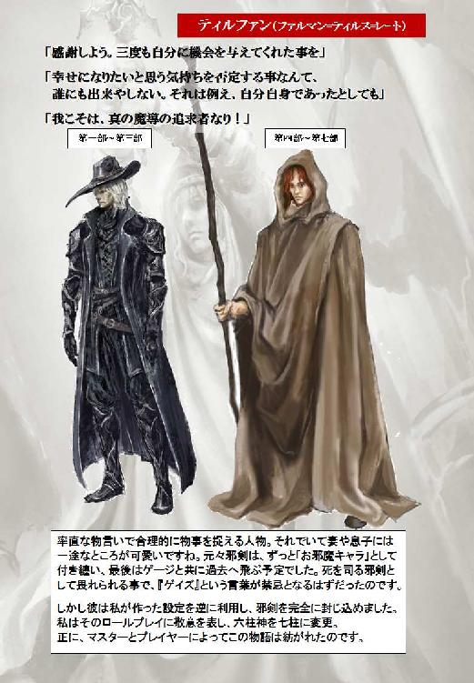
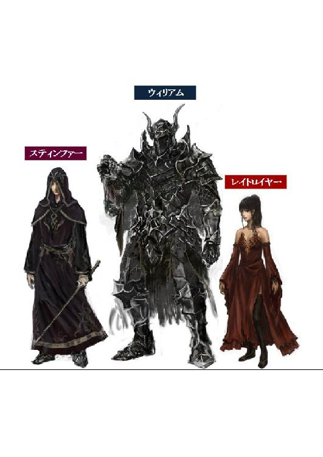

| カドルステイト物語 第七部『生命の証』 | |
| 守下 尚暉 | |
| pubful (2017) | |
守下尚暉 作
カドルステイト物語
第七部 『 生命の証 』
第一章 魔導の追求者
１
透明なカプセルのような容器が並べられた不思議な広い空間。
隅の床に大きな穴が空き、その向こう側に青い空が顔を覗かせているこの大きな広間は、かつてカドルステイトの聖堂魔術師達が、時の流れにさらされて生きる事になった際、いずれ訪れる死の脅威から免れる為に様々な実験を重ねてきた「転生の間」と呼ばれる研究室である。その原理は、例え肉体が寿命を迎えても、自分の生体情報を事前に装置に仕込んでおく事で、そこから新しい素体を創り出し、その中に記憶を移し替える事によって、永遠に魔導の追求を続ける事が出来るというものだ。
本来、転生の秘術リインカーネーションは、魂の補完を保証するだけの魔法である。それによって生まれ変わりを果たしたとしても、次の種族は人間とは限らない。加えて、長い時間軸の中のどの時代に生まれ変わるかも任意に選ぶことは出来ず、更に前世の記憶も全て失われてしまう。しかし、古代魔法文明の生き残りである聖堂魔術師達は、自分の意志で自由自在に生まれ変わりを果たす転生の秘術の研究に成功した。そしてそれこそが、彼等の新しい不死者、即ちイモータルの概念となったのだ。
その部屋の一角で、円になって立っている五人の男女が居た。彼等は全員が左腕を前に伸ばし、まるで円陣を組むかのようにその左腕に嵌められた銀色に輝くバングルを重ね合わせていた。カドルステイトと呼ばれる古代魔法文明の生き残りである三人のイモータルと、そして二人の冒険者が、今、その儀式によって記憶の交換を行ったのだ。
悠久の時の中に存在し続けてきた古代魔法王国カドルステイト。その途方も無く長い歴史とイモータル達の全ての秘密を知る事になったデインとティルファンは、遙かなる時の中に隠された真実に驚かされながらも、ゆっくりと自分の意識が現実世界に引き戻されていくのを知覚した。そして二人は、自分の意識の中に入り込んでいたイモータル達の記憶の欠片が、徐々に意識の外側に押し出されていく感覚を味わいながら、静かに今の状況を確認し始める。
デインとティルファンは、全身から汗が噴き出していた。
仲間の冒険者達は、そんなデインとティルファンの様子を心配そうに見つめている。リフレアは、まさか義父のジェルミナ卿から預かったバングルが、魔法王国カドルステイトで作られた工芸品だとは、想像だにしていなかった。カドルステイトの生き残りであるイモータル達は、デインに全ての真相を打ち明ける際、全員が左腕を捲り上げて、そこに装着していたバングルをさらけ出したのである。
それは、自分の罪を相手に打ち明け、赦しを乞う為の懺悔に用いる工芸品だと、リフレアは義父であるジェルミナ卿から教わっていた。そしてリフレアも、それをずっと信じていた。しかし、実際は違ったのだ。そのバングルは、一切の誤解なく相手と意思疎通を図る為に、互いの記憶と経験を交換し合うという、言葉を超えたコミュニケーションの為に作られた魔法の工芸品だったのである。
リフレアは、その両の腕に嵌めていた二つのバングルの内、ひとつをデイン、もうひとつをティルファンに貸し出した。そして三人のイモータル達が打ち明けた古代魔法文明の真相を、デインとティルファンの二人が冒険者達を代表して知ることになったのである。
「これで、お前も全てを理解しただろう。お前はかつて、このカドルステイトで最も強い魔力を持った聖堂魔術師、時を司るイモータル、ディルティンバー＝レークだったのだ。だが、その頃の記憶が一切無いのだから、お前にその自覚が無いのも無理はない。そして今、帝国の総督によってもう一人のディルティンバーが創り出されてしまった。こうなってしまっては、もはや誰が本物のディルティンバー＝レークなのか分からない......。こうなってしまう事を、私は一番恐れていたのだ」
紫色掛かった特徴的な髪の若い魔術師は、その目をデインに向けて言った。髪と同じ紫のローブを身に纏った彼の名はスティンファー＝レイスといい、彼の仲間からはステインとの略称で呼ばれている。カドルステイトの聖堂魔術師達の中ではリーダー的な存在にして、無を司るイモータルである。
デインは、短い黒髪と鋭い相貌が印象的な若者で、鋲の打ち込まれた丈の長い半袖ベストのような防具に身を包んでいた。彼は、小さな頃からリーフの村の長老であるバーンによって育てられてきたが、実はその村の外れにある谷で拾われた孤児である。デインが赤ん坊の頃、谷に捨てられていたデインのすぐそばには、分厚いスクロールと弓、それと対になった二本の矢が置かれていたというのだ。デインが小さな頃から使い込んできたその弓には、スティンファー＝レイスという名が刻み込まれていた。長老からその事実を聞かされたデインは、その弓と二本の矢、そして一枚のスクロールを手掛かりに、自分が生まれた真の故郷を探す旅を続けてきたのだ。
そのとき、幼さを感じさせる女の子の声が聞こえてきた。
「ステイン、それは厳密には違う。デインの記憶は今、ゲージによって新しく創られた素体の中に入っているけど、ここに居るデインには、本物のデインの魂が宿っている。つまり、ここに居るデインこそ本物のデイン。デインの魂が宿った素体。その素体が成長した姿。言い換えるなら、本物のデインの正統な記憶の容れ物」
小さなエルフの少女は、そう言ってスティンファーの言葉を訂正する。彼女の名はセフリアース＝レイン。セリアスとの愛称で親しまれている彼女は、カドルステイトの聖堂魔術師の一人で、風を司るイモータルである。長い金髪に尖った耳を持ち、まるでとても繊細に作られた人形のようにも見える彼女だが、その口から発せられる言葉には、どこか見た目にそぐわない達観した物の見方と、感情に不慣れな不器用さが滲み出ていた。
セリアスは、他の誰よりも、デインにディルティンバー＝レークの頃の記憶を取り戻して欲しいと願っていた。それは、彼女がかつてカドルステイトにおいて、魔術師であった頃のデインのことを愛していたという事に起因している。
すると今度は、独特の抑揚の無い少年の声が、この広い空間に響き渡った。
「セリアスの言っている事が正しいとすると、ゲージが創り出した新しいデインの素体に宿っている魂は、ゲージの魂という事になりますね。あの男の発想力には恐ろしいものがある。ディルティンバーの記憶を引き出す事に限界を感じたゲージは、デインの新しい素体を創り出し、その中にディルティンバーの記憶を移すと共に、空になったティルメントを介して今度は自らの記憶と魂も一緒に吹き込むという、独自の秘術を編み出した事になるだろう」
セリアスと同じくらいの背丈しか無い銀髪の少年は、彼女と同じくその見た目にそぐわない大人びた感想を述べながら、顎の下に手を当てて考えを巡らせた。彼の名はスティルバー＝レスト。スティールとの略称で呼ばれる彼も、カドルステイトの聖堂魔術師の一人で、かつて魔術師だった頃のデインと最も仲の良かった友にして、光を司るイモータルである。
デインは、長い旅の中で様々な苦難を乗り越え、ようやくスティンファー＝レイスという人物を見付け出し、自分の故郷カドルステイトに足を踏み入れて、自分が一体何者なのか、その真相を知るに至った。それは、カドルステイトの生き残りであるスティンファー、セリアス、スティールの三人の経験から齎された記憶の欠片によって知り得た知識だった。ついにデインは、「故郷探し」という、この長い旅の目的を達成したのである。
しかし、旅の目的は果たしたが、問題はまだ解決していない。
古代魔法王国カドルステイトの生き残りであるスティンファー、セリアス、スティールの三人は、デインにディルティンバー＝レークだった頃の記憶を取り戻させようとしたものの、彼の記憶が宿った二つのティルメントをゲージという男に奪われ、その試みは失敗に終わったのだ。そしてゲージは、新しいデインの素体を創り出し、その肉体の中にティルメントの記憶を入れ込んだ。しかも、ゲージが新たに創り出したデインは、かつて魔術師だった頃のデインとは微妙に違っていたのだ。そのデインは、魔法に対する深い知識とそれを発現させる強力な魔力を備えながらも、素体に宿った魂と意志は、魔導に対する飽くなき追求に渇望している帝国の総督、ゲージのそれだったのである。
「つまり、さっき生まれたばかりの新しいディルティンバーの素体は、ディルティンバーの記憶と知識を有しているものの、ゲージという男の意志が宿っているという事だな。ディルティンバーにしてディルティンバーに非ずと言ったところか......」
スティンファーは頭を抱えていた。彼が持つ無の魔法によって、新しく創り出されたデインを時間の止まったカドルステイトの内部へと閉じ込めたものの、ディルティンバーは時を操る魔法を得意としているのだ。普通の生物なら決して抜け出すことなど不可能な空間だが、それがディルティンバーに通用するとは思えない。いずれ、その閉じた空間から彼が抜け出してくるのは、文字通り時間の問題と言えるだろう。
そんな三人のイモータル達の姿を見ながら、冒険者達の中に居た一人の神官が、一歩前に歩み出て口を開いた。
「では、どうでしょう？ その新しいデインの素体を、便宜上、ゲージと名付ける事にしてみては？ 正直、傍から聞いていると、ややこしくて仕方がありません。その肉体に宿っている魂と意志がゲージのものであるというのなら、それはやはりゲージと呼ぶべきでしょう」
そう意見した神官クレンスは、鉛色の傷んだ鎖帷子に身を包み、装飾の少ない防具を兼ねた頭冠を頭に深くかぶっていた。彼は、デインと長い旅を通して苦楽を共にしてきた冒険者の一人であり、また、このパーティの頭脳でもあった。クレンスは、常に冷静に物事を分析し、あらゆる問題に対して具体的な解決策を見出すことを得意とし、加えて温厚かつ正義感が強い人格者でもあるのだ。
そんなクレンスは、言葉や理屈で表現するのが難しい直感や感覚に偏りがちなデインとは、完全に正反対の性格の持ち主だと言っても過言では無いだろう。しかし、それが故にデインとは馬が合う。今やクレンスは、デインにとって無二の親友と呼べる存在にまでなっていた。
「ボクもクレンスさんに賛成！ だって、見た目も兄ちゃんとソックリで紛らわしい上に、名前までディルルン......ルンバ？ とか、ややこしいこと言われても、頭がこんがらがっちゃうもん。それだったら、もう最初っからあの人のことは、ゲージって呼んだ方が分かり易いよ」
小さな少年カータは、クレンスの意見に一票を投じた。一見女の子のようにも見える可愛らしい盗賊は、黒いフードのついた腰丈までの短いマントを羽織り、その下には身体のラインがぴったり出る革スーツに身を包んでいる。素早さと器用さを身の上とする彼は、戦闘は不得手だがパーティにとって欠かせない存在だった。
カータはデインの事を「兄ちゃん」と呼び、実の兄のように慕っているが、それは二人が同郷であり、リーフの村のバーン長老の手によって兄弟のように育てられたからである。「故郷探し」の旅に出ることを決意したデインについていく為に、カータは自分の本当の母親を探す「母親探し」を旅の目的に掲げ、デインと共にリーフの村を後にしたのだ。しかし最近カータは、デインの旅についていく口実のように利用していた「母親探し」を、真剣に遂行しようと考え始めていた。
「自分にも、にわかには信じられない。まさか、デイン君がかつて、古代魔法文明の魔術師にして、イモータルと呼ばれる存在......つまり不死者であったとは。実際、まだ心の整理が付いていないのが正直なところだ......」
フードの付いた濃いベージュ色のローブを纏った魔導師ティルファンは、憔悴した表情を隠し切れない。燃えるような真っ赤な頭髪が特徴的な彼の手には、奇妙にねじ曲がった木製の杖が握られている。古代魔法王国カドルステイトの生き残りである三人のイモータル達が、バングルを介してデインに全ての真実を打ち明けると言った際、魔導師であるティルファンもリフレアからバングルを預かって、冒険者達を代表してその知識を垣間見ることになったのだ。それは正に、彼の故郷テロメニアでも知られていない、魔導の歴史の神秘だった。
ティルファンは実はカータの父親だが、その事実をまだ誰にも明かしていない。彼の旅の目的は、息子であるカータを危険な旅から護ることである。それは、ティルファンの妻であるレーナが、彼に託した最後の願いでもあった。呪いの力に蝕まれ、『猛焔の旅団』に身を投じて魔女に堕ちたレーナは、最後までカータのことを気にしていた。息子であるカータが、長い旅の末にようやく見付け出した母親が、実は破壊と殺戮に身を投じていた魔女であったなどという、そんな不幸な結末があって良いはずが無いのだ。ティルファンは妻の意志を尊重し、決して自らの正体を誰にも明かそうとしなかったが、しかし、それにも限界を感じ始めていた。デインが旅を終えた時、カータの旅も終わる。それまで息子を護り切れば良い。ティルファンは当初、そう考えていたのだ。しかし、カータにとって唯一の肉親とも言えるバーン長老の死に直面した際、カータは旅の目的である「母親探し」を、何としても成し遂げる決意を固めていた。それを肌で感じ取っていたティルファンは、別の答えを導き出す必要性に迫られていたのだ。
「西国の英雄『死にたがりのデイン』が、実は不死者だったとは笑わせるぜ。冗談にしちゃ、洒落が効き過ぎてるんじゃないか？ 名付け親のロバート司教も、皮肉のこもった良いセンスしてる」
肩を竦めてそう言った体格の良い戦士は、その名をライドといった。小豆色の革スーツに身を包み、板金で作られた胸当てと肩甲、手甲、脛当で護りを固めた彼は、ハルバードと呼ばれる柄の長い重量武器の扱いを得意とし、敵を寄せ付けずに倒す戦闘スタイルで攻防に優れた能力を発揮する卓越した戦士である。ライドは、クレンスから全幅の信頼を寄せられているこのパーティのリーダーだが、決してクレンスのように冷静な頭脳や的確な分析力を持っている訳ではない。むしろ彼は、その内に秘めた熱い情熱のようなものを前面に出す激情の性格の持ち主である。しかし、クレンスには無い合理的な物事の捉え方と、一切の迷いが無い鋭い行動力は、このパーティに程良い緊張感を齎しているのだ。
時に味方をも欺いて仲間を護ろうとする彼の行動原理は、長く冒険者を続ける中で経験してきた数々の挫折に裏付けされたものだった。「死を呼ぶライド」との自分の二つ名を、「（味方の）死を呼ぶライド」と自ら揶揄して嘲笑する彼は、仲間を護る事に対して、一種の覚悟のようなものさえ窺えるのだ。その厳しい物の見方と、他人からどう思われても動じない心の強さを、クレンスは高く買っていた。
「わたしも、クラーレンス様の意見に賛成です。その方が分かり易いと言うのもありますが......わたしにとってはそれ以上に、さっきの人物のことを、とてもデイン様と呼ぶ気にはなれないのが、一番の理由です......」
全身を白銀の甲冑で固めた騎士から発せられた声は、意外にも高く響く女性の声だった。彼女は若くしてリート教会のパラディンの資格を得てブランアーノ騎士隊の総長になった優秀な騎士である。全身甲冑に身を包んだ彼女を一見しただけでは、その性別までは判別する事が出来ないだろう。しかし、如何に無骨で鉄壁の護りを誇る甲冑と言えども、一挙手一投足から滲み出るその気品の高さまでは覆い隠すことが出来ないのだ。その伸ばされた姿勢の良い背筋と雅やかな立ち居振る舞いは、紛れもなく厳しく躾けられた貴族の娘のそれであった。
リフレアが誇る鉄壁の護りは、冒険者達のパーティにこの上ない安定感を齎していた。彼女の力なくして、デイン達はここまで旅を続ける事など出来なかったであろう。それは誰も口に出さずとも、全員が認めるところである。
スティンファーは、そんな冒険者達の意見を受けて頷きながら口を開いた。
「分かった。お前達の言うことも最もだ。ゲージによって創り出された、あの新しいディルティンバーのことは、便宜上、ゲージと名付けることにしよう」
すると、それを聞いたエルフの少女セリアスは、ゆっくりとデインに向かって歩みを進め、突然、彼の逞しい身体に飛び付くように抱き付いた。リフレアはそれを見て思わず表情が強張ったが、ヘルムに覆われた彼女の素顔を誰も窺い見ることは出来ない。
「デイン。今のあなたに言っても仕方ないのかもしれない。でも、あなたの素体にはデインの魂が宿っている。だからあたしはあなたに言うの。あたしは、あなたのことが好き」
そんなセリアスの行動を見て、リフレアは心中穏やかでは無かった。デインは狼狽えるように後ずさりしながら声を上げる。
「ちょっと待ってくれ。確かにゲージの意志が吹き込まれた新しい素体は、あんた等の知ってるディルティンバーとは言えないかもしれない。でも、だからと言って、オレもあんた等の言うディルティンバーとは違う。オレの記憶は、オレのものなんだ」
「でも、あなたにはデインの魂が宿っているのは紛れもない事実。ゲージの魂が吹き込まれたデインは、デインの記憶を保有していたとしても、本当のデインとは言えない」
そう言って、後ずさりするデインを追うように迫ろうとするセリアスに対して、その間に滑り込むかのように女騎士が割って入り、口を開いた。
「セリアス様、今デイン様が仰ったことが全てだとわたしは思います。デイン様の記憶は、どこまでいってもデイン様のものです。そんなデイン様に、かつての記憶を無理に入れようとすることは、デイン様の意志に反したことではないでしょうか？」
「それは、その素体のデインがそう思っているだけであって、本当のデインは転生した素体に元の記憶を取り戻すことを望んでいるはず」
リフレアの言葉に対してセリアスは真っ向から反論する。
リフレアは、デインがカドルステイトの魔術師であった頃の記憶を取り戻す事に対して消極的だったのだ。彼女はこの旅の間、自分の中に芽生えたデインへの想いに気付き、そしてそれを彼に告白していた。だが、デインは今、旅のことで頭がいっぱいで、リフレアの想いを受け入れられる状態ではなかった。そこで彼女はデインと約束を交わしている。デインがこの旅を終わらせた暁には、リフレアの事を真剣に考え、その想いに対する確かな答えを導き出すと。
そんな彼が、もしカドルステイトの魔術師だった頃の記憶を取り戻してしまったら、全く別の人格になってしまうのではないだろうか？ そのときは、リフレアにとって大切なその約束も、デインは全て忘れてしまうのではないだろうか？ 彼女はそれが心配で仕方なかったのだ。
「待て、セフリアース。今考えなければならない事はそんな事ではない。時間が止まった空間であるカドルステイトの内部に閉じ込めたゲージをどうするか？ それを考えなければ、お前が望む本当のディルティンバーの記憶を蘇らせることも出来ないのだぞ。何故なら、ディルティンバーの記憶は今、ゲージが保有しているのだから」
スティンファーは、リフレアに反論しているセリアスを宥めるかのように言った。
「分かってる。ゲージをどうするか？ そんなこと決まってる。今ゲージが保有しているデインの記憶を返して貰う。そしてもう一度デインの記憶をティルメントに移して、それをデインの魂が宿った本来の素体に戻す。そうすれば全て解決するはず」
セリアスはスティンファーにそう返し、床に転がったままになっていた二つのティルメントを拾い上げる。ティルメントとは、ちょうど頭にかぶれるくらいの大きさの銀の輪で、古代魔法王国カドルステイトが生み出した特別な魔法の工芸品である。それを用いれば、人の記憶をその中に移し、保存することが出来るのだ。
リフレアは、ゲージからディルティンバーの記憶を抜き取るところまでは、イモータル達に協力出来ると思った。何れにしても、今のゲージの存在は危険過ぎるのだ。さっきまでゲージだった男の肉体は既に、動かぬ銀の彫像となり、この転生の間に放置されている。帝国の総督でもあるこのゲージという男は、デインに短剣を突き刺す事により、彼の血液を採取し、それを触媒にして新しいデインの素体を創り出した。そしてその素体の中に、魔術師ディルティンバーの記憶を移し、更にゲージ自らの魂まで吹き込んでしまったのである。
ティルファンはしゃがみ込んで、カプセルの周りに散乱しているスクロールや古文書のようなものを手に取って見ながら、感心したように呟く。
「なるほど、この術式を用いれば、ティルメントの中の記憶を引き出したり、逆に記憶をティルメントの中に移したり出来るのか......」
それはゲージが、ここで新たなデインの素体を創り出し、その素体にティルメントの記憶を移す際に用いていた術式である。そこにはかつて、レネトス魔導国でゲージが編み出したと言われている、ティルメントの記憶の一部を引き出す魔法理論が、詳細に書き込まれていた。そんな赤髪の魔導師を見て、スティンファーは警鐘を鳴らす。
「魔導師よ。記憶の欠片の中でお前も見ただろう？ 本来、記憶とは魂によって肉体と強く結び付いている。簡単に他人の記憶を自分に入れたり、自分の記憶を他人に移したり出来るようなものでは無いのだ」
スティンファーは、ゲージの魔法理論をティルファンが知る事を、あまり好ましく思っていないようだ。この技術は様々な問題を孕んでいる。そのことは、ティルメントを開発したスティンファー自身が一番よく知っているのだ。すると、銀髪のイモータルであるスティールが口を挟む。
「だが、そのゲージという男は独自の魔法理論によってそれを可能にしました。それは、その男が持つ魔導に対する執念にも似た飽くなき探究心がそうさせたのでしょう。しかし、ティルメントに秘められた深い領域の記憶にまで踏み込んでしまうと、スタチオーンが発現してしまう。さすがにゲージが編み出した魔法では、全ての記憶まで引き出すことは出来なかったようです」
ゲージは、ディルティンバーのティルメントの力を引き出すことによって、かつてレネトス魔導国に大いなる繁栄を齎したが、その後、スタチオーンによってその国は崩壊した。スティンファーは首を横に振りながら、そんなスティールに言葉を返す。
「だとすれば、新しいディルティンバーの素体に吹き込まれたゲージの魂と記憶も、恐らく不完全なものに違いない。この男が編み出したティルメントの力を引き出す魔法は、邪道と言わざるを得ないだろう。本来、ティルメントの扱いには細心の注意が必要なのだ。ティルメントを扱おうとする魔術師の魔力が不足した場合、クロインツロイドから大量の魔力が供給され、それを補おうとしてしまう。そうなるとスタチオーンが引き起こされる可能性が極めて高い。見ろ、このゲージのようになってしまうのだぞ」
そう言ってスティンファーは銀の彫像と化したゲージを指差す。スタチオーンとは、古代魔法文明カドルステイトが滅びた原因とされている、魔力の結晶化現象の事である。ティルメントを無為に扱うと、スタチオーンが発現する危険性が高いのだ。実際、それによってゲージは、その肉体が銀化してしまっている。そこにある銀の男の立像は、ついさっきまでゲージの魂が宿っていた身体であり、その成れの果てなのだ。
赤髪の魔導師ティルファンは、それでも床に散乱したゲージの魔法理論が気になるのか、その中から数点の書物を懐に忍ばせると、今度はさっきまでゲージだった男の彫像を注意深く観察し始めた。スタチオーンになったゲージは、まだ生きているかのように精巧で、まるで今にも動き出しそうだった。ゲージのマントのシワ、腰に挿された短剣、その全てが、そっくりそのまま銀と化した美しい彫像である。
ティルファンの視線は、ゲージのマントの内側に纏められている大量のスクロールを発見したところでその動きを止めた。そこに纏められたスクロールの束には、古代文字もしっかりと刻まれ、まだ充分に使えそうに見える。魔導を追求する者にとって、高度な呪文が記されたスクロールは極めて貴重な物なのだ。ゲージは大量のスクロールを保有し、それを用いて危険な呪文を次々に詠唱して、これまで冒険者達を散々苦しめてきた。そしてティルファンは、ゲージが保有するそのスクロールに手を掛け、それを引っ張り出そうとしてみたものの、やはりその試みは失敗に終わった。スクロールは完全に銀の彫像と化したゲージと一体化している。そもそもスクロール自体が、既に銀と化しているのだ。
「無駄だ、魔導師よ。その男が保有していたスクロールも、既にスタチオーンなのだ」
スティンファーは、そんなティルファンの考えを見透かすかのようにそう言った。どうやら、ゲージの持っていたスクロールは、既に本来のスクロールとしての力を失っているようだ。
「スタチオーンになった場合、その者が身に付けていた衣服なども全て、一緒にスタチオーンになるのだな」
ティルファンは残念そうにそう漏らすと、銀髪の少年スティールは、ティルファンの前に歩み出て頷きながら口を開いた。
「その通り。スタチオーンは、完全に魔力が固着化してしまい、他の魔法を一切受け付けないのが最大の特徴だ。理由や仕組みは分かりませんが、その人物が身に付けていた衣装や装備なども全て、一緒に銀化してしまうようですね」
スティールの言葉に、赤髪の魔導師が落胆の表情を浮かべた、その時だった！
「ん？ なんだ？」
デインは、誰よりも早くその異常に気付いて声を上げた。
「どうしたのですか？ デイン」
クレンスが彼に疑問を投げ掛けたその瞬間------。
グォン、グォン、グォン......。
カドルステイトの内部から、気味の悪い異音が聞こえてきたのだ！
「まさか、ゲージがクロインツロイドを操作しているのか？」
スティンファーは、その異音の正体が、カドルステイトの中枢にあるクロインツロイドから発せられているものである事を即座に察知した。有り得ることだ。そして、恐るべき事である。スティールは切迫した声を上げた。
「まずい。ゲージがディルティンバーの記憶の中からクロインツロイドの事を知り、その魔力を引き出そうとしているのだとしたら......」
「スタチオーンが世界に発現してしまう事になる。この世界に存在する全ての生命が滅びてしまう！」
セリアスは、その恐るべき光景を現実的に想像しているのか、みるみる内に彼女の顔色が蒼ざめていく。スティールは、そんなセリアスを横目に見ながらスティンファーに進言した。
「スティンファー！ 鏡の間に行きましょう！ やはり今のゲージは危険過ぎる。まずは彼からディルティンバーの記憶を取り戻す必要がありそうです！」
「そのようだな！ 冒険者達よ、悪いがお前達にも協力して欲しい。ディルティンバーを相手にするとなると、一筋縄ではいくまい。もちろん、無理にとは言わないがな」
スティンファーは冒険者達にそう言うと、走って転生の間の出口から出ていった。スティールとセリアスもそれに続いていく。
「ライド殿！」
クレンスは、その様子を見ながらパーティのリーダーであるライドに判断を仰ぐ。
「そんなの、俺に聞くまでもないだろう！ 何もせずに石になるくらいなら、足掻いた方がいいぜ！」
ライドがそう宣言すると、冒険者達は頷いてイモータル達を追い掛け始めた。厳密には「石」になる訳では無いが、クレンスはそんな小さな事をライドに指摘する気にはなれない。彼はただ、自分達が次に成すべき事。その方向を何の迷いもなくハッキリと指し示してくれれば、それだけで充分にクレンスは安心出来るのだ
２
暗い。
物凄い圧迫感が彼を襲っていた。
しかし、実際にはそこが暗い訳でも、強い圧力が掛かっている訳でも無い。明るい光に満ち溢れた、開放的な空間だった。
ここは、銀の球体カドルステイトの内部。
球体内には銀で造られた大きな建造物が多数乱立し、地表の隙間からは、葉を茂らせた木々が生い茂り、その表面は一見緑に覆われている。とても美しい光景だったが、しかし、この空間内には他の場所とは決定的に違う何かがあり、それが凄まじい圧迫感を与え、視覚的には明るいにも関わらず、独特の暗さのようなものを彼に感じさせていた。意識はあるのに動こうとしても動けない。これは、身体に力が入らないとか、身体が言うことを聞かないとか、そういう次元のものではなさそうだ。そしてゲージは、ディルティンバーの知識の中から一つの答えを導き出す。そう、このカドルステイトの内部の空間は、時間が止まっているのだ。
ゲージは、デインの『生命の証』から新しいディルティンバーの素体を創り出し、その中に二つのティルメントの記憶と、そして自分の魂と記憶も一緒に植え込んだ。その際、ゲージの元の肉体はスタチオーンによって銀の彫像と化したものの、彼の意志は今、確かにこのディルティンバーの素体の中に宿っているのだ。ゲージの試みは成功だった。
（そうだ！ 私は、生まれ変わったのだ！）
様々な古代魔法文明の神秘の記憶に触れていく中で、ゲージはこれまで解明出来なかった数々の謎を知り、喜びに震えていた。これまでゲージが何十年、何百年掛けても決して知り得なかった謎、世界の真理の全てが今、まるで手に取るように紐解かれ、自分の知識と同化していくのをゲージは感じ取っていた。
（素晴らしい！ 私が知りたかったのは、これなのだ！ これが魔導か！ これが世界か！）
ゲージは、世界の真理の一端に触れながら、崇高本能の伸びるがままに身を任せ、ディルティンバーの持つ知識を貪るように漁り、魔導を追求する喜びを噛み締めた。
（なんということだ！ まるで水が大地に染み込むかのように、その知識の全てを即座に理解することが出来るではないか！ なんて素晴らしいのだ！）
ゲージはディルティンバーの持つ膨大な魔法の知識を、次々に自らの知識としていった。そしてふとゲージは気付く。その多くの知識と記憶の中には、ゲージがかつてアルギニア王国で喚び出した、邪剣ギートロイヤーの謎も含まれていたのだ。
（なるほど、あの呪われた剣には、そのような秘密があったのか！）
ゲージは、新しい自分の身体に漲る強い魔力を感じ取って、その力の大きさに歓喜した。かつてレネトス魔導国の終末期、その王バーンとティルメントを巡って戦いになった際、ゲージは自らの身体に眠る魔法の力を封じられてしまっている。それ以降、ゲージは二度と、自分の力で魔法を発現させる事が出来なくなっていた。
しかし、それでもゲージは魔導を追求し続ける事を決して諦めなかった。ゲージの新しい素体として鍛え上げた肉体には、盗賊としての技能を叩き込み、世界中を旅して廻り、ダンジョン奥深くに眠る珍しい呪文が記されたスクロールを掻き集め続けた。国を買える程の大金を積んで、探し求めていたスクロールを手に入れた事もある。そして今、ゲージのその地道な努力が、ついに実を結んだのだ。ゲージはこの上ない解放感を味わっていた。長い間、魔力を封じられてきた苦渋の歳月。それを乗り越えて、ついにゲージは、自らの身体に眠る魔力によって、再び魔法の力を発現させる事が出来るようになったのである。バーンによって自らの身体に眠る魔力が封じられるより以前。彼自身が本来持っていた魔力の大きさをも遥かに凌ぐ、凄まじい強い魔力が、このディルティンバーの素体には宿っているようだ。それを感じ取った時、ゲージの心は歓喜に満たされ、この上ない満足感と達成感を味わっていた。
何処からか、カチコチと規則的な音が響いている。
ふと、音のする方に意識を向けてみると、自分のすぐ隣に、巨大な四角柱の柱のような物が存在している事にゲージは気付く。それは正に時計塔だった。それが、クロインツロイドと呼ばれる無限の魔力の源である事を、ゲージはディルティンバーの知識から即座に知ることが出来た。
（素晴らしい！ 私が今支配している、このディルティンバーという魔術師は、これだけのものを創り出したと言うのか！）
ゲージは、新しい自分の身体に漲る強い魔力に興奮しながらも、それを上手く操れない自分自身に苛立ちを感じ始めていた。この時間が止まった空間の中では、当然の事ながら一切身動きする事が出来ない。自分はこのまま、ただ、時間の止まった空間の中で静止しているだけの存在になってしまうのだろうか。しかし、思考力だけはハッキリと残されている事にゲージは気付く。これが、ディルティンバーの持つ力だと言うのだろうか。身体を動かす事は出来ずとも、しっかりと頭脳を回転させ、考えることが出来るのだ。せっかく危険な術式を行使してこの素晴らしい力を手に入れたのだ。このまま、時間の止まった空間の中でただ静止するだけなど、ゲージには決して受け入れられなかった。
そしてゲージは考える。
ディルティンバーが持つ深い魔法の知識を巡り、ゲージはこの空間から脱出する方法をひたすら考え続けた。かつてカドルステイトで最も強い魔力を持つと言われた魔術師ディルティンバー＝レーク。彼が持つ膨大な記憶とその魔法の知識は、非常に細かい糸が、二度と解けない程に絡まりあったかの如く、複雑で難解なものだった。しかし、その事が却ってゲージの探究心に火をつける。どこまでも無限に続くその魔法の知識。普通の人間なら考えるのを止めてしまう程の果てなき知識の大海を、ゲージは喜々として受け入れ、決して思考を止めること無くその全ての魔導をひとつひとつ丁寧に紐解き始めた。そしてその果てしない情報量の中を彷徨いながら、ゲージはついに見付け出す。ディルティンバーの記憶の糸を辿っていく中で、ある特殊な魔法の存在にゲージは行き当たったのだ。自分の身体に働き掛ける時間を止める魔法を、ディルティンバーは知っていたのである！
（これだ！ これならこの時間が止まった空間から脱出できるに違いあるまい！）
問題は、その魔法を上手く使いこなせるかどうかである。ゲージはまだ、この新しい素体に慣れていないのだ。自身に働き掛ける時間の流れを止める魔法は、ゲージが居た世界ではまだ知られていない、非常に高度な秘術であることは、考えるまでもなく明らかだった。そんな神秘の秘術を、この慣れない身体を使っていきなり上手く操れるかどうかは、正直言って未知数である。例えもしそれに成功したとしても、恐らくそう長くは保たないだろう。
そして硬直した姿のまま、ゲージは更に考えを巡らせ始める。自身に働き掛ける時間の流れを止める魔法を用いて、この止まった空間内を自由に動けるようになったとして、その短い時間の間、自分は何を成すべきかを------。
そのとき、突然ゲージは行き着いた。
深い思考に没頭していく中で、ゲージはその力に気付いてしまったのだ！ 深く深く考えを巡らせた時、ゲージは、自分がイメージした行動の先に、どんな結果が起こるのかを垣間見る事が出来るのだ！
（見える！ 見えてしまう！ 行動の先の結果が見える！ なんて素晴らしいのだ！ これが、時を司るイモータル、ディルティンバー＝レークの能力だとでも言うのか！）
ゲージは、その魔導の神秘の一端に触れて激しく興奮した。そして更に考えを巡らせ始める。どんな行動をすれば、自分にとって最も良い結果を得ることが出来るのかを。
（ディルティンバー＝レークが知っている時間の働き掛けを止める魔法。それを用いてこの空間から脱出したとしても、外にはあの三人のイモータルと冒険者達が待ち構えている。それは私にとって、邪魔な存在でしかあるまい！ その愚か者共を始末すれば、この素晴らしい知識と記憶は、完全に私のものになるのだ！ あとはゆっくりと、誰にも邪魔される事なく、それこそ悠久の時の中で、私は、まだ私の知らぬ魔導を追求し続けることが出来るだろう）
そう考えた時、ゲージは再び、あの邪剣の影が頭の中に過ぎっていくのを感じ取った。かつてゲージはその邪剣を喚び出し、当時、西国の英雄と持て囃されていたあの目障りなイモータル達を、あっと言う間に三人も殺害しているのだ。それを思い起こした時、ゲージはそれだ！ と確信した。
そしてゲージは探し始める。
（あの邪剣は今、何処に在るのだ？）
ゲージは意識を集中させ、その邪剣の在処を探し続けた。それは、探索魔法に似た不思議な力である。かつて自分が喚び出した邪剣が、その後どうなっていったのかをひたすら追跡し続ける事で、遠い過去の出来事が、ゲージの深い意識の中に映し出されていくのだ。
アルギニア王国を攻めあぐねていたウィリアム総督に協力し、ゲージはレイトロイヤーと共に召喚魔法ゲートによってその邪剣を喚び出した。邪剣の威力は凄まじく、瞬く間に三人ものイモータル共を葬り去り、残された最後のイモータルの左手にそれを握らせる事によって、そのイモータルの力をも利用することをウィリアムは思い付いた。
その後、ウィリアムはディクトリア王国を攻め落とす為のパーティ『猛焔の旅団』を作り、その中に邪剣を握ったイモータルも編成する。計画は順調に進んでいるかのように思われたが、やがて冒険者達の活躍によって阻まれ、頓挫してしまう。
更にアルギニア王国まで乗り込んできた冒険者達は、邪剣を握ったイモータルと激しい戦いを繰り広げていた。そしてゲージはある事に気付く。イモータルと戦うその冒険者達の姿をよく見てみると、彼等はさっき、自分と剣を交えたばかりの、あの冒険者達だということを！ その中には、古き友バーンが手塩に掛けて大切に育てていたあの若者の姿も含まれていた。彼が、ディルティンバー＝レークの素体である事を、ゲージはリーフ解放戦の後になってから知る事になったが、正直、自分が欲する力を持たない空っぽの素体になど、ゲージは全く興味が無かった。侮っていたと言っても良い。記憶を持たない空の器が、まさかここまで自分の前に立ち塞がる存在になろうとは、ゲージは思いも寄らなかったのだ。
（なるほど。これが古き友、バーンの狙いだったという訳か）
道理であの若者とは深い縁がある訳だ。小癪な三賢人バーンは、衰えゆく自らの手ではなく、その若者を自分に差し向けて来たのだ！ その若者の背後に、これまでゲージが考え及びもしなかったバーンの深い意図と、自分への確かな敵意を持った賢者の姿を、今、ゲージは思考の波の中で汲み取った。その若者との深い縁こそ、自分がカドルステイトの魔導に精通している証とも言えるだろう。ゲージはバーンの意図を今はじめて知り、そして納得した。
ゲージの意識の中に映し出されたその冒険者達は、驚くべきことに、邪剣を握ったイモータルと互角以上の戦いを演じている。そのイモータルが如何に強力な魔力の持ち主とは言え、一度の詠唱で一つの魔法の効果しか発動させる事の出来ない一人の魔術師が、パーティを組んだ冒険者を相手にするのには限界があるのだ。
飛行の魔法を用いて空中から剣撃を浴びせるエルフの魔法剣士。弓使いが放った大矢はイモータルが詠唱した鉄の壁の魔法によって阻まれたものの、魔導師が放った誘導性の電撃は確実にイモータルの身体をとらえ、その背後から忍び寄った少年のような盗賊によって、邪剣が引き剥がされようとしている。更に女騎士が背後から剣撃を加え、弓使いが邪剣の柄に向かって放物線を描く矢を放ったが、邪剣は自ら鋭く回転する事でそれを拒絶していた。だがそこに、強力な神の奇跡の力が発現する！ 神官が眩しく輝く杖のような工芸品を高く掲げると、アルギニア王国の先代王ディークレスが残した「希い」の力が開放され、ついに邪剣はイモータルから切り離されてしまったのだ！ 邪剣はその奇跡によって、まるで硝子が割れるかのように粉々に砕け散っていった。
その一部始終を目撃したゲージは思った。
（直ちに「それ」を回収せねばなるまい！）
ゲージは、自分の意識の中に映し出されたその邪剣の末路を知り、即座にそう判断した。過去に破壊された邪剣。普通なら、そんな物を召喚する事など不可能である。しかし、今のゲージは、時間をも超越した存在なのだ！
そしてゲージは、ディルティンバーが知る時間を操る魔法の力を発現させる。カドルステイトのイモータルは、自身が司る力を、一切の呪文の詠唱を必要とせず発現させる事が出来るのだ。次の瞬間、ゲージは自身の身体に働き掛ける時の流れを止め、この時間の止まった空間内で動く事の出来る束の間の自由を手に入れた。それを知覚した直後、ゲージは長い呪文の詠唱に入る！ ゲージは今、再び自分の身体に眠る魔力によって呪文を詠唱し、魔法の力を発現させる事の出来る喜びを噛み締めながら、一字一句丁寧に魔法の言葉を発し続けた。それはかつて、彼が最も得意としていた最上位の召喚系魔法である。
ゲージの詠唱が完成すると同時に、漆黒の鉄で出来た巨大な門が宙空に突如出現した。そしてゆっくりとその巨大な扉が低い音を立てながら開き始める。ディルティンバーが持つ膨大な魔法の知識を自分のものにした今のゲージには、狙ったものを確実にとらえて召喚できる自信があった。それが例え、過去に存在した物であろうと最早関係ない！ 彼は今、その「時」という名の力でさえも、自由自在に操れるのだ！
ゲージは、自身の身体に宿る強い魔力を感じ取っていた。これだけの力があれば、この世界に存在する全ての魔法を発現させる事が可能になるだろう。これだけの力があれば、自分の望みは何でも叶うだろう。もしこの召喚の儀式の途中で、自身の魔力が不足したとしても全く問題無い。自分のすぐ隣には、クロインツロイドという無限の魔力の源があるのだ！
３
「こっちだ！」
スティンファーの声が響く。そのすぐ後ろにスティールとセリアスが続き、少し遅れて冒険者達が彼等を追い掛けるように走っていた。銀の球体カドルステイト。それを取り囲むように張り巡らされている通路は、複雑に絡み合って様々な方向に伸びている。この区域をイモータル達は、カドルステイトの外郭部と呼んでいた。
通路を進んでいくと、カチコチという規則正しい音が徐々に聞こえ始める。なぜだか、妙に耳に残る音だった。そんな中、スティンファーに先導されて暫く走り続けると、冒険者達はひとつの長い通路を兼ねた広間のような場所に出た。非常に天井の高いこの広い通路は、外郭部の中心に見える銀の球体へと繋がっているように見える。どうやらこの広間は、カドルステイトの内部へと通じる唯一の通路になっているようだ。そして一行は、その通路の先へと急ぐ。不気味な異音は、カドルステイトの中心部から響いてきているのだ。しかしデインは、その通路の行き着く先を見て、思わず声を上げる。
「どういうことだ？ 行き止まりじゃないか！」
一見、カドルステイトの内部へと通じているかのように見えたこの広い通路の突き当たりは、銀の壁で遮られた行き止まりになっていたのである。
「慌てるな、ディルティンバー。よくそこを見るんだ」
そう言ってスティンファーは、正面に見える銀の壁面の中央を指差す。そこには、ひとつの巨大な鏡が鎮座していた。とても豪華な縁取りがされた不思議な鏡である。その鏡は一見、銀の壁に溶け込んでいるかのようにも見えたが、縁の装飾をよく見てみると、規則正しい模様のような古代文字がビッシリと刻み込まれて、独特の存在感を放っていた。デインは、バングルを介して見たイモータル達の記憶の中にあった、この鏡の間のことを思い出す。この鏡こそが、カドルステイトへの入り口なのだ。
「この中に入れるってことか？」
デインはそう言って鏡を覗き込む。しかし、鏡の向こう側もこの広間と全く同じ景色が広がっているように見えるだけで、その中に入れるという実感が湧かなかった。そんなデインを皮切りに、冒険者達は皆、思い思いにその鏡を観察し始める。そしてふと、カータがあることに気が付いた。
「ねぇ、この鏡の向こう側も、こっち側と同じ通路があるように見えるけど、よく見てみると、向こう側の通路の先には、大きい柱みたいなのが見えるよ？ ほら、こっち側には無いよね、あの柱」
そう言ってカータが指差したその先に、デインは視点を集中させてみる。確かに、向こう側の通路の先は、こちら側とは違う広い空間に繋がっていて、更にその空間の中心には、巨大な柱が立っているのが見えた。柱の中心には大きな時計盤があり、時間が止まった空間の中にあるにも関わらず、時を刻み続けている。さっきからカチコチと聞こえていた規則正しい音は、あの時計から発せられていた音だったようだ。スティールは、それを指差しながら言った。
「あれはクロインツロイド。このカドルステイトに繁栄と滅びを齎した、無限の魔力の源です」
イモータル達の記憶の欠片を垣間見たデインとティルファンは、その説明を受けずとも、それが何であるかを瞬時に理解していた。そこで起こった様々な出来事の全てを、二人はイモータル達の記憶を介して覗き見たのだ。
「おかしいな。さっき聞こえてきた不気味な異音が消えている。クロインツロイドに異常があった訳では無かったのか......？」
スティンファーは、その柱を見ながら呟くように言った。デインは、そんなスティンファーを横目に口を開く。
「と言うことは、ここは行き止まりじゃなくて、この向こう側に行けるということだな？」
そう言ってデインは、鏡の中に入ろうとした。
「待って、デイン。今のあなたじゃ......」
ゴチン。
セリアスがデインを制止しようとしたが、どうやら間に合わなかったようだ。デインが鏡の中に入ろうとすると、突如、鏡の向こう側にデインと全く同じ姿をした人物が現れ、その人物と衝突することで、彼は鏡の中に入ることが出来なかった。
「いてて......どういうことだ？ これじゃ、普通の鏡じゃないか。中に入れるんじゃなかったのか？」
デインはそう言って、不思議そうにその鏡に手を伸ばしてみる。デインが右手を鏡に当てると、向こう側に立つデインは左手を鏡に当て、彼の手に冷たい感触を伝えてきた。デインが左手を出しても、向こう側に居るデインが全く逆の動きをするだけで、やはりデインがその鏡の中に入ろうとするのを拒んでいるかのように見える。どんなに複雑なフェイントを交えても全く意味がなかった。それは正に、鏡そのものである。セリアスはそんなデインを見ながら口を開く。
「カドルステイトの中は今、時間が止まっている。時間が止まった空間に入る為には、自分の身体に働き掛ける時間の流れも止めないといけない」
「自分の身体に働き掛ける時間の流れを止める？ そんなの、絶対に無理じゃないか？」
デインはそれを聞いて呆れるように言った。スティンファーは、そんなデインに視線を向けながらため息混じりに言う。
「お前なら、それが可能だったのだ。自分に働き掛ける時間の流れを止める魔法を、ディルティンバーは扱うことが出来た。だが、今となってはもうどうする事も出来ない。あの魔法は、ディルティンバーにしか扱えなかったのだ」
そしてスティンファーは、呪文のような詩の一節を唱え始めた。
『全てを映し出せ、来る者に別世界を与えよ。
その中に世界は広がっているが、我々はその世界に干渉する事はできない。
その世界は限りを知らない。
我々が想像するよりも遥かに広く、そして最も小さい。
それはただ、己の真実の姿を映し出すのみ。
もしそれが、己の真実の姿を映し出さなくなったなら、
その瞬間、時は己に働き掛けなくなるであろう』
それは、冒険者達が長い旅を続けている中で、何度か耳にしたことのある、特徴的な響きの言葉だった。クレンスは感心しながら口を開く。
「なるほど、あの一節は、この鏡のことを謳っていたのですね」
リフレアもそれを思い起こしているのか、納得したように頷いていた。初めてその一節に触れたのは、確かブラムトリーに程近い帝国の砦に潜入したときの事だ。その中で厳重に管理されていた古文書の中に、この一節が記されていたのを彼女は記憶している。その後、冒険者達は帝国の総督スティールから、再びこの一節を聞かされた。彼はそのとき言っていた。
（この一節は、君の故郷への入り口について謳ったものです。今の君が、もし故郷への扉を見つけ出したとしても、そこを通る事は出来ない）
それは正に、この鏡のことだったのである。
そんな時、そのスティールが唐突に口を開いた。
「クロインツロイドに異常が無いのなら、無理に中に入る必要は無いと思いますが、その力、もしかしたら、わたしにも扱えるかもしれません」
「それは本当か、スティルバー！」
ポツリと呟くように言ったスティールの言葉に、スティンファーは驚きを隠し切れない。彼は食い入るようにスティールに視線を向け、その真偽を確認した。銀髪の少年は、そんなスティンファーにゆっくりと首を横に振りながら答える。
「どれ程の力が扱えるのか、正直、わたしは自分でも分かっていないのです。だが、デインからティルメントを託されたとき、どうやら彼のティルメントの力の一部を、わたしも扱えるようになっていたのだ。試したことは無いが、もしかしたら自身に働き掛ける時間を止める魔法を行使して、カドルステイトの内部に入れるかもしれない」
その言葉に、セリアスも驚いている様子だった。本来、記憶というものは、元の肉体にしか宿らないはずなのだ。ゲージは独自に編み出した魔法の力によって、その一部を引き出したり吹き込んだりすることに成功しているが、それも非常に不安定なものなのである。
「ねぇ、この鏡の中って、時間が止まっているって言ってたよね？」
その時、カータの幼い声が確認するかのようにイモータル達に投げ掛けられた。
「その通りだ、この中の空間は時間が止まっている」
スティンファーは、カータの問い掛けを肯定した。
「ってことは、中に誰か居ても、動けないんだよね？」
「その通りだ、自分に働き掛ける時の流れを止める魔法を行使しない限り、何人たりともこの中の空間で身動きする事は叶わない」
スティンファーは、カータの質問に対して懇切丁寧に答える。
「ってことは、あそこに見える人は、自分に働き掛ける時の流れを止める魔法を扱えるってこと？」
「いや、その魔法を扱える魔術師など、そうは居ない。今、スティルバーが扱えるかもしれないと示唆したものの、それもまだ、確認しない事には分からないのだ」
そうスティンファーが答えた時、彼は気付く。彼の周りに居る冒険者達のみならず、スティールもセリアスも、少年のような盗賊が指差しているその鏡の中を覗き見て、驚愕の表情を浮かべていたのだ。
「なに！ どうしたと言うのだ？」
そしてスティンファーも、鏡の中を覗き込む。鏡の向こう側に広がる広間は、内側にある広間と全く同じ佇まいを見せているが、その先に見える広い空間の存在が、この中に広がる世界が完全なる鏡面世界では無い事を証明していた。そしてその空間の更に奥に聳え立つ巨大な時計塔クロインツロイド。その静止した空間の中を、現れたり消えたりを繰り返しながら移動する人物が居るのを、スティンファーは確かに見た。
それは、必死の形相をしたディルティンバーの姿だった。
スティンファーが強制次元幽閉の魔法を掛けた際には全裸だったはずのその男は、いつの間にか漆黒のローブに身を包み、如何にも魔術師らしい出で立ちになっていた。その外観は、完璧なまでにデインのそれに準じた姿をしていたが、中に宿っている魂が違うだけで、こうも印象が異なるものなのだろうか？ その目は狂気に満ちているようにも見えた。
「あのゲージという男、なんという執念だ......！」
スティンファーは思わずそう吐き捨てる。ゲージは、自身に働き掛ける時間の流れを停止させる魔法を成功させたのか、少しずつ少しずつ、この鏡の間へと向かって来ているのだ！ 彼の恐るべき執念に、スティンファーは畏怖の念を抱かずにはいられない。徐々にゲージが近付いてくるのを見て、カータはそのすぐ隣に浮遊している禍々しい得物に気付き、叫ぶように言った。
「ねぇ、あの人のすぐそばに浮いてるあの剣って、もしかして......！」
ゆっくりと近付いてくるゲージの顔は、不敵な笑みを浮かべているようにも見える。そしてそのすぐ手前に浮遊している剣の存在に気付いた瞬間、カータはまるで凍えた小動物のように、小刻みに身体を震わせ始めた。少年にここまでの恐怖を抱かせた存在の正体に全員が気付いた時、皆、まるでこの空間も時間が停止したかのような錯覚に陥った。
「あれはまさか！」
セリアスは絶句した。スティールもスティンファーも、恐怖で顔が青ざめていく。冒険者達のみならず、三人のイモータル達も皆、ここに居合わせる者は全員、その剣に見覚えがあったのだ。そして驚きを禁じ得なかった！
「あれは、邪剣ギートロイヤーだ！」
冒険者達は一度、その恐るべき邪剣を破壊したはずである。それなのになぜ、今再び、その邪剣が蘇ったというのだろうか？ 邪剣ギートロイヤーを伴って、少しずつこちらに近付いてくるゲージと、時を刻むクロインツロイドの音。それは冒険者達に、死の時間が訪れるのを告げる秒読みの音であるかの如く、計り知れない恐怖を植え付ける。デインは額から汗を流しながらイモータル達に言った。
「この鏡を壊す方法は無いのか？ このままでは、いずれゲージがこっち側に到達してしまう！」
そうなると、ディルティンバーの力を得たゲージと、更に邪剣ギートロイヤーとも戦わなければならなくなるのだ。それは余りにも危険過ぎた。
「不可能だ！ この鏡は世界の真理、この世の理そのものだ。それを破壊する事など誰にも出来はしない！ それにもし破壊できたとしても、その後、この世界にどんな恐ろしいことが起こるか分からない！ 時間が止まった空間と、時間が流れている空間が混ざり合うことになってしまうのだ！」
スティンファーは、デインの考えを否定した。セリアスは叫ぶ。
「一度、転生の間に戻って体勢を整えた方がいい！」
ディルティンバーの力を操るゲージと、恐るべき邪剣ギートロイヤー。今の彼等が、その二人を相手にして、勝てる見込みなど全く無いのだ。
４
透明なカプセルのような容器が並ぶ広間「転生の間」。
この部屋の入り口が開くと、隅に開いた大きな穴と通路との間に風の通り道が出来上がり、気を抜いてしまうと思わずその穴の中に吸い込まれ、外に投げ出されてしまいそうになる。冒険者達は、その穴から転落してしまわないよう充分に気を付けながらこの部屋の中に入ると、比較的安全な広間の奥に集まった。そこには、盗賊のような出で立ちの銀の彫像が放置されている。
まるで、激しい戦いの末、敗走してきた直後のように、集まった八人の表情は重かった。スティンファーだけこの場に居なかったが、彼は冒険者全員分のティルメントを用意すると言い残して、記憶の間にそれを取りに行っている。セリアスは言った。
「まず、みんなの髪を一本ずつ採取して。それを『生命の証』として、空いてる容器の中に、それぞれ一本ずつ投入して」
それが、転生の秘術を成功させる為の事前準備である事を、デインとティルファンは知っている。しかし、他の冒険者達は何をしようとしているのか分からず、戸惑いの表情を浮かべていた。デインは口を開く。
「分かった。カータ、頼む」
そしてデインはカータの前に跪き、自分の髪を一本採取するよう促した。
「うん、分かったよ」
カータは戸惑いながらも短剣を抜き、デインに言われるまま彼の髪を一本採取する。
「みんなも、やっておいた方がいい。この装置に髪の毛を仕込んでおけば、もし死んでしまっても、また蘇ることが出来るんだ」
デインはカータから自分の髪を受け取りながら言った。正直、これを仲間に勧めるのは気が向かない。それはつまり、いま迫りつつある敵との戦いが、非常に危険な死闘になる事を暗に示しているのだ。ディルティンバーの力を得たゲージと、恐るべき邪剣ギートロイヤー。出来ることなら戦いたくない相手である。だが、避けて通れる相手とも思えない。そして彼等との戦いは、極めて死の危険が高いものになることを認めざるを得ないだろう。
デインは、アルギニア王国でスティンファーが目覚めた後、この旅を再開するに当たって、絶対に仲間を死なせないと心に誓っていた。これはあくまで自分の個人的な目的の為の旅である。その為に犠牲になったガイの事を思い起こすと、彼は今でもいたたまれない気持ちになってしまう。しかし、ゲージという目前の敵との戦いを想像した時、正直デインは、その誓いを守れる自信など全く無かった。何でも良い。縋れるものなら縋りたい。イモータル達の記憶の欠片の中で垣間見た古代魔法王国の転生装置は、極めて不安定なもののように思えたが、しかし、これで仲間の死を免れることが出来るのであれば、利用しない手は無いのだ。
冒険者達は皆、デインに言われるままに髪を採取し、それを装置に投入していく。仲間全員がそれぞれの証をカプセルのような容器に仕込み終えるのを確認してから、デインは最後に自分の髪を投入しようとした。そしてある事に気付く。
「もしかして、容器が足りないんじゃないか？」
もともと、この転生の間に用意されていた容器の数は十個だった。その内ひとつは、かつてディルティンバーの髪が仕込まれていたもので、ギートロイヤーによって破壊されてしまっている。そしてスティンファー、スティール、セリアス、ギートロイヤーの髪が仕込まれている容器と、冒険者五人がそれぞれ一本ずつ投入した時、デインの髪を入れる容器が足らなくなってしまったのだ。そんな時、スティンファーが遅れてこの広間に姿を現すと、状況を即座に理解したのか、デインに向かって口を開いた。
「ギートロイヤーの証を取り除いて、そこに仕込めば良いだろう」
そう言って彼は、部屋の手前隅にある、大きく開いた床の穴のすぐそばに配置されている容器を指し示す。そこには茶色い髪の毛が入っていたが、どうやらそれがギートロイヤーの証のようだった。デインはスティンファーの言葉に頷くと、床の穴から転落してしまわないよう注意深くその容器に近付いていく。するとスティンファーは、装置に満たされた液体を抜いて、ギートロイヤーの証を廃棄した。そして新しい液体を容器に満たすと、その中にデインは自分の『生命の証』を投入する。スティンファーはそれを見届けると、ここに集まった冒険者達に向けて口を開いた。
「我々、カドルステイトの問題にお前達を巻き込んでしまい、本当に申し訳なく思っている。これは万が一の為の準備だ。これによって、お前達は一時的に不死者となるが、死ぬという事実には変わりない。私はまだ経験無いが、死の苦しみは計り知れないものがあるらしい。死なないに越したことはないだろう。充分に気を付けることだ」
そしてスティンファーは、六つのティルメントを取り出して話を続ける。
「さぁ、このティルメントとお前達の意識を同期させよう。それが済んだら、お前達にコンティンジェンシーを掛けてやろう。そうすれば、もしこの戦いで命を落としてしまったとしても、お前達はここで再び蘇ることが出来る。死を恐れず戦う事が出来るだろう」
それを聞いたセリアスとスティールは、スティンファーからティルメントを受け取って、その作業を手伝い始める。セリアスはリフレアに、スティールはクレンスに向かってティルメントを掲げると、銀に輝く輪は不規則に宙空で回転し始めて、それぞれの冒険者に合わせた調整が行われていった。その様子をすぐそばで観察していたティルファンは、ティルメントの仕組みを理解したのか、感心したように頷いた。そしてスティンファーに向かって口を開く。
「これなら自分にも出来そうだ。急ぐに越したことは無い。自分にもその同期とやらを手伝わせてくれないか？」
それを聞いたスティンファーは、一瞬考えるような仕草をしたが、静かに頷いてティルファンに答えた。
「いいだろう。だが、くれぐれもスタチオーンには気を付けるのだ。もし、ティルメントを扱っている最中に、自分が持つ魔力以上の力が別のところから流れ込んでくるのを感じ取ったなら、即座にその作業をやめる事だ」
そう言ってスティンファーは、ティルメントをひとつ赤髪の魔導師に手渡す。ティルファンはスティンファーからそれを受け取ると、早速ティルメントとカータの同期作業を開始した。カータの頭の上にティルメントを翳し、短く呪文のような言葉を呟くと、その銀の輪は宙に浮遊した状態で不思議な回転を始め、対象者の意識の波長との同期を開始するのだ。イモータル達の記憶の中で垣間見た知識と、ゲージの残した古文書の情報、そして彼等が今行っている作業を見て、ティルファンはティルメントの大体の仕組みを理解してしまったのである。しかし、ティルファンの本当の狙いは別のところにあった。カータの頭上で回転し続けているそのティルメントを眺めながら、ティルファンは強く心の中で思う。
（死んでも蘇るだと？ 何を馬鹿な事を！ 決してカータ君を死なせはしない！ それが妻レーナの、最期の願いだ！）
ティルファンは、カータとティルメントの同期を終えると、そのティルメントをカータの髪が仕込まれた装置にセットした。
「ありがとう、ティルファンさん」
カータは、そんな父の思いを知ってか知らずか、軽く頭を下げて赤髪の魔導師に礼を言う。そしてそれぞれ、冒険者達全員分のティルメントの同期を終えると、スティンファーはコンティンジェンシーの呪文を詠唱し始めた。それは術者があらかじめ発動条件を設定し、事前に三つの呪文を詠唱しておく事で、その条件を満たした際、一切の詠唱を必要とせず、即座に魔法の効果を得られるという高度な秘術である。
するとセリアスは、スティンファーの詠唱に合わせて小さな両手を大きく広げ、その両の手を動かして精神集中を開始する。それと同時に彼女の周りに空気の流れが出来始め、風が巻き起こって冒険者達全員を優しく包み込んだ。彼女の舞いによって吹き起こされた風には、その中で発現させた魔法効果を、風に包まれている仲間全員に効果を及ぼす事が出来るという、特別な力が秘められているのだ。スティールも詠唱を同期させ、スティンファーの補助に回る。
スティンファーがコンティンジェンシーに設定した条件。それは死ぬ直前である。スティンファーは冒険者達に対して、死ぬ直前に発動する魔法として、記憶をティルメントに転送する呪文と、転生の秘術リインカーネーションを、あらかじめコンティンジェンシーに仕込んだのだ。こうする事で、この転生の秘術が完成するのである。
一通り準備を終えると、セリアスは言った。
「言い忘れてたけど、転生後の素体は衣服を身に付けていない。ここを出て、鏡の間とは反対方向に進むと、突き当たりに休息の間という部屋がある。そこに衣服がしまってある棚があるから、転生した後は、その中から自分に合う衣服を着ればいい。もし死ぬ前に大事なものを持っていた場合、自分の死体からそれを回収しないといけないから、忘れないように気を付けて」
そのセリアスの言葉を聞いた時、ティルファンはふと重大なことを思い出した。バングルを介してイモータル達の記憶の欠片を垣間見た事によって、ティルファンはこの転生の間の仕組みについて、既にある程度の知識を得ているのだ。ディルティンバーが編み出したこの転生の仕組みは、本来、生まれ変わった後の種族や生まれ変わる時代を選べないという転生のリスクを全て排除し、今の時間に意図的な種族として生まれ変われるという、非常に画期的なものである。しかし、まだその運用は試験段階のもので、調整不足による欠陥も多く見受けられたのだ。
この装置を使って最後に転生した人物は、確かスキュルナート＝レータという女性で、イモータル達からはスキューナとの略称で呼ばれていた。そしてティルファンは、彼等から見せられた記憶の糸を更に辿っていく。そのスキューナという女性が生まれ変わりを果たした際、確か素体の年齢が三十歳という設定になっていた為に、彼女はその姿で蘇っていたはずだ。
それを思い起こした時、ティルファンは現実的に想像した。もし、万が一、カータを死なせてしまったとして、この転生の間で彼が生まれ変わった場合、一体どうなってしまうのだろうか？ そしてティルファンの脳裏には、三十歳の身体になって生まれ変わったカータの姿が、とてもリアルにイメージされていった。その途端ティルファンは、思わず強く目を閉じて、小刻みに首を横に振りながら身震いし始める。そんなカータの姿など、絶対に見たくない！ 赤髪の魔導師はそう考え、転生の間の奥にあるコントロールパネルを見付け出すと、そこに刻まれた文字を解読しながら、ゆっくりとそれを操作し始めた。
十八歳。ひとまずこれで良いだろう。カータはそれよりもまだ幼いが、かといって、もし自分が生まれ変わった場合、十五歳では何かと不便も多いだろう。ティルファンは、転生後の設定年齢を変更して、ひとまず安堵の息を漏らしていた。そんな時、スティンファーは対ゲージ戦の具体的な戦い方、その作戦を皆に伝え始める。
「ゲージとの決戦では、奴がディルティンバーの力を持っているという部分が一番の問題になるだろう。ディルティンバーが持つ強力な魔法を使われては、我々とて、ひとたまりもない。そこでティルメントを用いて、ゲージが保有しているディルティンバーの記憶を抜き取るのだ！ そうすれば、奴は記憶の入っていない、ただの素体に戻るだろう」
セリアスは、そのスティンファーの意見に賛同した。
「それが一番望ましい。デインの記憶を本来の素体に戻す為にも、まずはあのゲージの素体に入っているデインの記憶を、ティルメントに移してしまうのが一番良いと思う」
すると今度はスティールが、その作戦の問題点を指摘する。
「問題は、記憶を抜き取ろうとする対象者とティルメントとの距離が近くなければならない事ですね。ティルメントの有効範囲はとても狭い。記憶を移そうとする者との距離が離れ過ぎていると、ティルメントに記憶を移す事は出来ないでしょう。加えて、ティルメントを用いた記憶の移動には細心の注意が必要です。戦いながらそれを実行する事が、如何に困難を伴うか。それは想像に難くないでしょう」
「そうだな。カドルステイトの問題にお前達を巻き込むのは、正直心苦しいが、今は背に腹は代えられまい。冒険者達よ、かなり危険な戦いになるが、我々がゲージの素体に入っているディルティンバーの記憶を抜き取るまでの間、邪剣ギートロイヤーの気を引き付けてくれないか？」
スティンファーは、スティールの指摘に頷くと、冒険者達に対して頭を下げて協力を要請した。そんな彼の要望に対して、最初に口を開いたのはデインでもクレンスでもライドでも無く、意外にもティルファンだった。
「それならば、自分はティルメントを用いて、ゲージからディルティンバーの記憶を抜き取る役割りを担う事にしよう」
赤髪の魔導師の目は強い決意に満ちていた。しかし、彼の意図を誰も汲み取る事が出来ず、スティンファーは疑問を投げ掛ける。
「魔導師よ、協力に感謝する。だが、聞かせてくれ。それは一体どういう意図だ？」
するとティルファンは、三人のイモータル達を見回しながら口を開いた。
「残念ながら自分の魔力は、ここに居られるイモータルの皆さんと比べると、小さいと認めざるを得ない。同じ魔導の道を志す者として、それを認めない訳にはいかないだろう。だが、ティルメントなら自分でも扱える。悔しいが、貴方がたがティルメントを扱うよりも、自分がティルメントを扱った方が、全体の戦力が底上げされるだろう。しかも、ディルティンバーの記憶は一つのティルメントには収まり切らないと言うではないか。三人のイモータルの内、二人もティルメントを扱う為に戦線から離脱するとなると、戦力が大幅に低下してしまう。それなら自分が、ティルメントで記憶を抜き取る役の一端を担うのが、最も合理的だろう」
ティルファンの考えには筋が通っていた。迫り来る敵は規格外の魔力を持った大魔術師である。一介の冒険者に過ぎない普通の魔法使いが相対するよりも、古代魔法文明に通じたイモータル達が主になって戦う方が、理に適っているのだ。
しかしスティンファーは、自らが開発したティルメントの危険性を、本当にその赤髪の魔導師が理解しているのかが気になった。そしてティルファンに念を押すかのように問い掛ける。
「魔導師よ。申し出は嬉しいが、ティルメントの扱いには大きな危険が伴うという事を理解しているのか？ さっきお前が実行した同期とは訳が違う。ティルメントで記憶を扱う際は、スタチオーンの危険性が更に高まるのだ」
「勿論、分かっている。だが、自分がゲージやあの邪剣を引き付けるよりも、イモータルの方々に引き付けて貰った方が、この作戦の成功率は上がるだろう。激しい魔法戦になるのなら、それは尚の事だ。貴方がたにゲージを引き付けて貰えれば、自分はティルメントを用いて、ゲージの中に宿っているディルティンバーの記憶を取り出してみせる。どの役回りも危険が伴うという意味では変わり無いはずだ」
どうやら赤髪の魔導師は、ティルメントを扱うリスクを充分に理解しているようだ。ティルファンの決意を汲み取って、スティンファーは頷く。
「いいだろう。協力に感謝する」
スティールは、そんな赤髪の魔導師の考えの奥底に、何か別の意図があるような気がしてならなかった。しかしそれが一体何なのか、その奥に隠されたティルファンの真意までは見透かす事が出来ない。スティールは、神秘的な雰囲気を漂わせた銀の瞳をじっとティルファンに向けながら、やや厳しい口調で言った。
「ただし、気を付ける事です。ディルティンバーの記憶は、普通の人間が簡単に理解したり、自由に操れたりするものではありません。貴方も魔導の追求者として、ディルティンバーの持つ魔法の力に興味はあるでしょうが、くれぐれも変な気を起こさないよう自重しなさい」
それは忠告だった。その言葉は、ティルファンという名の魔導師が、ティルメントを別のことに利用しないように釘を刺す為のものである。スティールは、ずっとその赤髪の魔導師の行動を観察していたのだ。彼は、ゲージが編み出したティルメントの記憶を引き出したり吹き込んだりする術式に対して、明らかに興味を抱いている様子だった。ゲージが持っていた古文書を、密かに彼が懐に忍ばせたのも見逃さなかった。彼が新たなゲージになる可能性も、決して否定し切れないのだ。
「もちろん、心得ている」
しかし意外な事に、ティルファンは厳しい声を発して釘を刺したスティールに対して、一切目を逸らす事なく、真っ直ぐ視線を返しながらハッキリと明瞭に頷いてみせた。それを見てスティールは、さっき頭を過ぎった自分の不吉な考えが、ただの杞憂では無いかと感じ始めていた。ティルファンの瞳の奥には、ゲージのような魔導に対する渇望など微塵も感じられない。そんなものとは全く違う、何か別の強い決意に満ちているようだったが、それが一体何なのかまでは分からない。そしてスティールは、セリアスに向かって口を開いた。
「セリアス、もうひとつのティルメントは貴女が扱いなさい。貴女は他の誰よりも、ディルティンバーが記憶を取り戻すことを願っていましたね。この役は貴女こそ適任でしょう。わたしとスティンファーでゲージを引き付けます。それで良いですね、スティンファー」
「よし、いいだろう」
スティンファーの了解を得ると、セリアスは自分が持っていた二つのティルメントの内のひとつをティルファンに手渡す。彼女はこの時の為に、ゲージが新しい素体に記憶を吹き込んで空になった二つのティルメントを回収していたのだ。
「他の冒険者達はギートロイヤーを引き付けろ。ゲージの気を引く役は、私とスティルバーが受け持とう。どの役回りも、かなり厳しいものになるだろうが、決して無理をしないことだ。準備が整い次第、鏡の間にてゲージとギートロイヤーを迎え撃つ！」
スティンファーがそう宣言した直後だった。
「ねぇ、待って！ ちょっと静かにして！」
怯えたような表情を浮かべて、カータが皆に警戒を呼び掛ける。
「どうしたんだ、坊や」
ライドは言ったが、この場の空気が一気に張り詰めた雰囲気になったのを感じ取って口をつぐむと、腹の底から響いてくる地響きのような轟音を耳にした。
ゴゴゴゴゴ......。
それは、かなり離れた場所から発せられている地震のような音だった。その振動は、少しずつこの広間に向かって近付いてくるように感じられた。スティンファーは以前、この音を聞いたことがあったが、それが何の音だったのかを思い出すのに少し時間を要した。とても不吉で、心の奥底に眠っていた恐怖を揺さぶり起こすかのような振動である。そして忘れ掛けていた恐怖の記憶と共に、スティンファーはその音の正体を思い出す！ それは、怒りの感情に囚われた恐るべき邪剣、それを象徴するかのような禍々しい刃が、カドルステイト外郭部の通路の壁を、破壊しながら直進してくる音である！
ゴゴゴゴゴ！
それを思い起こしたとき、彼は身を乗り出して声を上げる。
「気を付けろ！ ゲージと邪剣ギートロイヤーは、もうすぐそこまで迫っている！」
スティンファーが叫び声にも似た言葉を発した次の瞬間、そんな彼の声を掻き消すかのように凄まじい破壊音が響き渡り、この広間の壁に新しい大穴を空けながら、宙を舞う禍々しい邪剣が飛び込んできた！ カータは、自分の荷物の中から独特の光が発せられるのを感じ取り、それを確かめる。残り二枚になった白紙のスクロールの一枚が、褐色の文字を浮かび上がらせていたのだ！
『死（ゲイズ）ギートロイヤー＝レオン』
そしてスクロールは、カータの手の中で燃え尽きた灰のように粉々になり、二度とその手で掴むことの出来ない塵と化した。少年の表情は恐怖で強張っている。
見る者全てに禍々しい印象を与える独特の形状をしたその刃。そして蛇を模った不気味な柄。一度でもその剣を見た者は、決して忘れる事が出来ない恐怖の記憶をその心に刻み込むだろう。忘れたくとも忘れられない畏怖の象徴。その剣の名を、カドルステイトの生き残りである三人のイモータル達のみならず、冒険者達も皆知っていた。それこそが、怒りと復讐に飢えた死の邪剣ギートロイヤーなのだ！
突如この空間に現れた呪いの刃は、凄まじい速度で宙空を飛び回り、息をつく暇も与えずに、強烈な攻撃を仕掛け始める。きりもみ回転しながらスティンファーに向かって急降下攻撃を仕掛けてきた邪剣に対して、リフレアは長方盾を構えながらその間に割って入り、防御態勢を取って剣の攻撃を弾き返した。全身甲冑の重みを利用して、なんとか吹き飛ばされずに済んだリフレアだったが、彼女の左手には痺れるような衝撃が走る。
「リフレア、気を付けろ！ 反対側だ！」
その時、デインの注意を呼びかける声が響き渡った。見ると、ギートロイヤーが破壊した壁面の向こう側から、凄まじい熱を発する炎の塊が飛び込んできたのだ！ だが、スティールがその方向に向かって右手を高く掲げると、七色の光を発する壁が現れ、その穴を一時的に塞ぐかのように炎の玉を遮った。そして次の瞬間、光の壁に接触した火の玉は、耳をつんざくような爆音と、強烈な爆風を発しながら消失する。そしてそこには、黒いローブを纏った魔術師の姿をしたデインが、不敵な笑みを浮かべながら仁王立ちしていた。デインと全く同じ顔をしたその人物こそ、ディルティンバー＝レークの力を手に入れたゲージの今の姿なのだ！
一瞬の出来事に面食らっていたクレンスは、リフレアとスティールの冷静な動きを見て我に返り、盾を構えながら冒険者達に警戒を呼び掛ける。
「さぁ、私達は私達がやるべき事をやりましょう！ どんな手段でも構いません。邪剣の気を引き付けて、ティルメントに記憶を移す時間を稼ぐのです！」
その声を聞いてリフレアは、自分の長剣を宙空に舞う邪剣ギートロイヤーに向けた。そしてクレンスは、盾の表面に槌の先端を当てるサインを出す。
ターゲットは邪剣ギートロイヤー、サインは前進、或いは攻撃開始だ！
そして冒険者達は陣形を整え始めた。
デインはこの広間に立ち並ぶカプセルのような容器と容器の間に身を隠しながら、自分の身の丈以上もある攻城兵器のような大弓を床に突き立て、その下部を左足で強く踏み込んで狙撃準備を整える。その大弓こそ、スティンファー＝レイスの名が刻まれた故郷の手掛かりだった弓であり、彼にとって最も信頼できる最大の武器だった。
そしてライドは、両手でハルバードを構えつつ、最前線に出て長方盾を身構えているリフレアのすぐ後ろに立った。カータの姿は既に見えなくなっていたが、どこかに身を隠しているのだろう。一方ティルファンは、ゲージから記憶を抜き取る為に、セリアスと共に黒いローブの魔術師の様子を窺っていた。その右手には彼が愛用している木製の杖が、そして左手には銀に輝く輪ティルメントが握られている。クレンスは、そんな仲間の陣形を見て、いつもの自分の立ち位置である最前列、リフレアの隣に並び立って盾を身構えた。
そのクレンスの動きに連動するかのように、三人のイモータル達とゲージ、そして邪剣ギートロイヤーも動き始める！ それぞれが様々な思いを抱きながら、今、戦いの火蓋が切られたのだ！
５
邪剣ギートロイヤーは、誰に教わった訳でもなく、ただその心の内から溢れ出る怒りと闘争本能によって、自分の特性を活かした最も有効な戦い方を熟知していた。彼は常に高い宙空に浮遊し続け、冒険者達の武器が届かない位置から一気に鋭い攻撃を繰り出してくるのだ。彼の狙いは明白だった。紫のローブを纏った聖堂魔術師のリーダーを、執拗に付け狙っているのである。その魔術師スティンファー＝レイスこそ、ギートロイヤーにとって最も許し難い存在であり、行き場の無い憎しみをぶつける対象だった。
しかし、それが故に冒険者達は、邪剣の動きを読み易い。
邪剣の鋭い斬り込みは、非常に鋭く重みのある危険な攻撃だったが、その攻撃は単調なものとも言える。動き自体はとても素早く、人間には反応出来ない程のスピードを持っていたが、しかし、毎回のように高い位置からスティンファー目掛けて攻撃が繰り出されてくるので、それが突きであっても斬撃であっても、簡単に対応する事が出来るのだ。ギートロイヤーが浮遊している位置を確認しつつ、スティンファーとの間に立って盾を構えていれば、邪剣は必ずそこに向かって攻撃を仕掛けてくる。そして盾に弾かれた邪剣が二次攻撃を繰り出そうとする前に、ライドが素早くハルバードを振り回すと、それを避けるようにギートロイヤーは再び高い位置に浮遊して、その攻撃から逃れるのである。
ライドの攻撃はギートロイヤーに届かないものの、その危険な刃を退ける充分な時間稼ぎに繋がっていた。そしてそこに狙い澄ましたかのように、巨大な鉄の塊が飛び込んでくる。デインが放った槍のような矢は、寸分違わず邪剣の刀身に激突し、鉄と鉄が打ち付けられる甲高い音を発しながら、ギートロイヤーを後方に大きく弾き飛ばした。それは正に、神業である。人間の身体よりも細い浮遊する剣に対して、正確に矢を撃ち込む事など、並の弓使いでは到底不可能な芸当だろう。その強烈な一撃は、邪剣を粉砕する事は叶わなくとも、確実にギートロイヤーの次の動きを鈍らせる事に繋がっていた。
スティンファーは、そんな冒険者達の組織的に洗練された動きを見て感心する。如何に自分達が魔法に精通したカドルステイトのイモータルだと言っても、所詮は魔術師。特殊な魔法を行使しない限り、素で冒険者達のような近接戦闘能力は持ち合わせていないのだ。彼等の強力な物理攻撃と鉄壁の護りは、カドルステイトの聖堂魔術師達と比較するまでもない。だが、ギートロイヤーの恐るべき殺傷力はスティンファーの記憶に深く刻み込まれている。冒険者達が後どのくらい保つのか分からない。彼等が邪剣を引き付けて時間を稼いでくれている間に、一刻も早くゲージが保有しているディルティンバーの記憶を抜き取らなければならないだろう。
スティンファーは、自分の護りを冒険者達に任せ、自らはゲージの動きを封じることに集中することを決めた。そして一瞬スティールと目配せし、呪文の詠唱に入る！
「我は今、此処に刻まん。彼の者を縛りし拘束の証！ 其れは決して何人も解読する事の叶わぬ象形にして、我に弓引く敵対者のみを捕縛する不可視の鎖なり！」
「光の鏡よ、我を護る障壁となれ！ 我が平穏なれば、其れは静寂に包まれし泉の如し。されど水面に石投じれば、荒波となって彼の者に返す矛と化すものなり！」
全く同じタイミングで、スティールも別の呪文の詠唱に入った。それを見たセリアスは、両手を大きく広げて風を巻き起こす。それは、単体にしか効果を及ぼさない魔法の効果を、味方全体にまで及ぼす範囲化の風である。
一方、漆黒のローブに身を包んだゲージも、既に呪文の詠唱に入っていた。
「連なる電撃、思考を持つ閃光よ。我が魔力の源を糧とし、その意志に従え。我が魔力に依って制御されたその軌道は混沌に非ず。それは自律した雷光の道筋を指し示すものなり」
ティルファンはその呪文を知っている。敵対者のみを追尾して連鎖的に電撃を浴びせる強力な攻撃魔法である。味方を巻き込まないというその特性から非常に扱い易く、ティルファンも好んで呪文を記憶し直す際には必ず選択している魔法だった。それを今、ゲージが放とうとしているのだ！ 敵を撃ち抜く分には実に頼もしい攻撃魔法だが、敵が行使する事を考えると、それは恐るべき脅威だった。しかし、ゲージが呪文の詠唱に集中している今こそ、ディルティンバーの記憶を抜き取る絶好のチャンスなのかもしれない。ティルファンはそう思い直し、勇気を出してゲージに向かって足を前に踏み出す。そしてゲージのすぐ後ろに小さな人影を発見した時、彼はその歩みを止めた。
スティンファーを執拗に付け狙う邪剣は、目に見えないスピードで縦回転や横回転、或いはきりもみ回転しながら鋭い攻撃を繰り出し続けてくるものの、冒険者達が辛うじてそれに対応している。彼等の護りなくしては、こんな長い呪文の詠唱など到底出来なかっただろう。スティンファーは、冒険者達の奮闘に感謝の念を抱きながら、長い呪文を締めくくる最後の言葉を口にした！
「其の象徴を今、我は此処に刻み込まん！ 大いなる紋章よ、彼の者を縛れ！」
スティンファーが呪文の詠唱を完成させると同時に、彼の左手人差し指が強い光を発し始め、その光る指を用いて、スティンファーは模様のような文字を空中に描き始めた。空に刻み込まれたその文字は、しばらく強い光を発していたが徐々に輝きを失い、何も無い空気の中へと少しずつ溶け込んでいく。それとほぼ時を同じくして、スティールの呪文の詠唱も完成した！
「鏡の障壁よ、我に害をなす汎ゆる魔法を跳ね返し、元の術者を貫く矛となれ！」
スティールの魔法はセリアスが巻き起こした風に乗って、この場に居合わせる冒険者達を含む味方全員を包み込んだ。その魔法の力が、一体どんな効果を持つものなのか、デインには皆目見当も付かなかったが、この直後、否が応でも知ることになった。
「天空を支配する大いなる稲妻よ、今ここにその姿を現せ！ そして我が前に立ち塞がりし敵対者のみを撃ち貫け！」
スティンファーとスティールが呪文の詠唱を完成させてから少し遅れて、ゲージの詠唱も完成した！ そしてデインの姿をした漆黒の魔術師が右手を高々と掲げると同時に、その人差し指の先端から青紫の眩しい光を発する閃光の渦が巻き起こり、それが波打ちながらスティンファー目掛けて放たれた！
弾けるような独特の音を発しながら、渦巻く閃光は寸分違わずスティンファーの身体を撃ち抜いたかに見えた。しかし、突如光に包まれた魔法の障壁が現れ、その閃光を遮ると同時に、まるで光を反射する鏡の如く電撃の魔法をゲージに弾き返したのだ！ 激しい光を発する閃光は、その強力な威力そのままに、それを詠唱したゲージ本人の身体をとらえたのである！
「ぐあっ！」
ゲージは、自らが放った攻撃魔法を全身に受け、堪らず奇声のような呻き声を上げた。いつまでも帯電する激しい痛み。その痺れるような激痛は、彼の心に激しい怒りの炎をつけると同時に、彼に冷静さも取り戻させていた。そしてゲージは次の行動を思い描く。
その余りにも一瞬の出来事に、デイン達は唖然とした表情を浮かべていた。今まで見たことも無いような魔術師同士の激しい魔法戦。見た目にも派手なその戦いを目の当たりにして、冒険者達は皆、圧倒されていたのだ。
ゲージは考える。
（そうだった。もっと冷静に考えればいいのだ！ 今の私は、時を司るイモータルの力を得ているのだ！ 冷静に考えれば、自身の行動の先にどんな結果が待っているのか、自ずと見えてくるではないか！ 深く考えずに、いきなり連鎖系の電撃魔法を放ったのは軽率だったと認めざるを得まい。もっとディルティンバーの深い知識を活かした、有効な魔法の使い方があるはずだ！）
今のゲージは純粋な魔術師で、以前のように盗賊技能を身に着けた肉体を持っている訳ではない。物理的な攻撃手段など持ち合わせていないのだ。ディルティンバーが、如何に強力な魔力を持っているとは言え、所詮は魔術師。一人の魔術師が、盾となる前衛を持たずして、複数人の敵と相対すること自体に無理があるのだ。そしてその為にゲージは、あの邪剣を召喚したはずだった！ それを悟ったゲージは、大きく後ろに後退しながら邪剣に命令を下す！
「ギートロイヤー、何をやっている！ 私を護れ！ 護るのだ！」
ゲージの指示を受けた邪剣は、その刀身を垂直に立てた状態で彼の周囲を回転し始め、まるでゲージを護るかのような動きをし始めた。それを見たクレンスは、盾の表面に槌の先端を擦るように当てた後、槌の柄を表面と裏面にココンッと当てるようなサインを出す。
「であっ！」
真っ先に斬り込んでいったのはライドだった。深く踏み込みながら姿勢を低くして、丁度ハルバードの先端にゲージが届くくらいの間合いを作り出すと、身体全体をよじるように回転させて竜巻のような攻撃を繰り出す。その動きに合わせて、彼が持つハルバードは空気を斬り裂くような唸り声を上げた。遠心力を得たハルバードは、先端に行けば行くほど重たく強力な一撃を生み出すのだ。
ガキィィイン！
ゲージの周りを高速回転する邪剣と、大振りのハルバードが重なり合ったその瞬間、いつまでも耳に残るような乾いた金属音が辺り一面に響き渡り、赤い小さな火の粉が細かい水しぶきの如く舞い上がった。その直後、邪剣が一瞬ライドの身体に剣先を向けるのを、リフレアは見逃さなかった。そしてギートロイヤーは剣の向きを水平に保つと、横方向に高速回転しながらライドに襲い掛かる！
間に合わない！ リフレアは直感的にそう思い、ライドの横から彼を弾き飛ばすように身体をぶつけた。そして盾を前に構えた直後、邪剣の攻撃が中途半端な形で盾の先端に激突する衝撃が左手から伝わってきた。邪剣とライドの間に割って入ることは叶わなかったが、これで幾分か、邪剣の攻撃を軽減できたはずである。
「ライド殿！」
切迫したクレンスの叫び声が後ろから聞こえてきたが、リフレアは振り向いて状況を確認する事は出来ない。邪剣の激しい猛攻は、まだ続いているのだ。リフレアの長方盾に向かって連続的に繰り出される宙を舞う剣の乱舞。これを凌ぎ切らなければ身動き一つ出来そうにない。加えて、もうすぐそのタイミングが来る。それまで集中力を絶やす訳にはいかないのだ。見ると、その邪剣の背後に立つ漆黒の魔術師は、既に次の呪文の詠唱に入っていた。
「我は今、此処に大いなる魔力の呪印を掲げ、我が指し示す空間に顕れし全ての魔法を打ち消さん」
その声は、デインと全く同じだった。その事が却ってリフレアの士気を高める。その人物はデインと全く同じ姿格好でありながら、デインでは無いのだ！ そんなデインの偽物のような存在を、彼女は決して認める訳にはいかなかった。
「我はいま、太陽の聖杯を掲げ、生命の福音を齎さん」
一方、リフレアのすぐ背後では、クレンスがライドの為に回復の祈りを捧げ始めたようだ。それが最上位の回復を齎す祈りの言葉である事がやや気掛かりではあるが、邪剣の乱舞を受け続けているリフレアは、いま後ろを振り向く余裕など無かった。
ギートロイヤーはその女騎士に苛立ちを感じ始めていた。女の盾の護りを掻い潜って、彼女の美しい身体を八つ裂きにしてやりたい。ギートロイヤーは、怒りしか存在しない暴風のような意識の中で、そう考え始めていた。しかし、それを実行しようとした時、ゲージの命令がギートロイヤーを縛る。今は、自分の背後で詠唱を続けているゲージという魔術師を護らなければならないのだ。
ギートロイヤーは、自分を縛る魔法の力を疎ましく感じながらも、女騎士を斬り刻む欲望を今は我慢する事に決めた。何故なら巨大な鉄の塊が、今ここに放たれようとしていたからだ！ ずっとそのタイミングを見計らっていたリフレアは、素早く身を翻してデインの為の矢筋を作る。そして彼が放った大矢と邪剣がかち合った瞬間、割れんばかりの轟音が、辺り一面に弾け飛んだ！
時を同じくして、クレンスは祈りの言葉を紡ぎ終えた。
「主神ラークの名の元に我は命ずる！ 聖なる燈火の導きを以て、彼の者の魂に祝福と寵愛を授け給え！」
それと全く同じタイミングで、ゲージの詠唱も完成する。
「我は魔力の絶対にして唯一の支配者なれば、全ての魔法の存在を打ち消す執行者なり！ 我が掲げし呪印を以て、汎ゆる魔法の力を解除せよ！」
漆黒のローブを纏ったデインの姿をしたゲージが、その手を前に突き出すと同時に、冒険者達と三人のイモータルを護っていた鏡のような光の障壁が浮き彫りになり、そして硝子が割れるかのように砕け散った。ギートロイヤーが護りを固めれば、安全に長い呪文を詠唱する事が可能になるのだ！ 忌まわしい敵の防御魔法を打ち破った瞬間、ゲージはそれを確信して歓喜した。だが、その一瞬の油断を見逃さない者が居た！
「なん......だと？ おぬし、いつの間に......！」
ゲージはギートロイヤーに、自分を護るよう命じていたはずである！ それなら何故、今、自分の背後から忍び寄ってきた小さな盗賊の攻撃から、その邪剣は自分を護らなかったのだろうか！
（何故だ？ 有り得ぬ！）
ゲージは、突然背中を襲った激痛によろめきながら自問自答した。そして振り返った時、邪剣が巨大な大矢の衝撃を受けて、大きく後ろに弾き飛ばされていた事を知る。この少年のような盗賊は、弓使いが放った大矢と邪剣がかち合う瞬間を、そしてそれによってゲージの護りが手薄になるその瞬間を、ずっと背後から虎視眈々と狙っていたのだ！
「くっ！ 小癪な真似を！」
だが、ゲージはよろめきながらも倒れない。セリアスはその隙を見て、デインが大弓を構えている狙撃地点のすぐ近くに移動し、ゲージに向かって両手を前に突き出して、呪文の詠唱に入った。
「大気を駆け抜ける自由なる風よ、その強き姿をいま我が前に現し、彼の者に向かって吹き荒れよ！」
カータは、デインと全く同じ姿で全く同じ声を発する今のゲージに対して、その背中に短剣を突き立てる事に一切の躊躇いが無かった。彼は完全に別人だった！ いつもカータに向けられているその眼差しが全然違う！ ゲージの目は、短剣を突き立てたカータの姿を、今、憎々しげに睨み付けているのだ！
その時カータは、自分の背筋に凍り付く悪寒のようなものが走った。デインの大矢によって後方に弾き飛ばされていた邪剣が、主であるゲージを護る為に戻ろうとする気配を、少年は後ろを振り返ることなく肌で感じ取ったのだ。そしてカータは素早くゲージの背中から短剣を引き抜いて回避行動に移ったが、その少年の素早さ以上に邪剣の動きは鋭かった。値千金の一撃をゲージの背後に決めたカータだったが、次の瞬間、閃光のような動きを見せた邪剣が、その少年の背中を激しく斬り付けたのである！
「カータ！」
「カータ君っ！」
デインとティルファンの悲鳴にも似た叫び声が転生の間に飛び散った。カータの目には生気が感じられない。少年は音も無く、その場でうつ伏せに倒れ込んだ。
リフレアは、自分の目の前で起こった惨状に一瞬目を逸らしたが、すぐに気を取り直して、すかさずカータの元へと駆け込んだ。そして少年の前に両膝を付いて祈りの言葉を捧げ始めたその瞬間、リフレアは、自分の背後で起こっていた別の惨状を目の当たりにした！
そこには、謎の太い物体が転がっていたのだ。
よく見てみると、その物体は小豆色の革に包まれ、板金の防具が装着されていた。そして彼女はようやく気付く。それはライドの左脚だったのだ！ その物体のすぐ隣には、ライドが仰向けになって倒れていたのである！
クレンスは倒れたライドの前に立ち、ゲージや邪剣の攻撃から彼を護るように盾を構えていた。壮年の戦士は左脚を切断され、苦痛に顔を歪ませて床に突っ伏していたのだ！ クレンスの祈りの力によるものだろうか。その傷口からの出血は塞がっているものの、戦士は既に自分の足で立ち上がる事も出来ない。即ち、戦闘不能の状態なのだ！
「生命と慈愛を司る女神リースよ、我は此処に太陽の聖杯を掲げ、生命の福音を齎さん！」
涙を流しながら祈りの言葉を紡ぎ始めたリフレアだったが、ヘルムに覆われた彼女の素顔を誰も窺い見る事は出来ない。その小さな雫は、彼女のヘルムの中に滴り落ち、徐々にヘルムの外側へと染み出していった。
「瞬く疾風は我が意志に従い、大いなる風の御霊に乗って彼の者を吹き飛ばせ！」
そこに、セリアスの呪文の詠唱が完成する！ ゲージはよろめきながらも両足に力を入れて踏ん張り、なんとか倒れるのを免れていた。そんなゲージに向かって両手を向けたセリアスから、強い風が吹き付ける！
「ぐおおっ！ おのれ、イモータル共め！」
スティンファーとスティールは、壁際に立ってその様子をじっと見つめていた。彼等は最初からこうすることを申し合わせていたかのように、セリアスの風の力に巻き込まれない位置に、いつの間にか回り込んでいたのだ。ゲージはセリアスによって巻き起こされた強風に煽られ、完全にバランスを失っていた。黒いローブがバタバタと忙しなくはためき、その猛烈な風によってゲージの身体が徐々に持ち上げられようとしている。やがてゲージはその場に留まり続けること叶わず、激しい強風に煽られて、ついに吹き飛ばされた！ そして次の瞬間、まるで壁に激突するかのように、ゲージは何も無い空中で強い衝撃に襲われる！
「ぐあああっ！」
強風によって吹き飛ばされたゲージは、なぜか空中で静止していた。そしてその空間に突如浮かび上がった強い光を発する模様のような文字。それがゲージの身体を捕え、まるで電撃のような強い衝撃を彼に与えているのだ！ その文字は、スティンファーがあらかじめ呪文を詠唱する事で発現させていた魔法の力で、空に描いた象徴に触れた敵対者の動きを、完全に封じてしまうという強力な魔法だったのである！
「今です、セリアス！」
スティールの声を皮切りに、セリアスとティルファンはゲージの前に歩み出て、それぞれが手にしていた銀の輪を高く掲げた。そして呪文の詠唱に入ると、その銀の輪は斜めに軌道を描きながら空中で独特の回転をし始める。ゲージの拘束に成功した今こそ、最大のチャンスだった。二つのティルメントは、ゲージが保有しているディルティンバーの記憶を少しずつ抜き取り始めたのだ！
ギートロイヤーはその試みを阻止する為に、きりもみ回転しながら鋭く襲い掛かってきたが、それをクレンスが円盾で受け止めて、邪剣の軌道を遮った。
「聖なる燈火の導きを以て、彼の者の魂に祝福と寵愛を授け給え！」
丁度その時、リフレアは祈りの言葉を紡ぎ終えた。だが、カータの意識はまだ戻らない。デインは、遠い過去に目にした悪夢のような記憶を思い起こして、思わずカータの方へと駆け出していた。闇の司祭レーンによって倒されたガイは、その後、クレンスが繰り返し祈りの言葉を捧げても、二度と目を覚ます事が無かったのだ。あの時のガイと今のカータの姿が、デインの中で重なって見えたのである。カータが死ぬかもしれない！ それを現実的に想像した時の喪失感は、デインにとって計り知れないものがあった。
一方ティルファンも、カータの身が心配で仕方なかったが、ゲージの中に入っているディルティンバーの記憶をティルメントに移す為、ひたすら精神集中を続けていた。ここで集中力が途絶えてしまうと、全てが無駄に終わってしまうのだ。
「最早これまでのようだなゲージ！ ディルティンバーの力は、お前には過ぎた力なのだ」
まるで勝利宣言するかのようにスティンファーが言ったその時だった！
「果たして、どうかな？」
一切身動き出来ない状態でありながら、デインの姿をしたゲージは不敵な笑みを浮かべてそう言ったのだ。この状況下にありながら、ゲージのその余裕が一体何処から生まれてくるのか？ この時は誰も理解していなかった。ただの負け惜しみではないかとさえ思えた。だが、ゲージのその自信は、確かな根拠と裏付けから来るものだったのである！
------転生の間の一角。
「カータ！」
「カータ君っ！」
デインとティルファンの悲痛な叫び声が転生の間に響き渡る。
ふと気付くと、リフレアはカータの前に両膝を下ろして両手を組み、回復の祈りを捧げようとしているところだった。彼女の目の前には、背中を斬り付けられた少年が意識を失ったまま倒れている。背中の傷口からの出血が酷かった。このままでは命に関わるだろう。リフレアから少し離れた位置には、左脚を切断されて倒れているライドの姿があった。そして自分の足で立つことが出来なくなってしまった彼を護るように、クレンスが盾を構えてライドの前に立っていた。
「生命と慈愛を司る女神リースよ、我は此処に太陽の聖杯を掲げ、生命の福音を齎さん！」
リフレアは、今のこの状況に何とも言い表せない異様な違和感を肌で感じながらも、今、自分の目の前に倒れているカータの傷口を塞ぐ為に、祈りの言葉を紡ぎ出した。ふと視線を横に向けると、スティンファーとスティールがこの広間の壁際へと移動していくのが見える。そしてその反対側に立って両手を前に突き出しているセリアスが、間もなく呪文の詠唱を完成させようとしている事を、不思議とリフレアは事前に察知する事が出来た。この動き、この状況、ついさっき自分は見たような気がする------！
「瞬く疾風は我が意志に従い、大いなる風の御霊によって------......」
「今だ！ ギートロイヤー！」
その瞬間、ゲージの指示がこの広間全体に響き渡った！ 宙に舞っていたギートロイヤーは、少年を斬り付けた感触の余韻をそこで楽しんでいたが、ゲージの命令を受けると同時に鋭い動きを見せ、セリアスに向かって一気に突き進む！
「危ない、伏せろ！」
それはデインの声だった。
デインは、自分のすぐ隣で呪文を詠唱していたセリアスの小さな身体に向かって、体当たりするかのように激しく激突したのだ。デインに突き飛ばされたセリアスは、思いっ切り仰向けに転倒して頭部を強打してしまったが、その直後、凄まじい風切音と共に目の前を横切った邪剣の刃が、デインの身体を掠めていくのが見えた！ そして少しの間を空けてから真っ赤な血しぶきが辺り一面に飛び散る！ セリアスは、自分の身代わりになって左肩を斬り付けられたデインの姿を見て、思わず悲鳴のような叫び声を上げた。
「いけない、すぐに傷の手当てを！」
邪剣はデインの左肩を掠め、そこから赤い血が滴り落ちて、セリアスの頬と彼女の水色の衣服に赤色の不規則な模様を作り始めた。デインは薄れ行く意識の中で、何とか力を振り絞って、自分を心配そうに見つめる小さなエルフの少女の上に倒れる事だけは免れる。セリアスのすぐ横でうつ伏せになって倒れたデインを見て、クレンスは慌てて彼の前に駆け込み、回復の祈りを捧げ始めた。
カータに祈りを捧げるリフレアと、デインに祈りを捧げるクレンス。その様子を満足そうに眺めながらゲージは言った。
「愚か者共め！ おぬし等の狙いは既に見切ったわ！ 私の動きを封じて、ディルティンバーの記憶を抜き取ろうという算段であろう？ だが、残念だったな！ おぬし等が何度それを試みて、何度それを成功させようとも、私は再び少し時間を戻せば良いだけなのだ！ 素晴らしい！ ディルティンバーの魔法とは、実に素晴らしい力ではないか！ もうこの力は私のものだ！ 二度と手放したりするものか！」
まるで勝利宣言するかのようにゲージは言った！ その彼の言葉の意味を悟った瞬間、三人のイモータルと冒険者達は、自分達が抱いていた違和感の正体に気付く！ それは絶望的な現実だった。どんな作戦を立てようとも、今のゲージには意味が無いのだ。何度その作戦を成功させようとも、ゲージは時間を巻き戻し、その結果を無かった事にしてしまう！ そんな恐るべき力を持った魔術師を相手に勝てる方法など、誰も思い付かなかった。勝てる見込みの全く無い無謀な戦いに自分達は足を踏み入れてしまったのだろうか？ その絶望感を味わいながら、リフレアとクレンスは、目の前の傷付いた仲間に回復の祈りを捧げるのだった。
６
「大丈夫ですか、デイン？」
デインが気が付いた時、自分の事を心配そうに窺うクレンスの顔がまず目に映った。彼が施した祈りの力によるものだろうか。左肩に若干痛みが残っているが、その傷は塞がっているようだ。
「あぁ、すまない。大丈夫だ！」
そう言って上体を起こした時、デインは状況が芳しく無いことを即座に悟る。激しい剣撃の音が聞こえてくるのは、まだこの戦いが続いているからだ。リフレアは、執拗に邪剣が付け狙おうとしているスティンファーを護るように盾を構え、セリアスはそれを追い払うかのように刺剣を振っている。ティルファンは、動けなくなってしまったライドと、そしてカータの身体を壁際に移動させているところだった。
「カータは？ カータは大丈夫なのか！」
デインはそれを見てハッとしてクレンスに問いただす。クレンスはそんなデインにゆっくりと頷いてみせた。
「大丈夫です。リフレア殿が施した祈りの力によって、カータ殿の命は繋ぎ止められました。今は気を失っているだけです。しかし、その傷はかなり深かったようで、目を覚ますには少し時間が掛かるでしょう」
それを聞いてホッと胸を撫で下ろしたデインだったが、しかし安心しても居られないようだ。状況はかなり悪い。自分の旅の為に、このような危険な戦いに皆を巻き込んでしまった事を、デインは今更のように後悔していた。
スティンファーとスティールは、ゲージと激しい魔法戦を繰り広げている。魔術師同士の戦いは二対一という状況だったが、その力は拮抗していた。否、むしろこれは、不利な状況と言わざるを得ないだろう。
デインの姿をした漆黒の魔術師ゲージは、自分が操るその肉体と、ディルティンバーが持つ膨大な知識、そしてそこに宿っている強力な魔力の扱いに慣れ始めてきたのか、徐々に戦い方が洗練されてきたのである。邪剣が前衛を務める事で護りを固めると同時に、近接攻撃を仕掛けてくるリフレアとセリアスの動きを封じ、ゲージは後方から強力な魔法攻撃を浴びせる事が出来るのだ。
このままでは殺られてしまう。リフレアは今、その絶望を現実的に意識し始めていた。デインはそれを見て立ち上がり、自分の大弓を確認する。一刻も早く加勢しなければならない。魔術師ゲージと邪剣ギートロイヤーを前にして、攻めるにしても護るにしても、明らかに枚数が足らないのだ。ライドとカータが倒れている今、リフレアとセリアスまでやられてしまったら、もう勝ち目など完全に無くなってしまうだろう。
デインはそう判断し、クレンスにもう一度礼を言うと、手に持った大弓を強く床に突き立てた。それを見たクレンスは、一度円盾の裏側に槌の柄を当てる動作をデインに見せてから前線に駆け出す。その槌の先端は今、ゲージに向けられていた。ティルメントを用いてゲージから記憶を抜き取ろうとしても、ディルティンバーの魔法の力によって時間を戻されてしまっては意味が無い。あとはもう、純粋にその危険な魔術師との戦いに勝って、道を切り開く以外に手段は残されていないのだ。
ゲージは、時間の経過と共に自分の意識が少しずつ鮮明になっていくのを知覚した。覚醒し始めていると言っても良い。少し考えを巡らせれば、自分の行動の先に、どのような結果が待っているのかを彼は悟る事が出来るのだ。それは即ち、この戦いがこのまま続けば、どちらが勝つ事になるかを正確に予測出来るという事でもある。そしてその思考の先にある結果を垣間見たゲージは、新たな命令を邪剣に下す！
「ギートロイヤー！ おぬしが憎む敵を討ちたいのであれば、先ず此処にある容器を全て破壊するのだ！ 奴等は転生の秘術をこの装置に仕込んでいる！ つまり、いま奴等を殺しても何度でも蘇る！ それを封じねば、おぬしは悲願を果たせぬぞ！」
ゲージの指示は的確だった。
それを聞いて三人のイモータル達は蒼ざめる。転生の間の容器を破壊されてしまっては、事前に用意した転生の秘術が全て無駄になってしまうのだ。邪剣はゲージの命令を受けると、まるで歓喜の声を上げるかのように回転しながら一度高く舞い上がり、その刀身を翻して、鋭い急降下攻撃を開始した！
ガシャーン！
硝子の割れるようなけたたましい音が転生の間いっぱいに響き渡り、ひとつの容器が粉々に破壊された。そして容器の中に満たされていた液体が周囲に激しく飛散する。その容器に仕込まれていた証が、一体誰の髪の毛だったのかを確認する暇など一切無かった。何故ならギートロイヤーは、連なるように立ち並ぶその容器を、一直線に突き進むことによって次々に破壊していったのだ！
「やめるんだ、ギートロイヤー！」
「ギートロイヤー！ なんて事を！」
スティンファーとスティールは、その様子を見て愕然としながら声を上げる。セリアスも、邪剣の恐ろしい破壊力とその狂気に似た執念に恐れを抱き、恐怖に歪んだ表情を露わにしていた。その容器を破壊する事が何を意味するのか、既にギートロイヤーは何もかも忘れてしまったのだろうか？ そう思った時、セリアスはふと気付く。かつて聖堂魔術師だった頃のギートロイヤーの意識は、確かにまだあの邪剣の何処かに宿っているのだと。
転生の間の隅、床に大きな穴が空いた場所のすぐそばにある容器だけ、邪剣は破壊しようとしなかったのである。その容器はついさっきまで、ギートロイヤー本人の証が仕込まれていたものだった。他の容器は次々に破壊され、最早事前に仕込んだ転生の秘術は、殆ど意味の無いものになってしまっていた。記憶を抜き取る作戦も失敗し、事前に仕込んでおいた転生の秘術も台無しになった今、一体どうやってゲージとギートロイヤーと戦えば良いのだろうか？ 三人のイモータル達が途方に暮れていたその時------。
ズシャッ！
突然、前方から鈍く鋭い音が聞こえてきた。
それが一体何の音なのかを理解するのに、誰もが少し時間を要した。
「ぐあー！ だ、誰だ？ 何処だ！」
ゲージは、自分の胸を貫いているその巨大な鉄の針を憎々しげに睨みながら、呻き声を上げた。ポタポタと滴る血は、銀の床面を赤く染めながら、さっき破壊された容器の中に満たされていた液体と混ざり合って、徐々に赤色を薄く伸ばしていく。しかしゲージは、よろめきながらも倒れない。そしてその矢を放った張本人、短髪の黒髪が印象的な若者の姿を見付けて高らかに笑う。
「やはりおぬしか！ この矢筋、覚えているぞ！ 面白い！ バーンよ、見ているか？ 私は今、おぬしが差し向けたその人形の魂に、絶対的な絶望をくれてやろうぞ！」
そう言ってもう一度笑い声を上げたゲージは、大きく目を見開いてその秘めた力を開放した！
------転生の間の一角。
「やめるんだ、ギートロイヤー！」
「ギートロイヤー！ なんて事を！」
スティンファーとスティールの声が響き渡った。セリアスは破壊の衝動を発散させている邪剣に畏怖の念を抱き、強張った表情を浮かべている。
デインの手には、確かに感触が残っていた。左肩の痛みに耐えながら放った大矢が、ついさっきゲージをとらえたはずなのだ。それなのに何故今、自分はゲージを狙って矢を番え、弦を引いているのだろうか？ 今の状況に違和感を覚えながら、彼は少しずつその意味を理解し始める。
まただ！
また、時間を戻されたのだ！
記憶を抜き取るどころか、これでは戦いに勝利する事も出来ない！
冒険者達は、ゲージの素体に宿っているディルティンバーの記憶を抜き取る為に、ゲージの動きを封じ込める作戦を一度は成功させたものの、それより以前の時間に戻されてしまいその試みは失敗に終わった。転生の秘術の為にあらかじめ各自の証を仕込んでおいた容器も、いま邪剣ギートロイヤーによって破壊されつつある。そして渾身の力を込めて放った大矢が正確にゲージの心臓を貫いても、再び時間を戻されてしまった！
どんな作戦を立ててみても、その作戦を成功させても、そしてゲージとの戦いに一時的に勝利したとしても、最後に勝つのは自分達では無いのだ！ その現実を受け止めた時、デインはどうしようもない絶望感を味わった！
（オレは、なんて馬鹿だったんだ。オレはとんでもない戦いに大切な仲間を巻き込んでしまった。こんな旅、続けるべきじゃなかった！ リフレアの言う通り、オレはこの旅を、途中でやめるべきだったんだ！）
それは後悔の念だった。絶対に勝てない戦いを挑んでしまったことに対する後悔。その戦いに大切な仲間を巻き込んでしまった後悔。あの時、リフレアに旅を続けることをやめるべきだと諭され、想いを告げられた時も、自分はそれを突っぱねてしまっていた。あの時、自分はリフレアの想いを受け入れて旅を中止し、その場でパーティを解散するべきだったのだ。もし今、あの時に戻れるのなら、間違いなく自分はそうするだろう！
「バカ野郎！ 何やってるんだ！」
その時、そんなデインを叱咤するかのような厳しい声が響き渡った！ その声の主が誰か分からず、デインは周りを見回す。クレンスは前線でリフレアと共に盾を構え、ゲージに向かって槌を振っている。スティンファーは長い呪文を詠唱していた。スティールは七色に輝く光の壁を盾にして、ゲージが放った攻撃魔法から味方を護っている。ティルファンはカータの無事を確認しているのか、少年の前で跪いていた。
「なにボーっとしてるんだ死にたがり！ 早く弓を構えろ！ その弓は玩具じゃ無ぇ！ その弓に敵を貫く力があるのなら、今こそそれを使う時だろうが！」
よく通るその男の声は、クレンスの声でもティルファンの声でも、ましてやイモータル達の声でも無かった。床に這いつくばって身動きひとつ出来ない状態のライドが、その手にハルバードを握り、それを杖のようにして立ち上がろうとしながら、デインに向けて怒りにも似た鋭い視線を向けていたのだ！
「戦え！ 戦うんだよ！ それが例え、絶対に勝てないと分かっている戦いだったとしても、お前が諦めなければ、絶対に負けることも無いんだ！」
その声は、デインを鼓舞し、彼に新しい勇気を植え付けていた。
「敵の強さを思い知り、立ち尽くしてしまう事もあるだろう！ だが、覚えておけ死にたがり！ お前が戦っている限り、勝てなかったとしても、決して負けることも無い！ お前が戦うことをやめてしまったら、あとは負けしかねぇんだぞ！」
そしてライドは、太腿から下の左脚を失っているにも関わらず、そのハルバードを軸にして立ち上がり、右手人差し指をゲージに向ける。その戦士の勇姿は、若者の目に今、強く焼き付けられた！ 諦め掛けていたデインの中に、湧き立つ強い決意のような物が漲り始め、その熱い血が全身を激しく脈動するのを、彼は静かな闘志の中に感じていた。じっとしてはいられない！ 今すぐこの戦いを再開しなければならない！
「ライド、感謝する！」
そしてデインは、大弓を大きく構え、巨大な鉄の針のような矢を弦に番え始めた。
邪剣は、殆ど目に見えないスピードで宙空を舞い、立ち並ぶ転生の容器を順番に破壊し続けている。その容器が砕け散る激しい硝子の粉砕音が、鋭くデインの耳に飛び込んできて、小さな棘のような破片が幾つか彼の腕に突き刺さったが、しかし、デインの心は果てしなく続く静寂に包み込まれていた。
まるで、無風無音の空間の中に、ただひとりで立っているようだ。
今デインは、自分自身の存在というものさえも、この空間に溶けて無くなってしまったかのような感覚を味わっていた。そしてその見つめる先には、自分と全く同じ姿をした漆黒の魔術師が立っている。極限まで高まった集中力と穏やかな平常心の中、呼吸をするのに考える必要など全く無いのと同じように、ただ矢を番え、弦を引き、そしてそれを解き放った。
７
ティルファンは、部屋の隅にカータを移動させると、息子の顔がよく見えるように、少年が身に付けたフード付きマントをゆっくりと外し、背中から邪剣に斬り付けられて大きく穴の空いたその黒いマントを無造作に床に投げ捨てた。そして張りのあるカータの頬にそっと手を触れると、少年のあどけない素顔をじっと見つめ始める。
これが、「終わりなき結末」と呼ばれる遺伝子の力というものなのだろうか。カータは、ティルファンがかつて本気で愛した、ただ一人の妻レーナと、余りにも似過ぎていた。
そして赤髪の魔導師は、カータの前に跪くと、ティルメントを持ってそれを少年の頭の上に翳し始める。三人のイモータル達と冒険者達は、今、それぞれが自分の戦いに専念していた。彼等は皆、ゲージとギートロイヤーという恐るべき敵を前にして、誰もがその戦いに集中している。他の事を気に掛けている余裕など無いと言った方が、より正確かもしれない。ティルファンが今からやろうとしている事に気付いている者など、誰一人として居なかったのだ。
カータだけは、なんとしても護らなければならない！
それは今のティルファンにとって、生きることの意味の全てだった。それは「決意」とか、「誓い」とか、「約束」とか、そんな生温いものでは無い。それらを遥かに凌駕した、生物が本来持っている本能そのものだと言えるだろう。いま彼を突き動かしているもの。それを端的に表現するなら、恐らく「執念」という言葉こそ相応しいに違いない。
そう、それは正にティルファンの執念だった。
この長い旅の中で、これまでも幾多の危険にさらされてきたが、ティルファンはここまで現実的に「カータを失うかもしれない」という危機感を味わったことは一度も無かった。危険察知能力に優れ、逃げ足も速いカータは、アルギニア王国でティルファンと別行動になって危機に陥った際にも、恐るべき魔剣士ウィリアムの追撃から逃げ切って、ブラムトリーに避難していたのだ。
だが、今回ばかりは勝手が違う！
邪剣ギートロイヤーの殺傷力は並大抵のものでは無かった。古代魔法王国の偉大な魔術師の力を手に入れたゲージも、恐るべき敵と言わざるを得ない。このままでは自分は、カータを護り切る事など出来ないだろう。
激しい破壊音を響かせながら次々に転生装置を破壊していくギートロイヤー。その動きを目で追いながら、ティルファンは息子に全ての秘密を打ち明ける覚悟を決めた。そしてティルメントを翳したまま小声で呪文の詠唱を始めると、銀の輪は不思議な軌道を描きながら小さな光を発して回転し始める。
ティルファンは、魔導の追求者としてこれまで生きてきた自分の人生を振り返った時、この最後の一年間が最も有意義なものだったという確かな実感と充実感があった。魔導師という、世界の真理を探求し続ける立場にありながら、テロメニアに居た頃のかつての自分は、あまりにも世界というものを知らな過ぎた。魔導師が本来探求するべき真理から、自分は遠く掛け離れた存在だったのだ。
無知だった。
この旅を通して、ティルファンは自分が如何に無知だったかを、痛感させられたのだ。その中で妻レーナと奇跡的な再会を果たし、そして息子カータと出会う事が出来た。そこからティルファンの人生は大きく転換した。長く魔導を追求し続けても決して到達する事の出来なかった真理の一端を、妻と子のお陰で自分はようやく垣間見る事が出来たのだ。レーナとカータに対して、ティルファンは深く感謝した。そして自分は、もっともっと世界の真理を、本当の魔導というものを追求していかなければならないだろう。その大切な記憶と掛け替えのない思い出を、彼は今ティルメントに、そして息子カータに託そうとしているのだ！
ゲージが残した古文書を床に広げて覗き見ながら、ティルファンは呪文の詠唱を続ける。自分の中の大切な記憶が徐々に薄れ行くのを知覚しながら、ティルファンは静かに涙を流し始めた。その記憶に未練が無いのかと言うと嘘になる。だが、それ以上に成し遂げなければならない事が、今のティルファンにはあったのだ。
（レーナ......受け入れてやってくれ。カータ君はこの旅を通して、本当に立派に成長した。自分はその姿を、お前にも見せたいんだ。いいよな、レーナ）
ティルファンは、その大切な自分の記憶を全てティルメントに移し替えると、今度はカータに向かってそれを転送し始める。既にティルメントに込めた記憶が一体何であったかさえ忘れてしまった彼は、それでも今やろうとしている行動が、とても大切なものであるという事だけは本能で覚えていた。目の前に居る少年にこの記憶を吹き込む事は、他の何よりも優先されるべき事なのだ。そして彼は、徐々に近付いてくる邪剣の動きをもう一度確認する。その邪剣の事はハッキリと覚えていた。ギートロイヤーは恐るべき破壊力を持っているが、しかし、この広間にある転生用の容器を順番に破壊していく様子を見る限り、その動きはとても読み易い。もうすぐその邪剣は、ティルファンのすぐそばにある容器も破壊しに来るだろう。
赤髪の魔導師は、自分の中に流れ込んでくる小さな魔法の力を僅かに知覚しながら、邪剣の動きをじっと見つめて、そのタイミングを計っていた。邪剣が鋭い唸りを上げながら徐々に近付いて来るのに呼応して、ティルファンの緊張も徐々に高まってくる。そして充分にギートロイヤーを引き付けてから、ついにそのタイミングが訪れた！
（今だ！）
その瞬間が来ると同時に、ティルファンは自分の中に眠る魔力の全てをティルメントに向けて開放する！ 次の瞬間、赤髪の魔導師は自分の身体に流れ込んでくる強い魔力の波動を感じ取った！
（素晴らしい！ これが、古代魔法文明で生み出された魔力の源、クロインツロイドの力か！）
まるで暴風のような圧倒的な魔力に煽られながら自分の足元を見た時、ティルファンは、自分の試みが成功している事を確認し、そして歓喜した！
（そうだ！ 今こそ自分は、真の魔導の追求者になるのだ！）
既にレーナの事もカータの事も忘れ去っていたティルファンは、早くも次の生きる目的を見出したのだ！ 研究対象は邪剣ギートロイヤー！ その剣の中には、古代魔法文明の神秘が多く含まれている事だろう！ 邪剣の強い呪いの力に自分の身が蝕まれたとしても、何も恐れる事は無い。これから起ころうとしている現象は、全て自分の計算通りなのだ！
「ティルファン様！」
「ティルファン殿？ 一体何を！」
「邪剣の柄を握るのは危険です！ 今すぐその手を離しなさい！」
リフレアとクレンス、そしてスティールも、赤髪の魔導師の様子に気付き、大声を上げて警告を発した。なんとティルファンは、その両手で邪剣の柄を握り締めていたのだ！ ティルファンは両手で強く邪剣を握ったまま、更にティルメントに魔力を込める。そこには、ついさっきまでティルファンの中に宿っていた記憶が収められている。それが少しずつ、カータの中へと注ぎ込まれていくのだ！
邪剣は、その愚かな魔導師を支配する為に、柄を握っているティルファンの両手に対して、逆に蛇のような柄の先端でぐるぐる巻きに絡み付いた。そして魔導師の手に噛み付いて、鋭い毒牙を食い込ませる。その牙から浸透する毒は、少しずつ、そして確実に、ティルファンの身体を蝕んでいった。この支配の毒が完全に魔導師を侵食した時、不幸にもティルファンは、新たな邪剣の宿主として、完全にギートロイヤーの支配下に置かれるのだ！ そう、かつてのスティンファー＝レイスのように！ ゲージはそんな魔導師の姿を見て、まるで嘲笑うかのように吐き捨てる。
「愚かな。血迷ったか、若き魔導師よ！」
スティンファーは、かつて自分が同じ状況に陥った事があるだけに、他の誰よりもその邪剣が持つ支配の毒の危険性を理解していた。そして、もうティルファンを助ける事が出来ないことを悟って口を開く。
「だめだ！ ああなったら、もう手遅れだ！」
スティンファーは歯噛みするようにそう言った。両手に邪剣を握り、それを高く掲げている魔導師ティルファンの目は、既に普通では無くなっていたのだ。しかし、赤髪の魔導師は、渾身の力を振り絞って己の中に眠る全ての魔力を総動員し、ティルメントにその力を込める！ そしてカドルステイトの中心部から流れ込んでくる膨大な魔力の供給を全身で受け止めながら、大きな声で宣言した！
「我こそは、真の魔導の追求者なり！」
その時、カータは気が付いた。
薄暗い意識の中で少年の耳に聞こえてきたのは、そんな喜びに満ちた魔導師の声だった。壁際で仰向けに寝かされていたカータは、朦朧とした意識の中でゆっくりと目を開き、その声の主を確認しようと、自分のすぐそばに立っている魔導師の方に首を向ける。そしてその姿を見て、少年は安堵に似た感情を抱いた。
そこには、銀に輝く一体の彫像が立っていたのだ。
両手に剣を持ち、それを天高く掲げた勇ましい魔導師の彫像だ。その顔は、どこか寂しげなようでいて清々しい歓喜に満ちた表情を浮かべていたが、しかし、その目には涙が流されているようだった。
美しかった。
それがまさか、赤髪の魔導師ティルファンの変わり果てた姿であろうなどとは、一見しただけでは到底理解する事など出来ない程に、その彫像は美しかったのだ。そんな魔導師の姿を一瞬だけ確認したカータは、深い安心感に包まれて、再び遠い意識の微睡みの中に飲み込まれていった。自分の記憶の中に、誰か別の意識から齎された力強いメッセージのようなものを感じながら......。
（この風景はどこだっけ？ 見覚えがあるような気がする......）
カータはその場所を知っていた。一度行ったことがあるはずだ。だが、今はそれを思い出せない。間違いなくその風景を何処かで見たことがあるような気がするのだが、それをハッキリと思い出す事が出来ないまま、カータは深い暗闇に包まれた。
ティルファンは、銀の彫像と化したのだ！
「あぁ、ティルファン様......なんてことを！」
リフレアは、ティルファンの捨て身の行動に驚き、悲しみに打ち拉がれながらも、目の前に居るゲージに向かって剣を振るい続けた。
「そんな馬鹿な！ ギートロイヤー！ 私を護れ！ 早く！」
その様子を見て、信じられないといった表情を浮かべていたゲージは、邪剣に新たな命令を下す。しかし、ティルファンが両手に握るギートロイヤーは、一切の反応を示さない。
そんな事は認められなかった。まさか、その魔導師の捨て身の行動が、このような結果を生み出そうとは、考えもしなかった。
（私は今、ディルティンバー＝レークの力を得ているのだ。思考を巡らせれば、行動の先に起こり得る全ての結果を垣間見る事が出来るのではなかったのか？ それならば何故、私はこの結果を知り得る事が出来なかったのだ？）
ゲージには納得出来なかった。そして彼は、ひとつの考えに行き着く。
「認めんぞ！ そのような小賢しい魔導師の考えが、私の考えより深いはずなど有り得ないのだ！」
そう叫びながらゲージは、大きく目を見開いて、自分の中に眠るディルティンバーの力を開放した！
（そうだ！ これで良いのだ！ 時間を戻せば、またギートロイヤーは元に戻り、私に仕える前衛として、再び利用する事が出来るに違いあるまい！）
ゲージはその考えに一切の疑問を抱かなかった。
しかし、力を開放しても一向に何も起こらない！
「何故だ？ 時間が戻らないぞ！ どうしてだ？」
だが、正確には時間はちゃんと戻っていた。しかし、スタチオーンは他の魔法の効果を一切受け付けないのが最大の特徴だ。一度スタチオーンになった生物は、もう二度と元の姿には戻れないのである。それは古代魔法文明カドルステイトが存在していた頃からずっと変わらない、普遍的な魔導の真理だった。
スティールは、そんなゲージの様子を見て、思わず驚きの声を上げる。
「あの魔導師は、最初からこれを狙っていたというのですか！」
銀髪のイモータルは、ティルファンから感じ取っていた違和感の正体に、今、ようやく気付いていた。その魔導師は、ティルメントを駆使して、ディルティンバーの力を我が物にしようとしていた訳では無かったのだ。
（スタチオーンになった場合、その者が身に付けていた衣服なども全て、一緒にスタチオーンになるのだな）
（その通り。スタチオーンは、完全に魔力が固着化してしまい、他の魔法を一切受け付けないのが最大の特徴だ。理由や仕組みは分かりませんが、その人物が身に付けていた衣装や装備なども全て、一緒に銀化してしまうようですね）
ティルファンと交わした何気ない会話。それを思い起こした時、スティールは、その魔導師の計り知れない思考力の深さに脱帽せざるを得なかった。この魔導師は、一体いつからこうする事を考えていたのだろうか？ 思えば、ティルメントを扱う役を自分が担うと申し出た頃から、既にこの行動を考えていたような節があった。
（貴方がたにゲージを引き付けて貰えれば、自分はティルメントを用いて、ゲージの中に宿っているディルティンバーの記憶を取り出してみせる。どの役回りも危険が伴うという意味では変わり無いはずだ）
スティールはあの時、ティルファンの考えの中に、何か別の意図があるような気がしてならなかった。その勘自体は正しかったのだ。しかし、スティールには彼の本当の意図まで見透かす事は出来なかった。
ゲージは絶句していた。
信じられなかった。未来を垣間見る思考力を持ちながら、その思考力で自分の遥か上を行った若き魔導師。その叡智を認めない訳にはいかないだろう。確かに、より深く考えれば分かる事だった。ディルティンバーの持つ未来を見透かす能力も万能では無いのだ。スタチオーンは、一切の魔法の力も受け付けないのが最大の特徴である。それならば、未来を予見する能力もまた、スタチオーンには及ばない。ゲージはその能力を過信して失策し、ギートロイヤーという強力な前衛を失ってしまったのだ。体勢を整え直さなければならないだろう。魔術師が単独で、複数の冒険者を相手にするなど、愚の骨頂なのだ。ゲージはそう考えると両手を高く掲げて、邪剣を握ったままスタチオーンと化した魔導師の方に両手を向けた。その時------。
ズシャッ！
またもや耳を突いた、鋭くも鈍い音。
何の前触れも無く、突然自分の胸を貫いたその巨大な鉄の塊を見て、ゲージは口から血を吐き出していた。このままでは死んでしまう！ 本能でその危機を感じ取ったゲージは、急いでディルティンバーの魔力をもう一度開放する！
------転生の間の一角。
「あぁ、ティルファン様......なんてことを！」
「あの魔導師は、最初からこれを狙っていたというのですか！」
冒険者達とイモータルの叫び声が飛び散る広間にゲージは佇んでいた。
そしてそっと自分の胸を確認してみると、さっきまでそこに突き刺さっていた鉄の塊は、自分の意図した通り跡形もなく消えていた。だが、スタチオーンと化した若き魔導師と邪剣ギートロイヤーは、やはり銀の彫像のままだった。それを確認したゲージは、まず素早く身を翻すと、転生の間から鏡の間へと一直線に開いた大きな壁の穴の向こう側へとその姿を隠す。すると次の瞬間、甲高い音と激しい振動を伴って、槍のような巨大な鉄の矢が、ゲージのすぐ近くの壁に突き刺さった。
それを見届けたゲージは、再び両手を翳して銀の彫像と化したギートロイヤーに向かって、ディルティンバーの魔力を開放する。全ての時間を戻すことは出来なくとも、一つの個体だけなら時間を戻せるかもしれないと考えたのである。
だが、その目算は甘かった。
やはりスタチオーンは、如何なる魔法の力をも受け付けないのだ。ゲージは額に汗を浮かび上がらせながら、彫像と化したギートロイヤーの時間を巻き戻そうと試みて、強く魔力を込め続けたが、その邪剣を元の姿に戻すことは出来なかった。それどころかゲージは、自分の身体の中に、別の場所から強い魔力が注ぎ込まれてくるような違和感を覚えて蒼ざめる！ 時を操る強力な魔法の力を繰り返し行使する事によって、カドルステイトの中心に聳えるクロインツロイドが反応し、大量の魔力が今、ゲージに向かって注ぎ込まれようとしているのだ！
（このままでは、私もスタチオーンになってしまう！）
危険を感じ取ったゲージは、ギートロイヤー単体の時間を巻き戻す試みも諦め、銀の彫像と化したティルファンへの魔法の行使を即座に中止した。しかし、一度クロインツロイドから放出された絶大な魔力は、ゲージが魔法の行使を中断しても尚、銀の彫像に向かって注ぎ込み続ける。すると突如、その彫像のすぐそばに漆黒の空間が口を開いたかと思うと、邪剣を握ったティルファンを、瞬く間に暗黒の渦の中へと飲み込んでいった！
それは一瞬の出来事だった。
誰かが声を発する暇も無く、あっと言う間にティルファンの彫像を吸い込んでしまった漆黒の渦は、気付くとまるで何事も無かったかのように、跡形もなくその形を失っていた。ティルファンのすぐ隣で仰向けに寝かされていたカータは、未だに意識を失ったままで、自分のすぐ隣で起こった異変に全く気が付いていないようだった。
スティールはそれを見て思う。クロインツロイドの力を利用すれば、時を操るゲージにも、充分対抗出来るのではないかと。
クロインツロイドの凄まじい魔力の渦を目の当たりにしたゲージは、それに恐れを抱きながらも踵を返し、急いで大きく穴の空いた壁の中へと一直線に逃げ出した。認めたくない事だが、スタチオーンになった上に時間の狭間の中に飲み込まれてしまったあの邪剣を、もう取り戻すことなど絶対に出来ないだろう。今の状態で冒険者達と戦うのは危険過ぎる。折角手に入れたこの素晴らしい力を、ゲージは絶対に手放したくなかったのだ。
鏡の間の奥にあるカドルステイトの内部。そこに逃げ込めば、奴等は時間の止まった空間の中まで追って来る事が出来ないはずである。邪剣ギートロイヤーを失ってしまった今、ゲージはもう一度、体勢を立て直す必要があったのだ。
８
ゲージが去った転生の間。
その広間には、一体の銀の彫像が立っていた。盗賊の姿をした以前のゲージの身体のスタチオーンである。もう一体、ついさっき新たに増えたばかりの銀の彫像は、剣を高く掲げたティルファンの姿をしていたが、突如現れた漆黒の空間の中に飲み込まれてしまい、跡形もなく消滅している。
デインは、以前のゲージの姿をしたその盗賊の彫像の前に立ち尽くし、それを呆然と眺めながら肩で息をしていた。リフレアは、ゲージとギートロイヤーとの長期戦で疲れ果ててしまったのか、その場で割り座になってペタンと座り込むと、ヘルムを取って長い金髪をさらし、白く透き通るような顔を濡らしている汗を拭い取っていた。クレンスは、そんな冒険者達を気遣って、それぞれ一人ひとりに声を掛け、回復の言葉を唱えて傷付いた彼等に癒やしの祈りを捧げている。ライドは壁に凭れ掛かったままの姿勢でクレンスの治療を受けると、彼に対して大丈夫だとの意志を示していたが、それは命の危険が無いという意味であって、片脚を失ったライドがもう戦えるような状態ではないという事は、誰の目から見ても明らかだった。カータは、さっきまでティルファンの彫像が立っていた場所のすぐ傍で仰向けに倒れたまま、まだ意識を失っている。
「早くゲージを追わなければ！ きっとゲージは、ギートロイヤーに代わる、何か別の恐ろしいものを喚び出そうとしているに違いない！」
スティンファーは、焦りの表情を浮かべながら皆にゲージを追うよう促した。しかし、スティールは首を横に振ってから、冒険者達に聞こえないよう小声で彼に答える。
「ゲージは既にカドルステイトの内部に逃げ込んでしまったようです。鏡の中に入る為には、わたし達も自分に働き掛ける時間の流れを止めなければなりません」
「スティルバーよ。お前は言っていたではないか。ディルティンバーからティルメントを託された時から、お前もディルティンバーの魔法の一部を使えるようになったと。自分の身体に働き掛ける時間を、一時的に止める事が出来る魔法をお前も使えるというのなら、ゲージを追う事も可能なはずだ」
スティンファーは、いち早くゲージを追いたいと考えているのか、少し苛立った様子でスティールに言ったが、銀髪のイモータルは彼を諭すようにスティンファーに返した。
「だからこそです。試した事はありませんが、多分それは可能でしょう。しかし、我々イモータル達は良いとしても、そのような危険な戦いに冒険者達を巻き込んでしまうのは考え物です」
そう言ってスティールは、聖堂魔術師のリーダーに対して、更に声のトーンを下げながら自分の考えを述べる。
「わたしには見えたのです。ディルティンバーの力を操り、時間を少し戻してしまうあのゲージを封じ込める方法が......」
そしてスティールは、その方法をスティンファーに耳打ちした。それを聞かされたスティンファーは、思わず驚きの声を上げる。
「まさか、そのような方法で？ だが、あまりにも危険過ぎる！」
セリアスは、スティールがスティンファーに話したその詳細までは聞き取る事が出来なかったが、彼が主張した意見には賛成だった。そしてスティンファーに自分の考えを述べる。
「これは、あたし達カドルステイトの聖堂魔術師の問題。既に重傷を負った者や、スタチオーンになってしまった者まで出してしまった後から言うのも遅すぎるかもしれないけど、部外者である冒険者達を巻き込むのは良くない。それに、カドルステイトの内部は時間が止まっている。スティールの魔法で鏡の中に入れたとしても、カドルステイトの内部で長く活動すると、外の世界でどのくらい時間が経過したか分からなくなってしまう。あたし達は時間に対して執着は無いけど、きっと彼等は違う。時間が止まった空間で戦っている間に、外の世界では多くの時間が流れてしまう事になる」
スティンファーは、スティールとセリアスの意見に筋が通っているような気がして、自分の考えを改め直した。
「確かに、セフリアースの言う通りかもしれんな......分かった。私は今から彼等を地上に送り返そう。セフリアース、補助を頼む」
「ちょっと待ってくれ」
紫のローブを纏った魔術師がそう言った時、いつの間にそこに居たのか、彼のすぐ背後にデインが立っていて、声を掛けてきた。
「その考えで行くなら、オレは部外者では無いという事になるはずだ。オレも一緒に、最後の戦いに臨みたい」
デインの言葉に対して、セリアスの顔は綻ぶ。彼女は、その記憶を失っているデインが、やはりあのデインであるという事を、今の彼の発言から再確認したのだ。それに、彼が此処に残ってくれれば、デインが元の記憶を取り戻すという彼女の望みが、まだ繋がる事になる。ゲージから上手く記憶を抜き取る事が出来れば、それが可能なはずなのだ。しかしスティールは、複雑な表情を浮かべながら口を開く。
「わたし達がこれから向かおうとしている戦いは、非常に危険なものになるでしょう。そのような戦いに、部外者である冒険者達を巻き込む訳にはいきません」
するとデインは、静かに頷いてから、広間の壁際でクレンスの治療を受けている冒険者達の姿を指差しながら答えた。
「あぁ、分かってる。だから、オレの仲間は皆、地上に送り返してやって欲しい。だが、オレは部外者では無いはずだ」
そしてデインは、スティンファーを見ながら言葉を続ける。
「オレは、自分の旅の目的の為に、こんな危険な戦いに大切な仲間を巻き込んでしまった事を、本当に後悔しているんだ。今までオレは、仲間が死んでしまうかもしれないという事を、現実的にイメージ出来ていなかったんだと思う。ガイという仲間を死なせてしまった時もそうだった。あの時、戦いに臨む前のオレは、まさかその後、ガイが死ぬ事になるなんて、考えもしていなかったんだ。そして、さっきもそうだった」
デインはそこまで言うと、一度顔を伏せてから、静かにその言葉の続きを絞り出した。
「今、オレにとって怖いものは、ゲージなんかではない。今のオレにとって一番怖いもの。それは、仲間を死なせてしまう事なんだ！」
デインの視線の先には、意識を失って倒れているカータの姿があった。かつてその少年は言っていた。
（ボク、ボクが死ぬのが怖いんじゃない。......兄ちゃんが死ぬのが怖いんだ！）
あの時のデインは、カータが自分を気遣ってその言葉を発しているものだと勘違いしていた。しかし、今のデインは違う。あれは、カータの有りのままの素直な気持ちであって、デインを気遣って発した言葉などでは無かったのだ。自分にとって大切な人が死ぬ事を具体的にイメージすると、実際、自分が死ぬ事をイメージするよりも恐ろしく思えてしまう。その言葉の本当の意味を、デインは今になってようやく心の底から理解したのだった。そして今のデインには、そんな大切に思える人が、以前とは比べ物にならないほどに増えていた。
「いいのだな？ ディルティンバー」
「あぁ」
スティンファーの言葉に、デインは深く頷いた。それを確認すると、スティンファーは前に歩み出て、壁際に集まって休憩している冒険者達に向けて呪文の詠唱を開始した。そしてセリアスは、大きく広げた両手を不思議な軌道で動かし始め、柔らかい風を彼等の周りに巻き起こす。
「デイン？ どうしたのです？」
その様子に気付いたクレンスが、デインに声を掛けてきた。
「みんな、聞いてくれ」
デインは、改まった調子で彼等に呼び掛ける。
「今まで、オレの旅をここまで手伝ってくれて、本当に感謝してる。オレひとりの力では、到底、ここまで来ることなんて出来なかったと思う。みんなのお陰で、オレはついに自分の真の故郷を見付け出して、自分が何者だったのかを知ることが出来た」
そのデインの様子を見て、リフレアは思わず声を上げた。
「まさか、デイン様？」
「だが、もうこれ以上、危険な戦いにみんなを巻き込みたくないんだ。ティルファンは、もう二度と元の姿には戻れない上、どこかに消えてしまった。ライドも左脚を失ってしまい、とても戦えるような状態じゃない。それに、まだ意識を取り戻していないカータの事が心配だ。オレは皆のお陰で無事、自分の出生を知ることが出来た。だからこそ、これからの戦いに皆を巻き込む訳にはいかない。オレの故郷探しの旅はもう終わったんだ。だからオレは今、このパーティの解散を宣言する！ 今まで、本当にありがとう」
クレンスは、デインが何を言わんとしているのかを理解して、思わず立ち上がって抗議の言葉を彼に浴びせ掛ける。
「デイン！ 何を言っているのですか？ 貴方がまだ戦うと言うのなら、当然、私もまだ戦います！」
だが、デインは目を閉じて首を横に振ってみせた。
「クレンス、大丈夫だ。すぐに終わらせる。それにクレンスには、帰りを待っている大切な人が居るだろ？ 全てを終わらせたら、オレはリーフの村に戻る。真の故郷を見付け出したオレだけど、やっぱりオレにとっては、あそこが一番心安らぐ場所なんだ。二人の式には、オレも必ず出席する。だから、リーフの村に招待状を送っておいてくれ」
クレンスとリフレアの周りを包み込む柔らかい風は、徐々にその強さを増していった。スティンファーの詠唱は、既に佳境に入っているようだ。デインは言葉を続ける。
「その晴れの日には、カータとライドも出席するべきだろう。二人が死んでしまっては、折角の祝いの席も台無しになってしまう。このままクレンスとリフレアが、オレと共にゲージとの決戦に挑んでしまったら、カータとライドはどうなるんだ？ 重傷を負った二人を放置して危険な戦いに赴くなんて以ての外だ。一刻も早く、二人を安全な場所に連れて行って治療してやって欲しい。オレは全てを片付けたら必ず地上に帰るから、リフレアとクレンスは先に戻っててくれ。カータとライドの事をよろしく頼む」
そう言って深く頭を下げるデインが、遠い存在になってしまうような気がして、リフレアは思わず声を上げる。
「待ってデイン様！ わたしとの約束は、まだ果たされていません！ あなたは確かに約束したはずです！」
それは、この旅の途中。リフレアがデインへの想いを告げた時に交わした二人だけの約束だった。
（デイン様。わたしを置いて、一人で勝手に遠くに行かないで。そして、この旅が終わったら、本当にわたしのことを、真剣に考えて下さい！）
（わかった、約束する）
一本の細い糸のような小さな約束。だが、それが今の彼女にとっての全てだった。そしてリフレアは、デインの元に駆け出そうとしたが、強い力が働いて、彼女はその歩みを前に進める事が出来なかった。見ると、クレンスも同じ状態に陥っている。床に倒れて這いつくばった状態になっていたライドが、太い両腕を伸ばして、リフレアとクレンスの足を強く掴んでいたのだ。そしてライドは呻き声のような大声を上げる。
「痛ぇ痛ぇ！ このままでは死んでしまうかもしれないぜ！ 俺はまだ死にたくない！ 頼む、早く俺を治療出来る場所に連れて行け！」
情けない声を上げながら床の上でのたうち回っている壮年の戦士を見て、冒険者達はそれが下手な演技である事を即座に見抜いていたが、敢えてそれを指摘する気にはなれなかった。ライドは、デインの意志を尊重しているのだ。
「ライド、すまない」
もう一度デインが冒険者達に向かって深く頭を下げた次の瞬間、突如、漆黒の空間が宙空に出現したかと思うと、カータ、リフレア、クレンス、ライドの四人はその中へと吸い込まれ、忽然と転生の間から姿を消した。
------冒険者達を飲み込んだ黒い空間は、すぐに眩しい外の世界へと彼等を誘う。
そこには、眩しい光が降り注ぐ白銀の世界が広がっていた。
山間に広がる広大な盆地。そこに築かれた巨大な城塞は、三角屋根の建造物が建ち並ぶ大きな都市を完全に取り囲んでいた。その小さな尖った屋根と家屋の周辺に張り巡らされた細い街道は、大部分が純白の雪に覆われているものの少しずつ解け始めているのか、赤い屋根や灰色の街道の一部が申し訳程度に顔を覗かせている。眩しく光る暖かな日差しは、この開けた土地全体に降り注ぎ、積もった雪に反射されて、城塞都市そのものを強く輝かせているかのように見えた。辺り一帯を包み込む空気は、冷たく張りつめた冬のそれでは無い。もうすぐこの地は、暖かな春を迎えようとしているのだ。
そんな街の一角にある、ひと気の少ない広場に彼等は現れた。
起伏に富んで入り組んだ街道の交わる場所に設けられた噴水のある広場に転送されたクレンスは、この特徴的な街のことをよく知っていた。彼は何度か、この街に足を運んだことがあったのだ。
「どうやらここは、リグラットの首都、リドネスのようですね......」
辺りの様子を見回しながら、クレンスが呟くように言った。しかし、彼の言葉に何かしらの反応を返す者は一人も居ない。特にリフレアは、ただ呆然とした様子で、眩しい太陽が輝く蒼い空の上をずっと見上げている。そのどこまでも続く蒼い天空の遥か彼方で、彼は今、最後の戦いに臨もうとしているのだ。ここから見上げてみても、その姿を確認する事は出来ないが、それでもリフレアは、ずっと大空の彼方を見つめたまま、その果ての中に居るはずの彼の姿を探し続けた。
「彼は必ず戻ってきますよ」
クレンスは、そんな彼女を見兼ねて、気休めに取られてしまうかもしれないと思いつつも、実際に自分が思っている事をそのまま口にする。
「おいクラーレンス。どうでも良いが、とにかく痛ぇ。早く俺を治療できる場所に連れて行け」
その時、地面に這いつくばった姿勢のまま苦痛の表情に顔を歪めていた壮年の戦士ライドが、クレンスに厳しく注文を付けた。それを聞いてクレンスは、少し拍子抜けしたような表情を浮かべながらも、彼に言葉を返す。
「ライド殿？ もう、演技はしなくても良いのですよ？」
それを聞いたライドは、やや怒気を孕んだ抗議の声をクレンスに上げる。
「バカ野郎、これは演技なんかじゃねぇ！ 本当に痛ぇんだよ！ 俺は自分じゃ歩けないんだ。こんな寒い場所で、いつまでも野晒しにしてないで、早く暖かい場所に俺を連れて行けってんだ、バカ野郎が！」
ライドは呆れた顔をしてクレンスを睨み付ける。神官はやれやれといった様子で彼に肩を貸すと、リフレアは自分のマントをライドの身体に掛けようとしながら口を開いた。
「ライド様、お身体が冷えてしまってはいけません。どうぞこれを......」
しかし次の瞬間、彼女は思わず声を詰まらせて、その言葉の続きを発することが出来なくなってしまっていた。リフレアはそのまま口をつぐみ、ライドにマントを掛けようとしていた動作を中止すると、慌てたようにヘルムをかぶり直し、大きな長方盾を自分の背中に括り付けて、まだ意識を失ったままのカータをゆっくりと抱きかかえ始める。
彼女の目からは止めどなく涙が溢れ出し、それがヘルムの脇から地面に滴り落ちて、降り積もった雪の一部を僅かに解かしていた。少年を抱きかかえたまま、小さく肩を震わせているリフレアの異変は、ヘルムをかぶって直接その表情を覗き見る事が出来なくとも、誰の目から見ても明らかに分かった。クレンスとライドは、そんなリフレアの様子に気付くと、彼女の姿を直視しないよう、咄嗟にその視線の向きを別の方向に向ける。リフレアがライドに掛けようとして手に持ったマントは、デインが以前使っていた深緑色のマントだったのだ。
「気にするなお嬢様。そんなに冷えた訳じゃない。それにもうすぐ、春みたいだしな」
クレンスに左肩を預けながら何とか立ち上がったライドは、正面を睨むように見つめながら言葉だけを彼女に送る。そして冒険者達は、リドネスの街道をゆっくりと歩き始めた。思わぬ形で突然解散になってしまったパーティ。だが、まだ約束は果たされていない。リフレアは、ヘルムの中で溢れ出した涙をどうしても止める事が出来ず、カータとライドの治療を終えた後、自分がどこに行くべきかを思案し始めていた。
第二章 失われた記憶
１
鏡の間。
それは、カドルステイトの内部と外郭部を結ぶ境目に設けられた広間の名称である。中心に大きな鏡が置かれたこの広い空間は、元々ただの細長い通路に過ぎなかった。しかし、かつてクロインツロイドが暴走した際、時間の止まったカドルステイト内部の空間と、時間が流れる広大な世界とを区切る境界線として新たに造られた鏡を設置する為に、その幅と天井の高さを大きく拡張し、巨大な広間へと変貌を遂げたのだ。
この広間に立っていると、どこからともなくカチコチと規則正しい音が耳を刺激する。それは、鏡の更に奥に広がるカドルステイトの中心部に聳え立つ巨大な時計塔クロインツロイドが、時を刻む際に発する音だ。デインが鏡に近付いて中に広がる世界を覗き込もうとすると、自分と同じ姿をした左右逆転の人物が現れて視界を遮るので、鏡の中の状況を正確に把握することは非常に困難である。しかし、デインが鏡から離れると、鏡の中に映し出されたデインの姿は跡形もなく消え去ってしまう。鏡から距離を取って中の様子を確認すると、まるでこちらの世界に対して完全に左右が逆転した鏡面世界が広がっているかのようにも見えた。しかし、よく見てみると鏡の中の広間には、ギートロイヤーが破壊した壁が存在しない。こちら側の世界では、ギートロイヤーが壁に空けた穴が、鏡の間から転生の間へと一直線に通じているのだ。その部分が異なっているので、やはりその鏡の中に広がる世界は、こちら側の世界とは全く別のものであるという事が分かる。だが、この中に逃げ込んだと思われるゲージの姿は、ここからでは確認出来なかった。
「さぁ、スティルバー。ディルティンバーの魔法を使ってみてくれ。セフリアース、補助を頼む」
スティンファーはその鏡の前に立ち、一度全員の顔を見回したあと、命令のような口調で言葉を発した。紫色のローブを纏った彼は、古代魔法王国カドルステイトの生き残りであるイモータルにして、聖堂魔術師のリーダー的な存在である。即ち、彼こそ今ここに残ったメンバーの実質的なリーダーだと言っても過言では無いのだ。
「待ってステイン！」
しかし、スティンファーの指示を受けて、スティールが呪文の詠唱に入ろうとした時、セリアスが大きな声を出してそれを止めさせた。殆ど肌を露出しない柔らかな印象を与える水色のローブを身に纏ったこのエルフの少女も、実はカドルステイトのイモータルの一人である。かつて転生した際、それに失敗した彼女は元の人間ではなく、エルフ族と竜族の中間という非常に中途半端な種族に生まれ変わり、加えて幼い少女の姿になってしまったのだ。
「どうしたのだ、セフリアース？」
スティンファーは訝しげな視線をセリアスに向けた。
「スティールがデインの魔法の力の一部を使えることや、それを使えば、カドルステイトの内部に入れるかもしれないという事は分かった。でも、あたし達の目的は、鏡の中に入ること自体ではない。どうやってゲージを抑えるか。それを考えなければ、逆に返り討ちに遭ってしまう。時間の働き掛けを一時的に止める魔法がどのくらい保つかも分からないのに、無策のままで鏡の中に飛び込むのは危険だと思う」
セリアスは自分の考えを端的に述べる。実はデインも、全く同じことを疑問に思っていた。そしてそれを聞こうと思っていた矢先、セリアスに先を越される形で質問されたのだ。ディルティンバーの素体の中に魂を宿し、その膨大な知識と魔力を手に入れたゲージは、戦いの中で徐々にディルティンバーの魔法の力を使いこなし始めていた。僅かな時間とは言え、時の流れを巻き戻す力を操るゲージに対して、一体どのような策があると言うのか？ セリアスは、スティンファーの具体的な考えを知りたかったのだ。
しかし、スティンファーから返ってきた答えは、あまりにも拍子抜けするものだった。
「案ずる事は何も無い。セフリアースとディルティンバーの二人は、ただ全力でゲージと戦ってくれればそれで良い。あとは私とスティルバーで何とかしよう」
「待ってくれ。それだけじゃよく分からない。もっと具体的な指示や作戦を示して貰わないと。オレは昔、すごい力を持った魔法使いだったというのは分かった。でも、今のオレには魔法を使う力は無い。オレに出来る事と言ったら、ただ矢を射ること。それ位しか無いんだ」
デインは、自分の大弓を強く握り締めながら訴えるように言った。その弓には、彼が見つめる聖堂魔術師のリーダー、スティンファー＝レイスの名が刻み込まれている。そんなデインの様子を見て、銀色の神秘的な髪と瞳を持った少年スティールは、抑揚のない冷静な口調で声を発した。
「デイン。恐らく今のゲージは、自分の行動の先に起こり得る結果を予見する能力を持っています。それは元々君が持っていた能力で、今のわたしにも宿っている未来を垣間見る能力と同じものだろう」
その少年も、カドルステイトの生き残りであるイモータルにして、かつてデインと共に多くの研究に携わってきた魔術師である。セリアスと同じく、ギートロイヤーに殺害されて転生した際に、人間ではなく竜族に、そして小さな少年の姿になってしまったのだ。スティールは言葉を続ける。
「しかし、一見強力に見えるその能力も、決して万能ではありません。人は、二つの事を同時に考えることは出来ない。未来が見えてしまうが故に、却って見えなくなってしまう未来というものも、案外多いものなのだ」
「スティルバーの言う通りだ。お前は余計な事を考える必要は何も無い。ただその弓を構え、無心でゲージを射抜けばそれで良い。確実に奴の身体を貫いてくれ。期待している」
スティンファーはそう言ってスティールの言葉を肯定すると、自分の左手をじっと見つめ、そこに強く力を込める。すると、彼の掌が眩しく発光し始めた。そしてその様子を呆然と見つめるデインの元まで真っ直ぐ歩みを進めると、二本の銀の大矢に向かって何かの呪文を詠唱し始める。
「一体なにをしてるんだ？」
デインは、その呪文の詠唱が終わったと思しきタイミングを見計らって、スティンファーに聞いた。彼の名が刻み込まれた銀色に輝く二本の大矢が、その作り主の新たな魔法を受けて、仄かな光を発している。
「もうお前は失われたティルメントを追う必要も無い。この矢に仕込んでおいたロケートオブジェクトを解除して、より強力なエンチャントを掛けておいた。お前は魔法を使えなくとも良い。この二本の大矢はディルティンバー、お前の切り札だ。これで奴を貫くことが出来れば、自ずと勝利は見えてくるだろう」
そしてスティンファーは、デインの腰に挿してあった小剣を引き抜いて言った。
「ディルティンバー。少しこれを貸してくれないか？」
デインはスティンファーの意図が読み取れず、どう答えて良いのか分からなかったが、彼の神秘的な瞳にじっと見つめられて、思わず首を縦に振ってしまっていた。
「よし。私がこれを使って前衛を務めよう。スティルバー、お前は私のすぐそばを離れず、ゲージの魔法を直接受けてしまわぬよう護りを固めてくれ。セフリアース、お前は後方に下がり、ディルティンバーが正確に奴を射抜けるよう、援護してやってくれ。ディルティンバーを敵の攻撃から護り、その矢でゲージを狙い易いように補助するのだ」
スティンファーは各自にそう指示を飛ばすと、自らはデインから借りた小剣に呪文を詠唱し、何かの魔法をその武器に掛けた。そして剣を左手に握り直すと、まるで剣舞でも演じるかのように慣れた手つきでそれを振り回し始める。魔術師のはずのスティンファーが、まるで剣の達人であるかのような、鋭く切れのある動きだ。その様子を見つめていた銀髪の少年スティールは、確認するかのように口を開いた。
「準備は良いですか？ 試した事はありませんが、良ければそろそろ始めようと思います。この魔法を行使すれば、自分の身体に働き掛ける時間の流れを止める事が出来るだろう」
「いつでも良いぞ、スティルバー」
スティンファーの言葉を確認すると同時に、スティールは長い呪文の詠唱に入る。
「我は今、此処に乞う。無限に連なる時の流れの中に生きる術を見出したる我が命。其れを、この厳格なる規律の枠の外側へと誘わんことを------！」
そしてその魔法の力をここに居る全員が受けられるように、セリアスは両手を大きく広げて不思議な軌道を描き始めた。すると彼女の動きに合わせて、優しく柔らかい風が四人の周りを包み込み始める。
ゲージ討伐の為に新たに結成されたこのパーティは、全員がカドルステイトのイモータル達で構成された四人編成のパーティだった。ディルティンバーの記憶を奪ったゲージを倒し、その力を悪用されないようにする為に作られた、即席パーティである。彼等は冒険者でも無ければ、どこかの国に仕える傭兵や騎士でも無い。ましてや、人々から讃えられる英雄でも無かった。誰も知らない空の果てで、今、誰にも知られる事なく密かに行われようとしている最後の戦い。その勝負の行方を気に掛ける者など、地上の世界には極々一部の人間を除いて誰も居ないだろう。スティールは、長い呪文の詠唱を続けている。
「時が働き掛けなくなった時、その者は永遠の命を得る。永遠の命を得た時、その者は永遠の力を得る。永遠の力を使い尽くした時、その者は永遠の安らぎを求める」
この戦いに勝ったとしても負けたとしても、その影響が地上の世界に及ぶのかどうかも分からない。ゲージの目的は、あくまで永続的な魔導の追求にあるのだ。ゲージはその目的の為に、圧倒的な力を用いて地上を支配しようとするかもしれない。はたまた、大きな魔法の実験を試みて、恐るべき災厄をこの世界に齎してしまうかもしれない。しかし、実際どうなるのかは誰にも分からない。このままゲージを放っておいても、何事も起こらず、ただ平穏な時間が流れるだけなのかもしれない。今から行われようとしているイモータル達の戦い、そしてデインの戦いは、決して正義の為の戦いでもなければ、世界の平和を守る為の戦いでもないのだ。それは、子供が部屋いっぱいに散らかしたオモチャを片付けるようなもの。自分達の後始末。或いは、自分の心にけじめを付ける為の戦いに過ぎないのだ。
「其れは全てを包み込む。この世界に生命を得た全ての者にとって、その恵みは欠かす事ができない。其れは、この世界が始まった時から存在し、命を見守り続けるものなり」
スティールが紡ぎ出す呪文の詠唱は佳境を迎え始めている。そしてセリアスが巻き起こした風は、四人の身体の下から吹き上げ、彼等のローブを大きくはためかせた。
「我が命とその意識に働き掛ける大いなる時の支配者よ、今この瞬間から、我に干渉する事を禁ずる！ その無限に連なる永遠の束縛を、此処に解き放て！」
呪文の詠唱が完成した直後、スティールは強い光に包まれ、そして四人は強い風に包まれて、彼等に働き掛け続けていた時の流れが、今、この瞬間から止まった。カチコチという、クロインツロイドが規則正しく時を刻む音だけが、遠くから四人の耳に聞こえてくる。自身に働き掛ける時の流れが止まっても尚、その巨大な時計塔は、永遠の時を刻み続けているのだ。
デインが鏡に近付いて中を覗き込んでみると、いつも向こう側から姿を現していた自分と全く同じ姿をした左右逆転の人物が、その姿を見せる事は無かった。そして恐る恐る手を伸ばしてみると、鏡の表面に衝突する事もなく、そのまま鏡の向こう側に広がる世界、カドルステイトの内部に自分の手が通り抜けるのを見て、デインは思わず驚きの表情を浮かべる。
「何をしている？ 行くぞ、ディルティンバー」
デインは、自分の横を追い抜いて鏡の中へと入っていったスティンファーに急かされると、覚悟を決めてその中へと足を踏み入れた。
中は、鏡に映し出されていた世界と全く同じ空間が広がっている。四人のイモータル達は皆、その鏡の中の世界、カドルステイトの内部に足を踏み入れると、スティンファーは小剣、セリアスは刺剣を手に構え、それぞれ戦いの準備を整え始めた。それを見てデインも、自分の大弓と二本の銀の矢を確認する。左右が逆転したこの広間と、その奥に見える銀の球体カドルステイトの内部に広がる大きな空洞。この何処かに、ディルティンバーの力を保有しているゲージが潜んでいるのだ。
２
鏡の中に広がっている鏡の間。
その広くて長い通路の先には、大きく開けた空洞が見える。銀の建造物が乱立しているカドルステイトの球体の内部である。かつてこの広い空間の中には、多くの魔術師達が住む銀の都市が広がり、それぞれが自分に割り当てられた研究に没頭していたという。そしてその中心には、カチコチと規則正しく音を発し続けている巨大な時計塔、クロインツロイドがあった。
デイン達はまず、陣形を整える。
先頭をスティンファーが歩き、そのすぐ後ろにスティールが続く。そして少し間を空けてからデインとセリアスが並んで歩くという布陣を作ると、イモータル達はその陣形を保ったままゆっくりと慎重に、銀の球体の内部に当たるカドルステイトの都市部に向かって歩みを進めていった。いつ、どこからゲージが不意打ちを仕掛けてくるか分からない。隠れた罠や敵の不意打ちを見破るのが得意な盗賊が居ないこのパーティでは、各自が周囲の状況に注意を払い、不意な敵の攻撃に対して、充分警戒する必要があるのだ。
しかし、結局何事も無く、四人はカドルステイトの開けた空間まで辿り着いた。スティールが掛けた、一時的に自分に働き掛ける時の流れを停止するこの魔法が、一体どの程度、持続するのかも分からない。その魔法の効果が切れた瞬間、彼等は全員、この止まった時間の中に存在しているカドルステイトの内部で、永遠に動けなくなってしまうのだ。それは独特の恐怖と緊張感をデインに植え付けていた。時間が止まっているこの空間で、そんなに長く活動する事は出来ない。その間に一刻も早くゲージを見付け出し、決着を付けなければならないのだ。デインは、もしこのままゲージが見付からなかった場合、自分達はどうすれば良いのだろうかと不安に駆られ始めていた、その時------。
「なんだあれは？」
スティンファーがクロインツロイドのすぐ近くを指差しながら驚きの声を上げる。そこには、魔法で創り出された巨大な漆黒の門が出現していたのだ。その門は、カドルステイト全域に響き渡るような重々しい鉄の軋み音を発しながら、少しずつ重い扉を開いていく。そしてその扉と全く同じ色をした巨大な黒い塊が、ゆっくりと扉の中から姿を現し始めていた。ゲージが行使した召喚魔法によって、ギートロイヤーに代わる何か別の、恐ろしいサーヴァントが今、その門から出現しようとしているのだ。
それは、見るも悍しい姿をしていた。そして、あまりにも巨大だった。
パッと見ただけでは、その生物が何であるのか分からない程、身体を小さく折りたたんだような体勢で現れた黒い塊。それはゲージの力によって無理やり門の外側へと引き摺り出されると、少しずつ身体を大きく広げ、その全貌を露わにしたのだ。デインは禍々しいその巨大生物の姿を一目見ただけで、足がすくみ上がるような強い戦慄を覚えていた。
大きな両腕と両脚の先端にある鋭く尖った爪は、それ自体が人間の背丈よりも遥かに大きかった。あの爪で切り裂かれたら、人間など一瞬の内に真っ二つにされてしまうだろう。大きく広げられた四枚の翼は、その黒い色も手伝って、まるで夜の闇を好んで飛ぶコウモリの羽に酷似しているように見える。そして二股に割れた長い尾は、カドルステイトを支える巨大な柱であるクロインツロイドをも叩き壊せそうなほどの強靭さがあった。しかし、中でも特に目を引くのは、その特徴的な頭部であろう。
それは巨大な、双頭の黒竜だったのだ。
もし本当に魔界というものが存在し、そこに悪魔という生き物が実在しているのだとすれば、恐らくこの黒竜のような外観に違いない。二つ首を持つ漆黒のドラゴンが、ゲージの召喚に応じてそのゲートから現れ、強力な魔法の束縛を受けて今、彼の支配下に置かれたのだ。召喚魔法によって喚び出されたサーヴァントは、どんなに理不尽な命令であったとしても、召喚者に対して絶対的な服従をしなければならない。四枚の翼と四肢とを大きく広げ、二つの首を高く伸ばした黒竜の姿は、一体どうやってその門から現れたのかも分からない程の巨大さだった。
そしてゲージは呪文の詠唱に入る。
「我は今、ここに喚び出さん。其れは時空の狭間をこの世界に生み出す大いなる亀裂。我が魔力を介し、瞬く閃光となりて、此の手の中に顕れよ」
「スティルバー、防御障壁を！」
スティンファーは、前方からデインと同じ声によって紡ぎ出される呪文の詠唱を聞き取って、スティールに警戒を呼び掛けた。それはデインの声ではなく、デインの姿をしたゲージが唱えている呪文の詠唱だったのだ。スティンファーの指差したその先には、巨大な黒竜の背に騎乗したゲージが、両腕を組んで直立した姿勢のまま、長い呪文を詠唱している姿があった。
「其れは如何なる物理的、或いは魔法的な障壁をも貫通する次元の針！ 瞬く閃光の矢よ、大いなる魔力の下に集いて、我が指し示す敵を貫け！」
ゲージは呪文の詠唱を完成させると同時に、まるで矢を射るかのような動きを見せる。すると、その手の中に突如、光輝く巨大な矢が出現した。そしてゲージは目に見えない弦を引き絞ってそれを開放すると、一筋の閃光が凄まじい勢いで放たれる！ それはあたかも、デインがスティンファー＝レイスの弓を用いて大矢を放つかのような姿だった。
スティールは前に出て両手を広げ、七色の輝きを放つ光の壁を立ち昇らせた。それは彼の得意とする力で、汎ゆる魔法や物理的な力を遮断する鉄壁の護りのはずだった。しかし、ゲージが放った光輝く閃光は、無音のまま真っ直ぐこの通路に向かって突き進んでくると、まるで最初から防御障壁など存在しなかったかの如く七色の壁を通り抜け、少年の姿をした銀髪の魔術師の身体を貫いた。
「スティール！」
セリアスの声が響き渡る。スティールは、ゲージが放った強力な魔法の矢を受けて、そのままうつ伏せに倒れてしまったが、すぐに両手と両膝を立てて口を開いた。
「恐るべき力です......。既にゲージは、より高度なデインの魔法をも操れるようになっているようだ」
「スティルバー、大丈夫か？」
スティンファーは、スティールの防御障壁を以てしても防ぐことの出来なかったゲージの魔法に、驚きを隠せない。
「わたしは大丈夫です。それよりも早くゲージを！ スティンファー！」
スティールはうずくまったままの体勢で、身体をくの字に折り曲げてその痛みに耐えているようだったが、目だけは真っ直ぐゲージの方に向けていた。そして彼の身体が強い光を発し始める。
「分かった。頼むぞスティルバー！」
スティンファーは、そんなスティールの様子を見て全てを悟ったのか、力強く頷いて見せたあと、デインとセリアスの方に顔を向けて言った。
「ディルティンバー、セフリアース、あとは任せたぞ！」
そしてスティールは、背中を丸めたままの姿勢で眩しい光を発するひとつの光体に変化した。その光は徐々に巨大化していき、大きな美しい黄金色の翼を広げ始める。スティールは、その翼をはためかせながら立ち上がり、カドルステイトの内部へと一気に飛び込んだ。それに追随するかのようにスティンファーも走り出す。そして気付くと、スティンファーは黄金竜になったスティールの背に騎乗し、左手に持った小剣を高く掲げて、そのまま真っ直ぐ双頭の黒竜に向かって翔び立って行った。
「デイン、あたし達も行こう！」
デインは、自分の目の前で刻一刻と目まぐるしく変化し続ける今の状況に驚きを禁じ得なかったが、臆している暇など全く無かった。今はとにかく時間が無いのだ。ここに入る前、セリアスは言っていた。
（カドルステイトの内部で長く活動すると、外の世界でどのくらい時間が経過したか分からなくなってしまう。時間が止まった空間で戦っている間に、外の世界では多くの時間が流れてしまう事になる）
スティールが掛けた、自分に働き掛ける時間の流れを停止させる魔法の効果も、どのくらい保つのか分からない。早く決着を付けて、皆が待つ地上の世界に帰らなければならないのだ。幸い、ゲージは自らその姿をさらし、イモータル達との全面的な対決姿勢を露わにしている。これはチャンスなのだ！ デインはそう思い直して、セリアスに向かって口を開いた。
「分かった！ セリアス、頼りにしてる！」
「まかせて！ 絶対にあなたを死なせはしない！ ゲージが召喚したあのドラゴンは、今、レイヤーの時と同じように彼の魔法の支配下に置かれているはず！ ステインとスティールがゲージとドラゴンを引き付けてくれている間に、あなたはその弓で、ゲージだけを狙って！」
セリアスはそう言うと、突然デインの目の前に立ち昇ったつむじ風の中に包み込まれ、高く飛翔してその姿を大きく変化させ始める。そして次にデインの目の前に現れたのは、青い光沢を放つ美しいブルードラゴンの姿だった。
デインは青い竜の背に飛び乗ると、両足を付けて立ち上がり、彼女の背に大弓の下端を当ててその感触を確かめた。そしてスティンファーが新たに魔法を掛けた銀の大矢を番えると、大弓に刻み込まれた『スティンファー＝レイス』という古代文字が、赤く強い光を発し始める。あたかもそれが合図であったかのように、美しい青竜はその翼を羽ばたかせ、目の前に広がる開けたカドルステイトの空間の中へと翔び立った。
デインの視線の先にはゴールドドラゴンのスティールと、その背に乗ったスティンファーが見える。そして更にその先には、禍々しい姿をした巨大な漆黒の双頭竜と、その背に直立した姿勢で立っているゲージの姿があった。そのすぐそばには、カドルステイトの中心に聳え立つ時計塔クロインツロイドも見える。今まさに、デインは最後の戦いに向けて翔び立ったのだ！
３
「ぎりぎりまで接近しろ、スティルバー！」
ゴールドドラゴンに騎乗したスティンファーが指示を飛ばす。それを受けて黄金竜は、カドルステイトの中心、クロインツロイドに向かって飛翔する速度をどんどん上げていった。その巨大な柱のすぐそばには、スティールの数倍もある巨大な黒い双頭竜が佇んでいる。徐々にその背に騎乗したゲージの姿が大きく見え始めてきたのを確認したスティンファーは、このまま魔法の射程圏内にゲージを捉えることを見越して、先に呪文の詠唱を開始した。
「大いなる魔力の源よ。我が今、此処に創り出したるは、空気をも氷らせる氷雪の世界！ 其れは氷の刃を束ね、凍える嵐を呼び起こし、彼の者を貫くものなり！」
スティンファーの目には、黒竜に乗ったゲージの姿がハッキリと見えるようになってきた。そして彼は気付く。ゲージもこの接近を見越して、既に呪文の詠唱を開始していた事を。
「我が今、此処に纒うは、我が魔力を紡ぎ出し、撚り合わせ、織り上げたる絶対的な魔除けの衣なり！ 其に縫い込まれし紋章を掲げ、謳い上げるは不敗の幻想！」
そして巨大な双頭竜と黄金竜は激突する。スティールは、まるで大鷲が獲物に掴み掛かるかの如く、双頭竜の左側の頭部に鋭い両脚の爪を突き立てた。すると黒竜は、右側の頭部を伸ばして黄金竜の首に噛み付き、それを無理やり引き剥がそうとする。今、ドラゴン同士の激しい戦いの幕が、切って落とされたのだ！
だが、二体の竜は余りにも体格差が有り過ぎた。スティールは黒い双頭竜の圧倒的な力によって、組み付いた両脚の爪を無理やり引き剥がされると、噛み付かれた首を大きく左右に振られ、まるで人形のようにブンブン振り回された。そして新たに伸びてきた左側の頭部に尾を噛み付かれると、首に噛み付いた右側の頭部と、尾に噛み付いた左側の頭部が、それぞれ反対側に大きく開き、スティールの身体を引き千切らんばかりに大きく引き伸ばし始める！
その恐ろしい光景を目の当たりにしながら、デインはブルードラゴンの背に立って弓を構え、急いでスティールの援護に向かった。デインが騎乗する美しい青竜は、巨大な黒竜に少しずつ接近していくと、口を大きく開いて息を吸い込み始める。するとデインの耳に、バチバチと電気が帯電するような独特の音が聞こえてきた。そして青白い光が徐々にブルードラゴンの頭部に集束していったかと思うと、セリアスは溜め込んだそのエネルギーを、黒竜に向けて一気に放出する！ 次の瞬間、雷が落ちたかのような轟音と共に、ブルードラゴンから青白い電撃の渦が放たれ、双頭竜に向かって一直線に伸びていった！
「氷槍よ、我が指し示す敵に向かって降り注げ！ 彼の者に千の風穴を空け、且つ、其の肉体を永久に解けぬ氷の棺に閉じ込めよ！」
「其れは全ての魔を禁ずるもの也。如何なる魔力、或いは魔に属した汎ゆるものは、決して我を侵すこと叶わぬ！」
その時、スティンファーの詠唱とゲージの詠唱が、ほぼ同時に完成した。
スティンファーは、ゴールドドラゴンの背から左手の小剣をゲージに向かって翳すと、剣先から突如、放射状に伸びる冷たい空間が出現し、その中から美しい透明な長槍が凄まじい勢いで飛び出した。スティンファーから放たれる氷槍は際限なく次々に出現し、双頭の黒竜と、その背に騎乗するゲージに向かって突き進む！ その激しい氷の嵐は、範囲内にとらえた敵を尽く貫いた挙句、凍て付く冷気を放って、突き刺さった者の自由を完全に奪ってしまうのだ！
双頭の黒竜は、セリアスが放った強烈な電撃のブレスと、スティンファーが放った凄まじい氷の嵐を受けて、たまらず両方の首で噛み付いていた黄金竜を離し、のたうつように激しく藻掻き始めた。しかし、腕を組んで黒竜の背に立っているゲージは、まるで涼風を楽しむかのように平然とした顔をしている。セリアスのブレスも、スティンファーの魔法も、ゲージには一切のダメージを与えていないように見えた。
「馬鹿な、無傷だと？ 対魔法絶対防御か？ いや、違う！ ディルティンバーだけが知っている、私も知らない魔法障壁があるとでも言うのか！」
スティンファーはそれを見て悔しそうに歯噛みする。
「やむを得ん！ 斬り込むぞ、スティルバー！」
スティンファーは黄金竜にそう指示を飛ばすと、スティールは双頭竜の長い二本の首の間を滑空し、まるで急降下攻撃を仕掛けるかのように、その背に立っているゲージに向かって急接近した。そしてゴールドドラゴンが背面飛行の体勢に入ると、スティンファーはゲージとのすれ違いざまに左手の小剣で斬り掛かる！
ガキィイン！
すると、ゲージは特に盾を構えている訳でも無いのに、激しい衝撃がスティンファーの左手に伝わってきた。小剣は確かにゲージに届いたはずである。だが、ゲージには傷一つ付ける事が出来なかった。スティンファーが振り返って見てみると、ゲージは腕を組んで直立した姿勢のまま立っている。何かしらの高度な魔法障壁によって、ゲージが護られているのは明らかだった。更にその奥には、ブルードラゴンの背に立って大弓を構えているデインが、虎視眈々とゲージを狙っている姿が見える。一刻も早くゲージの魔法障壁を解除しなければならないだろう。
「我は今、此処に大いなる魔力の呪印を掲げ、我が指し示す空間に顕れし全ての魔法を打ち消さん」
「我が意志と大いなる魔力の下に命ずる！ 我が指し示す物体よ、最も細かい素粒子の姿に還れ！」
そしてスティンファーが最上位の解除魔法の詠唱に入った時、ゲージも全く同じタイミングで危険な魔法の呪文を詠唱し始めた。それは、ひとつの個体を木っ端微塵に分解し、ただの塵の山と化してしまうという非常に恐ろしい呪文である事を、スティールは即座に理解した。その呪文の詠唱を完成させる訳にはいかない！
黄金竜は、スティンファーが今ゲージに向けて詠唱し始めた解除魔法が、ゲージに届く距離を保つように小さく旋回しつつ、その首を真っ直ぐゲージの方に向けた。そして大きく息を吸い込むと、美しい黄金色の翼が強い光を発し始める！ するとその刹那、カドルステイトの閉じた空間内に漂う全ての空気が、まるで大きな音に共振するかのように細かく震え始めた。そしてそれは、徐々にゴールドドラゴンの口元へと吸い込まれていくかのように、強い力がそこに集束していった！
ゴールドドラゴンは、それを一気に吐き出す！
眩い輝きを放つ光のブレス。それは、空間内に存在する汎ゆる元素を結合、固着化させ、まるで美しい水晶のような結晶を生み出し、それがそのまま巨大な水晶の塊となって、とらえた敵を完全に包み込む特殊なブレスだった。如何にゲージが、強力な魔法障壁を展開しているとは言っても、魔法的にも物理的にも強力な威力を持つ、このゴールドドラゴンのダストブレスを受けて尚、精神集中を乱すことなく呪文の詠唱を完成させる事など、絶対に不可能な事に思えた。しかし、スティールはそこに、恐るべき執念を見る。
ゴールドドラゴンが放った光のブレスがゲージに届く瞬間、双頭の黒竜は、その巨体を捻るように一回転させる事によって、呪文を詠唱するゲージを護ったのだ。スティールのブレスの直撃を受けた黒竜の腹部は、次々に結晶化が始まっていったが、しかし、その背に立ち、直立した姿勢のまま呪文を詠唱するゲージには一切のダメージを与える事が出来なかった。
そして双頭の黒竜は、二つの頭部をそれぞれ別々の方向に向け始める。その頭部の先端は、黒竜の周りを飛行するゴールドドラゴンとブルードラゴンを、それぞれ追尾するように狙っているのだ！ 右側の頭部は前方で旋回しているゴールドドラゴンを、そして左側の頭部は後方で飛行しているブルードラゴンを追い掛けながら、漆黒の双頭竜は大きく息を吸い込む！
次の瞬間、辺り一面、黒い霧に包まれた！
たちまち、閉じた空間カドルステイト全域に、モヤモヤとしたその黒い不気味な霧が立ち篭める！ 黒竜のブレスの直撃を受けたスティールとセリアスは、フラフラとよろめいて大きくバランスを失ってしまったが、しかし何とか飛行状態を保ち、それぞれその背に乗せている人物だけは、身を挺して護っていた。
「セリアス！ 大丈夫か！」
デインは、身体を張って自分の事を護ってくれたセリアスの身を案じる。
「だいじょうぶ。それよりも、早くゲージを！」
ブルードラゴンはきりもみ回転する事によって、デインを黒竜のブレスの反対側に向け、ブレスの直撃を受けながらも自身の身体を盾にする事で、自分の背に乗っているデインだけは、何とか護り抜いていたのだ。デインの問い掛けに対してセリアスは気丈に答えたが、あの黒竜のブレスをまともに受けて無傷なはずはなかった。まだ周辺には黒い霧が立ち篭めて、さっきの恐ろしい攻撃の余韻が残っている。デインはセリアスの背に立って大弓を真っ直ぐ構え直すと、弦を大きく引き絞って、ただひたすらその黒い霧が晴れるのを待ち続けた。次にゲージが見えた時。それは、その弦が開放される時だ！
一方、ゴールドドラゴンも、セリアスと同じように身を捻るような動きを見せて、その背に騎乗するスティンファーを辛くも護っていた。黄金竜に乗っている魔術師は、左手に持った小剣を高く掲げ、それをゲージの方に向けている。スティンファーが詠唱していた呪文は、既に佳境を迎えていたのだ。
「我は魔力の絶対にして唯一の支配者なれば、全ての魔法の存在を打ち消す執行者なり！ 我が掲げし呪印を以て、汎ゆる魔法の力を解除せよ！」
「全ての形を成した物は、此の力から免れること叶わぬ！ 汝、塵と化せ！」
次の瞬間、スティンファーが放った最上位の解除魔法によって、ゲージの周りに強い光を発する不思議な紋章が浮かび上がったかと思うと、そこに展開されていた強力な魔法障壁が音も無く破られた！ しかしその直後、一瞬にしてゴールドドラゴンが、跡形も無く姿を消してしまう！
《あとは任せましたよ、デイン！》
それは確かにスティールの声だった。
かつてカドルステイトの聖堂魔術師として、デインと共に様々な研究に携わってきた親友スティルバー＝レストは、今、決して掴むことの出来ない塵と化したのだ。まるで大量の金粉が空中に撒き散らされたかのような光景が、いま、デインの目の前に広がっていた。スティールの背に騎乗していたスティンファーは、その身を預けていたゴールドドラゴンを突如失い、真っ直ぐ宙に投げ出される。しかしスティンファーは、冷静に身体を動かしてカドルステイトの中心部にある巨大な柱、クロインツロイドに掴まる事で難を逃れると、顔をデインに向けて大声を張り上げた。
「今だ！ 撃て、ディルティンバー！」
そして黒い霧が完全に晴れた時、デインの目の前には鋭い二股に割れた尾が、唸るような風切音を発しながら迫ってきた！ 双頭の黒竜が、長い尾による渾身の一撃をブルードラゴン目掛けて放ってきていたのだ！
「よしっ！」
デインは、その黒く長い尾の更に先。黒竜の背に腕組みして立つゲージの姿を瞬間的に目撃し、それを頭の中に強く焼き付けた。ゲージはまだ次の呪文の詠唱に入っていないのか、不敵な笑みを浮かべながらデインの方を睨み付けて、黒竜に何か指示を出している。その様子を一瞬だけ確認したデインは、自分からゲージまでの距離感と、その間に存在する全ての遮蔽物の位置を瞬時に認識した。次の瞬間、ブルードラゴンは、鋭い唸りを上げながら繰り出されてくる黒竜の巨大な尾の攻撃からデインを護る為に、自らの身体を盾にするように大きく身体を傾ける。その動きによって、既にデインの位置からはゲージの姿が見えなくなってしまったが、しかし彼は、自分からゲージまでの位置関係を、ハッキリと正確に把握していたのだ。
そして弦は開放された。
上方に向かって高く高く放たれた銀の大矢。それは美しい放物線を描きながら、カドルステイトの空間内を音もなく切り裂いていった。
その直後、凄まじい衝撃がデインを襲う。黒竜の尾による激しい攻撃を受けたセリアスは、その衝撃で一気に後方へと弾き飛ばされて、カドルステイトの入り口、外郭部へと通じる鏡の間の壁面に激突した。セリアスは、それでも何とか身を捩ってデインを護るような体勢を取ると、自分の身体をクッション代わりにする事で、彼の衝撃を和らげていた。デインは素早く立ち上がり、ブルードラゴンの背から飛び降りると、手に持った大弓を床に突き立てる。
「愚かな！ そんなものを喰らう私では無いわ！ ギルガスよ、奴に突撃しろ！」
ゲージは、高く放たれたデインの矢を見てその軌道を予見すると、大きな声で嘲笑い、黒竜に向かって次の命令を下した。そんなゲージの姿を見たデインは、すかさずもう一本の銀の大矢を番えて、大きく弦を引き絞る。そのデインの動作に呼応するかのように、大弓は赤い光を強く放ち始めた。
「おっと、その手には乗らんぞ！ ギルガスよ、少し待つのだ！」
デインの構えを見たゲージは、このまま突撃したら、デインが放とうとしている矢が真っ直ぐ自分に向かって飛んで来て、串刺しになってしまう未来を予見し、騎乗する黒竜に対して新しい命令を飛ばした。しかし、その直後！
ズシャッ！
カドルステイトの内部で、美しい放物線を描いていた巨大な銀の針が、ゲージの頭上から落下してきて、彼の頭に突き刺さる！
「うぎゃー！」
それと同時に、ゲージの呻き声が飛び散った。そして更に------！
ズシュッ！
今度は真正面から、たった今放たれたばかりの銀の大矢が、ゲージの胸を貫いた！
二本の銀の大矢によって、十字に貫かれたゲージはこの時、デインの真の狙いを初めて悟ったのだ。
ゲージは今、ディルティンバーの力を得た事で、思考を巡らせれば自分の行動の先に起こり得る未来を垣間見る事が出来る。それは非常に強力な能力で、ひとつの事を考えた際、その先の結果を正確に予見する事が出来るのだ。しかし、如何に頭脳明晰な人間でも、複数のことを完全に同時に思考する事は不可能である。優秀な頭脳を持つ人間が、一見、ふたつの事を同時に考えているように見えたとしても、実際には、素早くひとつずつの思考を処理しているに過ぎないのだ。
デインが上に向けて放った一射目を見た時、ゲージはそれを簡単に回避する事が出来ると予見した。だからこそ、騎乗する黒竜に向かって、デインに突撃してトドメを刺す命令を下したのだ。しかし、次にデインが真っ直ぐ放とうとしている矢の軌道を予見した時、ゲージはそのまま直進すると自分が串刺しになってしまう事を悟った。そこでゲージはその命令を撤回し、黒竜に対して一度待つ指示を下したのだ。だが、結果的には、その未来を垣間見る能力が仇となった。それこそが、デインの真の狙いだったのだ！
「小癪な真似を！ 赤髪の若き魔導師のみならず、おぬしまでもが、思考力で私の上を行ったと言うのか？」
ゲージは、頭上から股下まで貫かれた矢と、胸から背中まで貫かれた矢。二本の矢を身体に抱えたまま大声を張り上げる。
「見事だ、若者よ！ しかしバーン！ 私はおぬしに負ける訳にはいかぬ！ この力はもう、私のものなのだ！」
未来を垣間見る能力に翻弄される事によって、ゲージは愚かな失策を演じてしまった事を悔いた。黒竜の背に立つ魔術師は、このとき自らの失敗を認め、バーンが差し向けてきたその刺客、黒髪の若者デインに対して敬意を抱く。ゲージは完全にその若者の事を侮っていた。だが、それは見誤りだったのだ。その若者は、バーンが自分に差し向けてきた刺客である。その若者の力は、バーンと同等だと考えるべきだった。その油断が、ゲージの心に隙を生じさせてしまったのである。そしてそれを素直に認めたゲージは、今から自分がやろうとしている行動の先に待っている結果を、敢えて一考する事をやめた。極限の戦いにおいては、自分の直感こそが最後に頼りになるものだ。ゲージの身体を貫いている銀に輝く二本の矢は、徐々に彼を死の世界へと誘っていく。
（まだだ！ 我が素体よ、まだ死ぬのは早い！ この素晴らしい力を手放す訳にはいかないのだ！ 魔力の開放を急がねばなるまい！）
そしてゲージは、大きく目を見開いて、自分の身体の中に秘められたディルティンバーの力を開放した！
グォン、グォン、グォン......。
それは、僅かに時間を巻き戻す事によって、自分にとって不利益な結果を、全て無かった事に出来る万能な力である！ 赤髪の魔導師は、自分がそれを行使する事をも見越して、自らスタチオーンとなる事によってこの魔法の力から逃れ得たが、今回はスタチオーンという特殊な現象は絡んでいないのだ。ほんの僅かで良い。ほんの少しだけ時間を巻き戻せば、全てうまく行くに違いない！ ゲージはそう確信した。そしてスティンファーは、この瞬間をずっと待っていたのだ！
グォン、グォン、グォングォングォン！
クロインツロイドの柱に掴まって、ずっとそのチャンスを窺っていたスティンファーは、今、クロインツロイドに蓄えられた膨大な魔力を、ゲージに向けて大きく開放した！ その直後、カドルステイトの中心に聳え立つ巨大な時計塔から強い風と凄まじい振動が巻き起こり、銀の球体内部の全域が激しく共振し始める。
「何！ 何だと？ こ、これは------！」
ゲージは絶句した。
彼はその瞬間、凄まじい魔力の渦に自分が飲み込まれていくのを知覚した。ディルティンバーが持つ時間を巻き戻す魔法。それを自分の魔力で以て発現させた場合、三十秒ほどの僅かな時間を遡る事が出来る。しかし今、ゲージが発動させようとしているこの魔法の力は、クロインツロイドから放出された膨大なエネルギーに依って発現されようとしている！ このままでは、一体どれだけ多くの時間が巻き戻されてしまう事になるのか？ それはゲージにも、皆目見当が付かなかった！
「どこまでも愚かなイモータルどもめ！ おぬしとて、そのような真似をして、只で済む筈がなかろう！」
ゲージは吐き捨てるように言い放つ。見ると、クロインツロイドを操っているスティンファーは、徐々にその足元から銀の光沢を放ち始めていた。このイモータルは、ゲージがディルティンバーの力を開放し、時間を巻き戻そうとする瞬間をずっと見計らっていたのだ。そして自らスタチオーンと化してまで、ゲージを今、時間の狭間の中に封じ込めようとしている。ゲージには到底理解出来なかった。己を犠牲にしてまで得た勝利に、一体どのような価値があると言うのだろうか？
グォングォングォン、グォオオオオオ！
バーンが差し向けてきた弓使いは、きっと、この策までは知らされていなかったのだろう。そうでなければ、あの若者が最初に放った矢の軌道を予見した時に、この結果も垣間見る事が出来た筈である。小癪なイモータル共は、そこまで読んで、その真の狙いを最後まで悟らせなかったのだ。ゲージは、まるで自分がイモータル達の手の中で踊らされていたかのような錯覚を覚え、それが腹立たしくて仕方なかった。
「おのれぇ、イモータル共め！」
ゲージは、薄暗い闇の空間の中に引き摺り込まれていきながらも、何とか今の時間に踏み留まろうとして、自分の内に秘めた魔力を振り絞り、無理やり足掻いてみせようと試みる。しかし、クロインツロイドから流れ込んでくる時間の力は凄まじいものだった。ゲージは、自分が持つ魔力以上の、濁流のような魔法の力が注ぎ込まれてくるのを知覚しながら、その猛烈な魔力の渦には決して抗えないことを悟り始める。今、自分が行使した時間を巻き戻す魔法は、自分が意図した以上の多くの時間を遡ろうとしているのだ。
既にゲージには、それをコントロールする事が出来なくなっていた。あっと言う間に今よりも更に遠い遠い過去へと巻き戻されていく時間の力。暗い空間に包み込まれながらそれを知覚したゲージは、しかし、それでも良いとさえ考え始めていた。
（愚かな！ イモータル共は、この記憶と知識を私から奪い返す事を諦めたとでも言うのか？ だとしたら殊勝な心掛けだな。つまりおぬし等は、この力を私の物だと認めたという訳だ！ 実に、小気味良いではないか！）
若く新しい素体を手に入れたゲージには、まだたっぷりと時間が残されている。彼がこれから、どれだけ遠い過去の世界に放り出されてしまおうとも、その世界の時間を使って、ゆっくりと魔導を追求する事が出来るのだ。
（まだまだこの世界には、私の知らない未知の魔法が沢山隠されているのだ。その計り知れない魔導の真理を紐解く事が出来るのであれば、何も、今の時代に拘らなければならない理由などありはすまい！ 私は時間をも超えて魔導を追求し続ける。正に、時をも支配する大魔導師なのだ！）
しかしゲージが、そう考えを巡らせ始めたその時、ひとつだけ、この時間に心残りがある事に彼は気が付いた。このままでは、全てバーンの思惑通りになってしまうような気がしたのだ。それだけは許せなかった。それはゲージが、バーンに敗北してしまった事を意味している。思考力で自分の遥か上をいったバーンと、彼が差し向けてきたイモータルの魂を持った人形。そして古代魔法文明の生き残りであるイモータル共に、せめて一矢報いなければならないだろう。それは決して理屈や道理ではなく、ゲージの意地だった。彼は心の底から湧き出してくる怒りや悔しさにも似た強い感情に飲み込まれ、その認めたくない敗北に抗う為の、具体的な方法を冷静に考え始めたのだ。
前を見てみると、ゲージは暗いトンネルのような空間の中に、ほぼ飲み込まれた状態になっていた。凄まじいうねりを上げる時間の波は、ディルティンバーの力を以てしても、一切の抵抗を許さない程の絶対的な吸引力で、あっと言う間にゲージの身体を引き込んでいくのだ。既にゲージの周辺は、逆巻く時間の闇に包まれて、元々彼が居た時間軸の世界は、ほんの小さな円形の窓のような光の欠片になっていた。その先には銀の都市カドルステイトと、その中心に聳え立つ時計塔クロインツロイド、そしてそれを操るスティンファー＝レイスの姿も見えた。スティンファーは既に身体の殆どが銀の彫像と化していたが、最後の力を振り絞って、まるで重たい鉄の扉を閉めるかのように、ゲージに向けて開放したクロインツロイドの魔力をゆっくりと閉ざそうとしている。身体の大半が銀の光沢を放ち始めているそのイモータルは、放っておいても勝手にスタチオーンになるだろう。敢えてその魔術師を攻撃する必要は無さそうだ。
そしてゲージは、更に奥に広がるカドルステイトの出入り口。小さく見える鏡の間の方に目を向ける。そこには美しいブルードラゴンと、その脇に一人、黒髪の冒険者にして、バーンが自分に差し向けてきた刺客とも言うべきイモータルの魂が宿っている人形が立っていた。更にその先には、時間が止まった空間と外の世界とを結ぶ一枚の鏡が銀色の光を放っている。
そしてゲージは手を高く掲げて、呪文の詠唱に入った。
「我は今、ここに喚び出さん。其れは時空の狭間をこの世界に生み出す大いなる亀裂。我が魔力を介し、瞬く閃光となりて、此の手の中に顕れよ」
クロインツロイドの魔力の開放は既にスティンファーによって完全に閉ざされ、ゲージに向かって注ぎ込まれていた膨大な魔力の渦は、徐々にその流れを緩め始めていた。スティンファーの姿をした銀の彫像は、あたかも全ての目的を成し遂げたかのような、清々しい表情を浮かべている。
「其れは如何なる物理的、或いは魔法的な障壁をも貫通する次元の針！ 瞬く閃光の矢よ、大いなる魔力の下に集いて、我が指し示す敵を貫け！」
ゲージは逆流していく時間の流れの中で、どんどん遠い過去へと自分の意識と身体が引き摺り込まれて行くのを知覚しながらも、この時間に発現させる最後の呪文の詠唱を完成させ、僅かに見える鏡の間の中心を指差した。すると、彼の手の中に光輝く巨大な矢が出現し、ゲージの弓を射るかのような動きに合わせて、その一本の閃光が解き放たれる。そしてゲージは、少しずつ閉じられつつある僅かに開いたその光の欠片の先に、自分が放った魔法の閃光が飛んでいったのを見届けると、高らかに声を上げて笑い始めた。
「バーンよ、私は魔導の追求者である以前に一人の人間だ！ 私は別に神になりたかった訳では無い！ ただ、魔導を志す者として、純粋にこの世界の真理、全ての真実を知りたかっただけなのだ！」
まるで巨大な竜巻の中心に放り出されたかのような渦巻く時間の逆流。完全な暗闇に閉ざされたこの空間で、声高に叫ぶゲージの絶叫と笑い声だけが、逆流し続ける時間の流れの中に響き渡った。
「おぬしがそれを認めないと言うのならば、私はおぬしに負ける訳にはいかないだろう！ 私は負けるのが嫌いなのだ！ 特に、おぬしにだけは絶対に負けられぬ！ この勝負、最後に勝ったのは、どうやらこの私のようだな！ さらばだバーン、そしてバーンの分身とも言うべき若き弓使いよ！ はーっはははは！」
黒い巨大な時間の波に飲み込まれ、黒く吹き荒ぶ時間の風に煽られて、ゲージは何かに取り憑かれたかのように声を高く張り上げて、ただひたすらに笑い続けた。漆黒の時間の渦を遡りながら、この暗闇の中に響き渡るゲージの笑い声は、やがて彼を別の時間へと繋がる小さな光の中へと誘い始める。ゲージはただ、流されるままにその光の方へと吸い込まれていった。その光の先が何処に繋がっていようと、最早今のゲージには関係無いのだ。ゲージは、長年に渡るバーンとの戦いに勝ったという確かな充実感を味わっていた。この身体に宿るディルティンバーの力が、その勝利を証明している。この圧倒的なディルティンバーの魔力は、今や完全に自分のものになったのだから。
４
全てが一瞬の出来事だった。
素早く狙いを定めて放った二本の銀の矢が、ゲージの身体を十字に貫いたかと思った直後、全てを飲み込もうとする漆黒の空間がクロインツロイドのすぐそばに現れて、その中へとゲージが吸い込まれていったのだ。デインと同じ容姿を持つその魔術師が姿を消すと同時に、彼が喚び出していた巨大な双頭の黒竜も忽然とその形を失い、静かなカドルステイトの空間が、ただデインの目の前に広がっていた。
「オレ達は......勝ったのか？」
デインは鏡の間の通路の先端、開けたカドルステイトの空洞の前で立ち尽くし、呆然としながらクロインツロイドの方を見つめ続けていた。そこには、小剣を左手に握った魔術師の姿をした銀の彫像が、まるで無重力空間を漂うかのように浮遊しているのが見える。まさかそれが、変わり果てたスティンファーの姿だとでも言うのだろうか？ だとしても、スタチオーンと化したスティンファーの姿は確認出来るものの、スティールの姿が何処にも見当たらない。この戦いに自分達が勝ったのか、或いは負けたのかも分からぬまま、デインは自分のすぐ後ろに佇むブルードラゴンの方を振り向いた。
「セリアス、あれがスティンファーなのか？ スティールはどこだ？」
その刹那、強い輝き発する一筋の鋭い閃光が、デインの顔のすぐ横を掠める！
光輝く魔法の大矢が、ゲージの消滅した方向から真っ直ぐにこの鏡の間へと伸びてきたかと思うと、声を発する暇も無く、瞬く間に青い竜の身体を貫いたのだ！ デインはそれを見た瞬間、全てを即座に理解した。それは、時空の狭間に飲み込まれる寸前のゲージが、悪意をもって最後に放った危険な魔法であるという事を！ そして彼は緊迫した声を上げる。
「セリアス！」
光輝く閃光は、セリアスの身体を貫通し、更にその奥にある鏡に突き刺さると、ピシッという硬く鋭い音を残して跡形もなく消え去った。それと同時にブルードラゴンはその形を失い、代わりに水色のローブを纏った小さなエルフの少女がそこに現れる。
「セリアス！ 大丈夫か？」
セリアスはそのまま崩れるように片膝を付き、両肘を床に立てるような体勢になっていた。デインは急いでセリアスの元へと駆け寄ると、その上体を両手で支えて彼女の名を呼び掛ける。するとセリアスは、その大きな瞳をはっきりと見開いてデインに頷いて見せた。
「あたしは大丈夫。それよりも、デイン......」
彼女はそう言ってデインの両手を振りほどくと、自分の両足でしっかりと立ち上がってから、真っ直ぐ広間の奥を指差した。しかし、すぐにその姿勢が崩れたかと思うと、セリアスはふらつきながらも、何とか踏ん張って転倒するのだけは免れた。
「セリアス......これは、かなり酷い傷じゃないか！」
デインは、セリアスが重傷を負っている事に気付く。彼女はこの激しい戦いの中で、デインを護る為に黒竜のブレスの直撃を受け、その巨大な尾による攻撃で弾き飛ばされて壁面に激突し、その上ゲージが最後に放った強力な魔法の閃光を被弾したのだ。これで大丈夫なはずがない。
しかしセリアスは、そんなデインの心配を他所に、再び姿勢を真っ直ぐに正すと、ゆっくりと鏡の方をもう一度指差した。デインは彼女が指差す方向を確認する。しかし彼は、それを一目見ただけでは、その状況が意味する事の重大性を、直ぐには理解できなかった。セリアスはおぼつかない足取りで、ゆっくりとその方向に向かって歩き始める。
そこには、一枚のヒビ割れた鏡があった。
さっき放たれた光輝く魔法の矢によって、その中心を撃ち抜かれた鏡は、そこから放射状に細かいヒビが入って、まるで蜘蛛の巣のような模様がその表面に刻み込まれていたのだ。
「ごめんなさい、デイン。これでは、元の世界に戻れない。あたし達は、時間の止まったこのカドルステイトの中で、死ぬ訳でもなく、生きている訳でもなく、ただ永遠にここで存在し続けることになってしまう」
鏡の前まで歩みを進めたセリアスは、そう言ってデインの方を振り返ると、とても申し訳無さそうな表情を浮かべた。哀しそうでいて、寂しそうでいて、しかし、どことなく嬉しそうにも見える。デインは、そんな複雑な表情を浮かべているセリアスの顔を見て、事の重大さをようやく理解し始めると、ゆっくりと彼女の方へと歩み寄り、首を横に振って答えてみせた。
「気にするな。これはオレが自ら望んだ戦いの結果なんだ。セリアスが気に病む必要なんて、どこにも無い」
そんな優しい声を掛けてきたデインを見て、セリアスは込み上げてくる感情を抑えられなくなっていた。
「あれ......？ これは......何？」
止めどなく溢れ出す雫。
それは涙だった。セリアスはこの時、涙というものを初めて流したのだ。なぜ目からこのような液体が溢れ出してくるのか。それが一体何のために必要なものなのか。彼女にはその意味を理解する事が出来なかった。だが、今の自分達が置かれた状況を考えた時、彼女は溢れ出す涙を抑える事が出来なくなっていたのだ。デインは言った。
「セリアス。悲しい時は思いっ切り泣いてもいいんだ。オレ達はもうすぐ動けなくなってしまうだろう。そうなる前に、今の内に思いっ切り泣いておいた方がいい」
スティールの魔法を受ける事によって、彼等は今、自分に働き掛ける時の流れを止め、時間が止まった空間であるカドルステイトの中でも行動出来るようになっている。それは即ち、その魔法の効果が切れた瞬間、二人は時間が止まったこの空間の中で、永遠に幽閉されてしまう事を意味しているのだ。
デインは、鏡の前に立ち尽くしているセリアスのすぐそばまで歩み寄ると、セリアスを挟んで更にその奥にある鏡に手を伸ばした。ヒビ割れた鏡は、その向こう側に戻る事が出来ない程の細かい亀裂が入っていて、とてもこのヒビの隙間を通り抜けられそうにない。最早、鏡の向こう側に戻る手段は残されていないのだ。
セリアスは、その小さな身体をデインに預け、縋り付くような体勢になって彼の前で泣き始めた。可憐な少女の泣き声が、この鏡の間の広い空間の中を幾重にも重なるように反響する。
「ごめんなさい、デイン！ あなたの記憶は、あのゲージと共に、遠い時間の彼方に消えてしまった！ あたしはあなたを、元のデインに戻すことが出来なかった！ もう、あなたの記憶を取り戻すことは出来ない！ あなたの記憶は、もう、永遠に失われてしまった！ 本当にごめんなさい、デイン！」
デインは、そんなエルフの少女の頭を優しく撫でながら言った。
「もしかしたら昔のオレは、記憶を取り戻すことを望んでいたのかもしれない。そしてセリアスは、オレが記憶を取り戻す為だけに、物凄く長い時間を費やして、ずっと頑張ってくれていた。今のオレは、昔のオレじゃないかもしれないが、セリアスがオレの為に頑張ってくれていた事をオレは知っている。だから今の内に、昔のオレに変わって、感謝の言葉を言わせてくれ」
そして真っ直ぐ彼女の目を見て、デインは優しく微笑みながら礼を言う。
「セリアス。今までずっと、ありがとう」
小さなエルフの少女は、溢れ出す涙を拭おうともせず、デインに縋り付いたまま俯いた姿勢で、首を強く横に振った。
「あたしは、あなたに礼を言われるような事は何も出来ていない！ むしろ、あたしは失敗した！ あたしは、あなたの記憶を取り戻すことが出来なかった！」
いつも、小さな少女の姿には似つかわしくない言動をするセリアスが、この時ばかりは、その見た目通りの小さな少女が泣きじゃくる姿をデインに見せた。この広い通路全体に、彼女の泣き声がいつまでも響き渡る。デインはそんなセリアスの声を、黙って静かに聞いていた。そして一通り彼女の様子が落ち着くのを待ってから、デインはセリアスに小さく囁き掛ける。
「オレが記憶を取り戻せなかった事を、セリアスが気にする必要なんて無い。何故なら、今のオレはそれを望んでいないんだ。だから、セリアスが気に病む必要なんて何も無いんだ。セリアスはずっと、オレが記憶を取り戻すことを望んでいたんだろ？ だとしたら、謝らなければならないのはオレの方だ。ずっとセリアスが望んでいた、昔のオレになる事が出来なくて、本当にごめんな」
まるで小さな子供に言い聞かせるかのように、セリアスに対して謝罪したデインは、徐々に自分の身体の動きが硬くなり始めているのを知覚した。スティールが掛けた魔法の効果が薄れ始めているのだ。
しかしセリアスは、デインに慰められても気持ちを抑えることが出来なかった。もしかしたらこれは、自分が望んだ結果なのかもしれない。セリアスはそう考え始めていたのだ。
「あたしは今、本当に酷いことを考えているのかもしれない」
その考えに至った時、セリアスは呟くようにポツリと言った。
「酷いことって？」
その言葉の意味が分からず、デインは彼女に聞き返す。エルフの少女は静かに頷くと、俯いたままの姿勢でゆっくりと口を開いた。
「このまま、この止まった時間の中でデインと永遠に存在し続けるのも悪くないかなって。さっきステインがクロインツロイドの魔力を開放した事で、外の世界の時間は更に大きく流れたはず。地上では今、あなたの帰りを待ち望んでいる冒険者の仲間が居るでしょう？ その中には、あなたの事を想っていたあの女も......」
その言葉を聞いてデインはハッとする。リフレアとの約束は、結局果たされないままだったのだ。セリアスは、徐々に動かしにくくなっていく口を精一杯動かして言葉を続ける。
「でも、こうなってしまった以上、もうどうする事も出来ないし、仕方がないもの。時間の力は、人から記憶と想い出を奪い去る。きっとあの人も、その内あなたの事を忘れるはず。あたしはあの人を出し抜いて、ここであなたを永遠に独り占め出来る。そんな酷いことを、今、あたしは考えているの」
それは、考えようによってはセリアスにとって幸せなことだった。セリアスは心からデインのことを愛しているのだ。ゲージは時間の狭間の中に消えてしまい、彼が奪ったディルティンバーの記憶を取り戻す機会は永遠に失われてしまった。セリアスが愛した魔術師、ディルティンバー＝レークの記憶は、もう二度と戻ってこないのだ。
しかし今、デインから発せられた優しい言葉を聞いていると、彼女はそれでも良いような気がし始めていた。今、自分の目の前に居るデインの中には、かつての自分が愛した魔術師ディルティンバーの記憶など、一欠片も残されていない筈である。しかし、それでも確かにその肉体の中には、ディルティンバーの魂が、間違いなく宿っているのだ。もうすぐ、スティールの掛けた魔法の効果も切れるだろう。そうすれば、このカドルステイトの中で、セリアスはデインと二人きり。いつまでも永遠に二人で生き続けることが出来るのだ。止まった時間の中で、デインとずっと永遠に二人きりで、ただ存在し続けるというのも悪くない。それは正に、セリアスが望んだ通りの結果とも言えるのだ。
そんな強い想いに満たされながら、セリアスは、完全に自分の身体が硬直してしまう前に、デインの姿をしっかりと目に焼き付けようと、俯いていた自分の顔の向きをゆっくりと上げ、彼の顔をその視界に捉え始めた。そしてその瞬間、彼女は直感的に悟ってしまう。今、デインの瞳の奥には、自分の姿が映っていないという事を------。
デインの表情は、明らかに狼狽しているように見えた。
それはデインが、地上の世界に強い未練がある事を表していた。彼が何も言葉を発さずともセリアスには分かる。そしてその事実を、彼女はデインの表情から強く感じ取る事が出来たものの、デイン自身はあまりそれを自覚していない様子だった。デインの脳裏には今、自分が仲間に向けて発した最後の言葉が思い返されていたのだ。
------そうだ。オレはあの時、皆に約束したんだ。
（オレは全てを片付けたら必ず地上に帰るから、リフレアとクレンスは先に戻っててくれ）
オレはそう言って、一人で最後の戦いに向かう事を皆に納得させていた。時間を操れる力を持つゲージとの決戦は、これまでの戦いとは訳が違う。そしてこの戦いは、オレ自身の非常に個人的な戦いだ。勝てる見込みの薄い個人的な戦いに仲間を巻き込んで、みんなを死なせる訳にはいかない。しかし、その約束を口にした時のみんなの反応を思い返すと、何故だかオレは、胸に鋭い痛みが走ってしまう。
（デイン！ 何を言っているのですか？ 貴方がまだ戦うと言うのなら、当然、私もまだ戦います！）
クレンス。いつも冷静沈着で、今ではオレの良き理解者にまでなってくれた大切な友。すぐに戻ると言ったオレの言葉に対して、彼は激しく難色を示したものだ。
（待ってデイン様！ わたしとの約束は、まだ果たされていません！ あなたは確かに約束したはずです！）
リフレアは、抗議の言葉を発しながらも、まるで不安に駆られたような目を、ずっとオレの方に向けていた。あぁ、分かっているさ。オレは彼女に、本当に酷い事をしてしまっている。
（痛ぇ痛ぇ！ このままでは死んでしまうかもしれないぜ！ 俺はまだ死にたくない！ 頼む、早く俺を治療出来る場所に連れて行け！）
ライド。馴れ合いを嫌い、どんな時でも常に本気でぶつかっていくあんたの姿は、オレが初めて憧れを抱いた理想の大人像だった。あんたを見ていると、大人を毛嫌いしていた自分自身が、不満を溜め込んだ只のガキだったという事を、心の底から思い知らされてしまう。
デインがこの最後の戦いに赴く直前、彼等に向けて言った言葉と、その時の仲間の反応を思い返した時、彼の胸には耐え難い痛みが走っていた。その鋭い痛みが、デインの胸を強く強く締め付けるのだ。
そしてデインはようやく気付く。
この鋭い胸の痛みは、単に心の痛みだけでは無かったという事に------。
自分の胸には今、一本のレイピアが突き刺さっていたのだ！
「え？」
デインは自分の胸元を見て、思わず声を失ってしまう。
それは、セリアスの刺剣だった！
「------本当は......本当は......」
ゆっくりと固まりつつある空間の中で、セリアスは今にも消えてしまいそうなか細い声を出して、絞り出すかのように言葉を紡ぎ出す。
「本当は......あたしは、あなたと、ここで......永遠に、二人きりで居たい」
セリアスの頬には、とめどなく涙が流されていた。いつの間にか彼女は、自分の刺剣を引き抜いて、デインの心臓を貫いていたのだ！
「でも、あなたは、彼等と約束をした。必ず地上に帰ると。その約束は、ちゃんと守らないといけない」
「な、なぜ......？」
デインには意味が分からなかった。デインの視界に映し出されたセリアスの顔。上から見下ろしていたはずの彼女の顔の位置が、徐々に高くなっていったかと思うと、デインは仰向けの状態で鏡の間の床の上に倒れ込んでいた。そしてどんどん視界に白い霞が掛かり始めて、次第に意識が朦朧としてくる。セリアスが一体何を考えているのか？ このセリアスの行動が一体何を意味しているのか？ デインがそれを理解するには、かなりの時間を必要とした。そしてその意図に気が付いた時には、もう既にデインの意識は、この場所から消え掛かっていた。何故ならデインの意識と身体は、強い魔法の力に包まれ始めていたのだ！
「セリ......ア......ス......」
デインはこの場所に残すことの出来る最後の言葉を発すると同時に、その意識が別の場所へと飛ばされていくのを知覚した。その強い魔法の力は、デインの記憶と魂を、ここから離れた別の場所に転送しようとしているのだ。辺り一面、完全な白い靄に包み込まれた直後、デインは機械的なカプセルの中に閉じ込められていた。
------転生の間の一角。
その広間の角、床に大きな穴が空いているすぐそばにある容器の中でデインは目覚めた。そして自分の手でその出口と思しき場所を強く押し開ける。すると、容器の中に満たされていた透明な液体が一気に溢れ出し、デインはびしょ濡れの全裸の状態でその姿を現した。しかし彼は、そんな事まったく気に留めていない。それよりも別の事が気になるのか、床に空いた穴から外に転落してしまわないように気を付けながら、慎重に容器の外に出ると、急いでこの広間の壁面に空いた穴の方へと走り出した。
デインはまさか、このような形で転生の秘術を経験する事になろうとは、思いも寄らなかった。そしてそれこそが、刺剣を自分の胸に突き刺したセリアスの意図だったのだ。急がなければならない。セリアスに掛かっている時間の流れを止める魔法の力は、既に失われつつあるのだ。
デインは素っ裸の状態のまま、壁面に穴が空いた転生の間の壁際まで辿り着くと、足元に黒い厚手の布が転がっているのを見付けて、それを拾い上げた。その黒い布は、カータが身に付けていたフード付きのマントである。デインは無造作にそれを自分の腰に巻き付けると、その格好のままで破壊された壁面に空いた穴の先を目指して走り始めた。とにかく今は、時間が無いのだ。デインは必死の形相を浮かべて、息を切らせながら全速力で走り続け、ようやく鏡の間まで辿り着く。そしてその広間の奥にあるヒビ割れた鏡の先に立つセリアスの姿を見付けると、大声で彼女の名を叫んだ。
「セリアス！ セリアース！」
気のせいだろうか？ 心なしか、小さなエルフの少女は自分に向かって微笑みかけているように見える。しかし、その挙動は既に自然な動きのそれでなく、とても違和感のあるゆっくりとした動きになっていた。
「セリアスも早くこっちへ戻ってくるんだ！ きっと、何か方法があるはずだ！」
「よかった、デイン。これであなたは、仲間の元に戻れる」
ゆっくりとした口調でそう言ったセリアスの姿を見て、デインはその鏡の向こう側に手を伸ばそうとしたが、ヒビ割れた鏡の前にデインと同じ姿をした人物が現れ、彼の行く手を遮った。既にデインの身体には、正常な時間の流れが働き掛けていたのだ。
セリアスは、そんなデインに細い両腕を伸ばすと、鏡越しに彼の身体に凭れ掛かった。鏡に入った細かいヒビ割れの隙間から、彼女の長い黄金色の髪がデインの方へと流されてくる。その細い亀裂の隙間から伸ばされた彼女の両腕が、デインの背中まで回されると、セリアスは彼の逞しい身体を優しく抱き締めた。しかし、その細い腕には痛々しい傷が刻み込まれている。割れた鏡の細い隙間から通された彼女の腕は、その亀裂に触れる事で、まるで鋭利な硝子の欠片で引っ掻かれたかのように血を滴らせていたのだ。そんな痛々しい彼女の姿を見て、デインは唐突に思い出す。セリアスは今、重傷を負っているのだという事を。黒竜との激しい戦いで受けた傷と、ゲージが最後に放った魔法の閃光に貫かれて、彼女は既に虫の息だったのだ。
「そうだ！ セリアスの髪をあの容器に仕込めば、オレみたいに死んだ瞬間に転生の秘術が働いて、セリアスもこっちの世界に戻れるんじゃないのか？ 待ってろ！ 今すぐ、セリアスの髪を、あの容器の中に仕込んで来てやる！」
デインはそう言って、鏡のヒビの隙間から流れてきた彼女の髪を右手で掴んだが、その直後、セリアスの両手に更なる力が込められて、デインの動きを封じ込めるように彼の身体を強く抱き締めた。
「デイン、どこにも行かないで」
そしてセリアスは、何かの呪文を詠唱し始める。
「自由なる風よ、我が身は風に宿り、我が意志を風に委ねよ。其の風は、我が身を重力の束縛から解放するものなり」
彼女の詠唱が完成した瞬間、デインは不思議な風に包み込まれる。しかしデインは、一刻も早く彼女の髪を転生の間に持って行きたいという衝動に駆られていた。邪剣ギートロイヤーは、デインがさっき転生した容器を残して、他の全ての装置を破壊してしまっている。つまりもう一度あの容器に、セリアスの髪を投入する必要があるのだ。
しかし、セリアスの両腕は、その華奢な身体からは信じられない程の強い力でもって、デインの自由を奪うかのように彼の身体を強く抱き締めていた。セリアスは、さっきとは違う何か別の呪文を詠唱し始めているようだったが、それが何の呪文なのかまではデインには分からない。そしてデインは、自分の身体の後ろに回されている彼女の両腕を振りほどこうと、セリアスの細い腕の先端を見た瞬間、自分の動きを封じ込めていた力が、決して彼女の腕力では無かったという事に初めて気付いた。デインの身体のすぐ後ろで組まれていた彼女の両手には、銀の輪が握られていたのだ！
「何をしているんだ？ セリアス！」
それは、ティルメントと呼ばれる記憶の容れ物だった。
彼女が今詠唱している呪文は、ティルメントにデインの記憶を移す為のものだったのだ。セリアスがその詠唱を続けると、デインは少しずつ身体に力が入らなくなり、意識が遠のいていってしまうのである。
「やめてくれ！ セリアス！」
デインは懇願するように言ったが、しかしセリアスは、デインの言葉に応じようとはしなかった。彼女は休むこと無く、ただひたすらその長い呪文の詠唱を継続した。そして少しずつティルメントの中にデインの記憶が移されていくのを見つめながら、セリアスは鏡を隔てて反対側に立つデインに凭れ掛かった体勢のまま、ゆっくりとつま先を伸ばして、彼の唇に自分の唇を重ね合わせた。
彼女が操るティルメントは、デインの背後で淡い光を発しながら、不思議な回転を続けている。その中に徐々に吸い込まれていくデインの記憶の欠片。それを制御しながら、セリアスはデインとの長い長い口付けを終えると、ゆっくりとその瞳を彼の方に向けて口を開いた。
「デイン。いいえ、ディルティンバー＝レーク。あなたは、永遠の命を捨てて、限りある命を手に入れた。それはまさしく文字通り、あなたの一生の宝物」
彼女の足は、少しずつ銀色の光沢を放ち始めていた。ティルメントを扱う者は、スタチオーンのリスクが伴うのだ。しかしセリアスは、それでもデインから記憶を抜き取る作業をやめようとしない。彼女はティルメントに力を込めながら、クロインツロイドから流れ込んでくる強い魔力も、敢えて真正面から受け止めていたのだ。
「時間の流れの中に命の営みを見出して、寿命と死を手に入れたあなたは、イモータルの事も、カドルステイトの事も、そして、あたしの事も忘れて！」
デインは、全身に力を込めたまま硬直していたが、少しずつその意識が遠のいていくのを知覚した。それは、決して抗うことの出来ないものだった。人が物を忘れる時、以前覚えていたはずの記憶は絶対に思い出すことが出来ないのと同じように、デインは自分の中から大切な記憶が少しずつ失われていくのを確かに感じ取っていたが、既にそれが何であったのかさえも思い出せない状態になっていたのだ。
「だけど、あたしはあなたの事は忘れない。そう、永遠に。ずっと愛してる、デイン」
彼の目の前には、徐々に銀の彫像と化していく小さな少女の姿があった。なぜ彼女が今、ヒビ割れた鏡の向こう側に立っているのかさえも分からない。どんどん薄れゆく意識の中で、デインは今の状況を飲み込めないまでも、その少女を見ていると、何故か途轍もなく深い悲しみに包み込まれてしまうような錯覚を覚える。そしていつの間にかデインは、自分の目から溢れ出す涙を抑えることが出来なくなっていた。なぜだろう。割れた鏡の向こう側に立っている名前も知らない少女の姿が、デインにとってこの上なく悲しいものであるかのような気がしてならないのだ。
そしてふと、デインは自分の右手を見る。
その手には、一本の黄金色の長い髪の毛が握られていた。それは、その少女の長く美しい金髪である。デインはなぜか、それを持ってある場所に行けば、全てがうまくいくような気がしていた。それが具体的に何であったのかまでは思い出せないが、急がなければならないという事だけは分かってしまうのである。少女は既にスタチオーンになり掛けた状態で、倒れることも出来ないまま、死に掛けているのだ。彼女をそのまま死なせる訳にはいかない！
自分は今、一体どこに向かおうとしているのだろうか？
それさえも分からないまま、デインは朦朧とする意識の中で、少しずつ歩みを進めていった。少女の両手は既に銀の光沢を放って硬直している。その銀色の手のすぐそばの宙空で、淡い光を発しながら不思議な回転を続けている銀の輪が、一瞬だけデインの目に映ったが、それが一体何なのかさえも、もう彼は思い出す事が出来なかった。デインはよろめきながらも、この広間の壊された壁面の先に足を向けた。きっとその先に答えがあるはずなのだ。
セリアスは、少しずつ遠のいていくデインの後ろ姿を見送りながら、固まっていく時間の中に溶け込みながら、銀の彫像と化していく自分の身体に抗いながら、そして戦いの中で受けた傷の痛みに耐えながら、ゆっくりと口を動かして、最期の言葉をそこに残す。
「デイン......生きて」
徐々に輪郭がボヤけていく彼女の視界。その視線は、デインの後ろ姿を、いつまでもいつまでも追い掛け続けていた。止めどなく溢れ出す涙を滴らせながら、停止した時間の中で彼女は少しずつ動きを緩め、徐々にスタチオーンが彼女の身体を蝕み、そして戦いの傷跡が彼女を死の世界へとゆっくり誘っていく。最早、時間が停止するのが先か、スタチオーンになってしまうのが先か、はたまた死んでしまうのが先か、セリアスは自分自身でもよく分からない状態になっていた。
------転生の間の一角。
デインは、鏡の間から破壊された通路の壁面を辿って真っ直ぐ進むことで、この大きな広間に辿り着いていた。しかし、ここが何をする場所だったかも、彼はもう思い出せない。ついさっきまで知っていたはずなのに、その広間に並んでいる破壊された容器が、一体何の装置であったのか？ なぜこの広間はここまで荒れ果ててしまっているのか？ デインはついさっきまでそれを知っていた筈なのに、どうしても思い出す事が出来なかった。
そしてデインはふと気付く。
ひどく荒らされた形跡のある広間だが、ひとつだけ、破壊されていない透明な容器がある事を。デインはその容器に、何か重要な事をしなければならない筈だった。しかし、どうしてもそれを思い出す事が出来ない。急がなければならない筈なのに、途轍もなく重要な事の筈なのに、何も思い出す事が出来ない歯痒さを感じながら、デインは必死に考えを巡らせようとする。そして、汗の滲んだ自分の右手の中に、長い金の糸が握られている事に彼は気が付いた。
それは、誰かの髪の毛のようだ。
そうだ、この為に自分はこの場所に来たのだ！ しかし、それを思い出し掛けた次の瞬間、デインは凄まじい頭痛に襲われる。とても立ってはいられなかった。ヨロヨロとふらつきながら、デインはそれでも、自分の足を一歩、また一歩と前に出し、両手を床に付けながらも、少しずつ前へと進んでいった。唯一破壊されていないその容器こそ、自分に残された最後の希望にして、ここに来た目的のはずなのだ。そしてデインは、けたたましく鐘が打ち鳴らされるかのような激しい頭痛に耐えながら、何とかその容器の前まで辿り着くと、中に一本の希望の糸を投入した。
そして、奇跡の光が仄かに灯る。
それは、転生の秘術の為に必要な触媒、『生命の証』だったのだ。その金色の糸は、何かの強い力に引っ張られるかのように容器の中に溶け込むと、一瞬だけ強い光を発した直後、いつの間にかその容器の中から消滅した。それを見届けたデインは、自分の目的を果たしたという確かな手応えを感じていた。そうだ、これで良いのだ！ どうしてもやらなければならないと思っていた事。それが一体何だったのか、その詳細まで思い出す事は出来なかったが、しかし今、その確かな手応えをデインは感じ取っていた。自分の使命は、これで成し遂げられた筈である！
そう思った瞬間、デインは心から安心し切ってしまっていた。そして、自分の身体が思わぬ方向へと引き寄せられていく違和感を覚えたものの、それに抗う力など、最早彼には残されていなかった。デインは完全にバランスを失って、その容器のすぐそばに空いていた大きな穴に、まるで吸い寄せられるかのように引き込まれ、外に転落してしまったのだ。
------どこまでも果てしなく広がる蒼い世界。
その大空へと投げ出されたデインは、一体何が起こったのか理解する事も出来ず、周辺の様子を見回した。重力は彼の身体を的確にとらえ、物凄い速度でデインを加速させて、死が待つ地面へと彼を強く引き寄せ始める。デインはまだ、自分が今どういう状況に置かれているのかを、正確に把握する事が出来ずにいた。天と地がひっくり返った視界の中で、デインは今、上へ上へと落下していくのだ。そして自分の足元には、まるで満月のような銀の球体が、徐々にその大きさを収縮していきながら、少しずつ遠のいていくのが見えた。そしてデインはようやく気付く。自分は今、大空に一人投げ出され、真っ逆さまの状態のまま地面に向かって落下しているのだという事に。そしてデインは理解する。自分はこのままだと、地面に叩き付けられて死んでしまうという事を。
正確に状況を理解したデインが、死の覚悟を決めた瞬間、突然強く吹き荒ぶ風が、彼の身体の後ろから吹き抜けてきた。デインは、その風の中から自分に向かって呼び掛ける男の声が、微かに聞こえてくるのを不思議な気持ちで聞いていた。
その声は、強い決意を持った男性の声だった。
《何を躊躇っている？ 何も迷うことなど、無いだろう！》
その男性は、自分に何かを訴えかけようとしているのだろうか？ 今のこの状況下で、何か決断する事があるとでも言うのだろうか？ そう思った時、デインは、自分の身体の周りに柔らかい風が巻き起こり、落下速度が急速に緩まっていくのを知覚した。
飛べる？ 飛べるぞ！ デインは驚く。自分の思いのままに、デインは今、自由にこの大空を飛ぶ事が出来るのだ！ 理由までは分からなかったが、デインはその力に驚き、そして自分は何処に向かって飛んでいくべきなのかを考え始めた。しかし、デインにはその行くべき先が全く思い浮かばない。
そんな時、美しい音色を持つ女性の声が聞こえてきた。
《耳を澄ましてごらんなさい、自分の本当の声に耳を傾けるのよ》
デインはそれを聞いてハッとした。自分が行きたい場所なんて、最初から決まっている。そうだ、その場所を目指せば良いだけなのだ。しかし、今そこに自分が帰ったとして、その後どうすれば良いのだろうか。自分をこの旅に送り出してくれた長老は、もうこの世には居ないのだ。そう考えた時、自分が一体、何の為にこの旅に出たのか。その目的を、デインは少しずつ思い出し始めていた。そうだ、自分の旅は、まだ完全に終わった訳では無いのだ。
そんな時、知的で冷静沈着な男性の声がデインに語り掛けてきた。
《これから始まるであろう君の、長い旅に光があらん事を！》
誰かが自分を祝福してくれているのだろうか？ デインはその声に聞き覚えがあるような気がしたが、一体それが誰の声だったのかまで、具体的に思い出す事は出来なかった。しかし、何故か懐かしい気がしてしまう。そう思った時、デインはこの長い旅の中で出会った沢山の仲間達の顔が、次々と頭の中に浮かんできた。
屈託の無い笑顔を見せる少年のような盗賊カータは、自分とずっと一緒に育ってきた弟分だった。デインにとって、最も身近な存在であり、何でも打ち明ける事が出来る、文字通りの兄弟のような存在だ。
盗賊団で出会った巨躯の戦士ガイは、デインにこの世界の常識を叩き込んでくれた。もし彼が居なかったら、今の自分は居なかっただろう。激しい戦いの末にガイを死なせてしまった事を、デインは今でも後悔している。
神官クレンスは、真面目な上に几帳面で、デインとは正反対の性格だったが、それが故に彼とは馬が合った。カータが共に育った兄弟のような存在なら、クレンスはデインにとって、初めて親友と呼べる存在にまで昇華した良き理解者だ。
常に合理的に物事を捉え、筋道立てて考える赤髪の魔導師ティルファンは、その魔法の力によって、これまで幾度もの危機を救ってくれた。しかし、彼が最後にどうなったのか？ 何故かデインには、それを思い出すことが出来なかった。
壮年の戦士ライドは、デインに生きていく事の厳しさを教えてくれた。何事にも常に緊張感を持って臨もうとする彼は、デインが初めてその背を見て憧れを抱いた、尊敬に値する大人だったと言っても過言では無い。
そして、デインの脳裏には、美しくも儚い笑顔を湛えた、気高くも可憐な女騎士の姿が浮かんでくる。その少女は、優しい微笑みを湛えながらデインに囁いた。
《さぁ、風のように自由に。あなたの自由なる意志を風に委ねて》
ふと気付くと、風は止んでいた。
デインの後ろから吹き付けていた風は、彼の身体を包み込み、これから辿り着こうとしているその場所に向けて、まるでデインを祝福するかのように吹き抜けていった。そこには、デインがよく知っている風景が広がっていたのだ。
切り立った山に積もった白い雪は、所々解けて岩肌を露出させていた。まるで鏡のように澄んだ美しい湖は、そんな雪の混じった山々の姿と、雲ひとつ無い大空の蒼色を、そのままの色に染め上げて映し出している。デインの身体を包み込む空気が心なしか暖かい。もう地上には、春が訪れていたのだ。
デインは、ゆっくりゆっくりと、そこに見える丘の上に向かって高度を下げていった。そして春の花をいっぱいに咲かせたその丘の上に佇む、一人の少女の姿が彼の目に映る。多くの事を忘れてしまったデインだが、この暖かい日差しと小鳥の囀り、春の匂いは身体がしっかりと覚えていた。そう、彼はこの長閑な風景と、そこに立つ少女のことを、すぐに思い出すことが出来たのだ。それは、デインがよく知っている場所、よく知っている人物だった。デインは、自分の五感が徐々に研ぎ澄まされていくのを知覚した。その視界に飛び込んできたこの風景は、正に自分が育った故郷、リーフの村に違いなかったのだ。
第三章 終わりなき結末
１
時間が止まった空間カドルステイト。
それは、時の流れにさらされて、常に変化し続ける事を宿命付けられた世界の理から外れた存在。古代魔法文明の結晶である銀の都市カドルステイトと、その外に広がる広大な世界ファルファデラの境界線には、一枚のヒビ割れた鏡があった。
細かい亀裂が入ったその鏡の中には、尖った耳を持つ一人の少女の姿をした銀の彫像が佇んでいる。少女は完全に止まった時間の中でその命を失い、そして銀の彫像としてそこに残されているのだ。
だが、少女の魂は、既にその彫像の中には宿っていなかった。
止まった時間の中で動けなくなってしまった一人の少女。独特の物悲しい雰囲気を湛えた銀の彫像は、しかし今、その魂だけが別の時間に蘇ろうとしているのだ。スタチオーンが身体を完全に蝕んでしまう直前に死を迎えた少女は、一人の若者の行動によって、転生の機会を得ることが出来たのである。彼が持っていた少女の『生命の証』は、奇跡的なタイミングでその容器に投入され、転生の秘術を引き起こしていた。それは、ほんの一瞬の僅かなズレさえも許さない、精密に合わせ込まれた絶妙なタイミングでなければ決して起こり得なかった奇跡である。
本来、転生の秘術は、生まれ変わる新しい素体の種族を選べない。ましてや、どの時間に生まれ変わるのかさえも分からない。古代魔法文明カドルステイトでは、転生によるその不確定要素を全て排除した、より高度な転生の秘術を編み出していたが、若者は少女の『生命の証』を、彼女が死んでしまった直後に転生の容器に投入した為、少女はその恩恵を受けられる条件を事前に満たす事が出来なかった。しかし、少女が完全にスタチオーンとなってしまう寸前に『生命の証』を繋ぐ事が出来たお陰で、少女は転生の機会を得る事が出来たのである。ただし、その転生はあくまで通常のもの。魂の生まれ変わりを果たしたとしても、多くの不確定要素が付き纏う。次に生まれ変わった時、無限に繋がる長い長い時間の鎖の中のどの時代に、どのような生物として生まれ変わるのか。それは本人にも全く分からないのだ。
少女の魂は今、逆巻く時間の流れの中を、少しずつゆっくりと遡っていた。この暗い闇の中で、少女の魂は自らの意思に関係なく時間の流れを逆行し、遠い過去の世界へと少しずつ引き寄せられていく。そこには、一人の老人の悔恨の念に似た強い思いが渦巻いていた。特定の形を持たない魂は、そういった強い感情のうねりに対して敏感に反応し、引き寄せられてしまうのだ。そして、小さな光の欠片がその先に見え始める。そこが、少女の魂の行き着く先、生まれ変わりを果たすべき、新しい時間なのだろう。
------穏やかに流れる大きな河川と、その周りに栄えた古い街並み。
所々に四角柱の塔が立ち並ぶその街の北西には、まだ多くの森が残されている。森の奥に見える小高い丘には、荘厳な佇まいの貴族の館があり、更にその遥か後方には、立派な石造りの王城が小さく見えた。
カシート王国の首都カスタンス。
丘の上に見える大きな館は、古くからこの国に仕えるブランアーノ騎士隊を束ねる貴族、ブランアーノ邸である。
その館の前に豪華な一台の馬車が横付けされると、両開きの正面扉が開かれて、館の中から多くの召使い達が現れた。彼等はまるで軍隊のような一糸乱れぬ動きを見せ、その馬車の出口の前に小さな階段の形をした専用の台を置くと、恭しく頭を下げて中から降りてくる人物を待ち続ける。細身の若い召使いが馬車の扉をゆっくりと開くと、中から全身を甲冑で固めた一人の騎士が降りてきた。その騎士のすぐ後ろには、腹心と思しきもう一人の騎士も続いて降りてくる。
「おかえりなさいませ、ご当主様。此度の遠征は、大変お疲れ様でした」
馬車の扉を開いて騎士を出迎えた細身の若い召使いは、そう言って降りてきた騎士に、もう一度深く頭を下げた。長い遠征を終えた騎士はその手を首元に運び、後ろに控える騎士も手伝って、カチャカチャと音を立てながら頭を覆い隠しているヘルムを外し始める。任務中は決して外すことの無いヘルムを取るという事は、今回の任務が無事終了したことを意味しているのだ。そしてその顔を露わにした騎士の顔には、多くの深いシワが刻み込まれ、頭髪と髭は真っ白に枯れていた。
その騎士は、老騎士だったのだ。
「レオナール、ご苦労。特に変わりは無いか？」
老騎士はそう言うと、レオナールと呼ばれた若き召使いは、老騎士からヘルムを受け取りながら口を開く。
「つい先ほど、カリュー伯がここにお見えになりまして、大切なお話があるとの旨を、言付けられました。何でも、カリュー伯ご自慢の三男を、ご当主様に紹介したいとのことです。......如何なさいましょうか？」
レオナールはせわしなく頭を下げながら用件を伝えたが、当主であるその騎士の表情は硬い。真っ白に枯れた頭髪と深く刻まれたシワは、老騎士の身体の衰えを物語っていたが、しかしその背筋は真っ直ぐに伸ばされ、独特の威厳と貫禄を漂わせていた。覇気のある挙動としっかりとした足取りは、むしろ若者のそれに近い。老騎士はそのまま歩く速度を落とすことなく館の中へと足を踏み入れると、ガチャガチャと音を立てながらホールの階段を上り始めた。すると、すぐ後ろに続いていた騎士もヘルムを取って顔をさらし、その老騎士に進言する。
「ジェルミナ様。以前、わたくしに打診された件ですが、わたくしはまこと恐縮ながら、大変光栄に思っております。しかしながら、このブランアーノ騎士隊は、代々、ブランアーノ家の者が総長を務めるのが伝統であります。恐れながらジェルミナ様。少し出過ぎた事を申し上げるようですが、どうか、これからのブランアーノ家の為にも、そろそろ真剣に跡継ぎの事をお考えになられた上で、次期総長の件も、その方に引き継がれるのがよろしいのではないかと......」
ジェルミナ卿の腹心である壮年の騎士ソルは、そう言って階段を上り切ったところで片膝をつき、正式な騎士礼をしながら恐る恐る頭を下げた。彼は、この騎士隊の総長であるジェルミナ卿を補佐する役割を担う騎士長なのだ。ソル騎士長は、この長い遠征の間、ジェルミナ卿自身の口から、次期総長にならないかと打診されていたが、伝統あるブランアーノ騎士隊は、代々ブランアーノ家の者がその総長の座を引き継ぐのが仕来りである。ジェルミナ卿から厚い信頼を得られている事を光栄に思いながらも、ソル騎士長は、その事が気になって仕方なかったのだ。
「我が友ソルよ、分かっておる。分かっておるのだ......」
しかしジェルミナ卿は、少し俯きながら首を横に振って見せる。彼は、ソル騎士長の言葉の意味を充分に理解していた。単に騎士隊の次期総長の問題だけではない。ブランアーノ家の跡継ぎが居ないとなると、自分の代でこのブランアーノ家の歴史を閉ざす事になってしまうのだ。だが、ジェルミナ卿は、決して自分の家が没落貴族に成り下がってしまう事を恐れている訳ではない。明確な跡継ぎが居ない今の状態で自分が死んでしまうと、その莫大な遺産を巡って、周辺貴族の間で下らない争い事が起こってしまうのは間違いないだろう。カシート国内に余計な火種を残したくない。自分がその原因になってしまうかもしれないという事に、ジェルミナ卿は耐え難い苦痛を覚えてしまうのだ。
そして、代々ブランアーノ家の当主が引き継いできた、伝統あるブランアーノ騎士隊の総長の座を、自分の代で終わらせなければならない事にも、ジェルミナ卿は焦りに似た葛藤と苦しみを味わっていた。ソル騎士長は、その卓越した剣技だけでなく、気高い精神の持ち主で、充分信用に足る人格者である。ブランアーノ家の跡継ぎが居ない今の段階においては、彼こそ、ブランアーノ騎士隊の次期総長に相応しい人物なのは間違い無い。そして、その事に異議を唱える者など、騎士隊の中には恐らく誰一人として居ないだろう。ジェルミナ卿自身、その考えに変わりは無かったが、しかし彼は、ブランアーノ家の先祖に対して、申し訳ないという気持ちでいっぱいだったのだ。
「ご当主様？ カリュー伯の件、如何なさいましょうか？」
激しい葛藤に苦しむジェルミナ卿は、レオナールの質問に答えることもなく、険しい表情を浮かべたまま足早に廊下を進んでいく。若い召使いは、そんなジェルミナ卿の苦悩を充分に理解していたが、それでも先方であるカリュー伯に、当主の正確な言葉を伝えなければならない立場にあるのだ。
カリュー伯がジェルミナ卿に紹介したいという三男。それは、養子縁組の話に違いなかった。既に老年期を迎えているジェルミナ卿は、跡継ぎに恵まれず、多くの周辺貴族から男児を紹介され、養子の話を持ち掛けられているのだ。
「すまぬな、レオナール。カリュー伯には失礼の無いように、丁重に断っておいてくれ」
ジェルミナ卿は、その足を止めることなく、言葉だけを若き召使いレオナールに返した。
ブランアーノ家の当主であるジェルミナ卿は、一度離婚を経験している。まだ若かりし頃、騎士総長として多くの武勲を上げたその人生の絶頂期に、彼は長年の想いを成就させ、美しい妻を迎え入れたのだ。リート大聖堂にて盛大に挙げられたジェルミナ卿の婚礼の儀は、実に華やかなものであった。しかしその後、周辺国に燻っていた戦いの火種が、タイミング悪く一気に燃え上がる。戦火は収まる気配が無く、ブランアーノ騎士隊の総長であるジェルミナ卿は、各地の遠征に追われて多忙を極めていった。常に戦いの最前線で剣を振るい続けた彼は、妻と穏やかな時間を過ごす事なく、ただ任務に明け暮れる毎日に追われ、時間だけが無情に過ぎ去っていったのだ。祖国の平和を護る戦いの為に、家を留守にしている間、小貴族の間男に妻を寝取られたジェルミナ卿は、心から彼女を愛していただけに、その落胆と失望は計り知れないものがあったのだろう。以降、ジェルミナ卿は、女性を信用できなくなってしまい、その妻との間に跡継ぎが生まれる事も無いまま離婚。その後、新しい妻を娶る気にもなれなかったのである。
「え？ またお断りになられるのですか？ しかしご当主様。このブランアーノ家に持ち掛けられた養子話は、このカリュー伯で、既に五十件を超えております。ソル様も仰られた通り、そろそろ、どなたかに一度お会いになって、その目で実際にお子を見定めになられた方がよろしいかと......。きっと、ご当主様のお気に召されるお子が、見付かると思います」
レオナールは躊躇いながらも、自分の意見をハッキリと老騎士に伝えた。彼は、当主が養子話を長年ずっと先延ばしにしているのは、まだジェルミナ卿が現役の騎士総長として活躍しているからであって、時期がくれば、いずれ当主も養子を受け入れるだろうと考えていたのだ。そして、老騎士となったジェルミナ卿の姿を見る限り、既に機は熟しているように思える。
「すまぬな、レオナール。そして我が友ソルよ。お前達が心配してくれている事は、私にも痛いほどよく分かっている。だが、今はそれを考えたく無いのだ。どうやら、遠征の疲れが溜まっているらしい。今は、一人にさせてはくれぬか？」
ジェルミナ卿が老年期を迎え始めた頃から持ち上がり始めた多くの養子話。それらは全て、ジェルミナ卿の持つ圧倒的な財産と権力に目が眩んだ貴族達が、こぞって名乗りを上げ始めた骨肉の争いに過ぎなかった。多くの死地を潜り抜けて来たジェルミナ卿には、そんな彼等の姿がとても醜いものに見えて仕方がなかったのである。そのような者達に、ブランアーノ家を預ける訳にはいかないのだ。ジェルミナ卿の苦悩は絶えなかった。
「かしこまりました。それでは、お召し物をお持ち致します」
レオナールはそう言って恭しく頭を下げる。壮年の騎士ソルも、心配そうにそんな総長の姿を見つめていた。
「よい。私は一刻も早く眠りたいのだ。お前達も、もう下がってよいぞ」
ジェルミナ卿は、ソルとレオナール、そして共に付いていた召使い達の方を振り返る事もなく、そう声だけで彼等の動きを制した。そして自室に繋がる両開きの扉を自らの手で開け放つと、中に居た二人の召使い達にも下がるよう命じ、ゆっくりとその分厚い木製の扉を閉める。
「実際、此度の遠征は少々身体に堪えたようだ。そろそろ私も、限界かもしれぬな......」
老騎士はそう呟きながら、自らの手で身に纏った全ての甲冑を脱ぎ捨てると、ゆっくりと窓の前に歩み寄った。そして両膝を床につけて両手を口元で組み、窓の外を見上げるような姿勢になって神に祈りを捧げ始める。
「おぉ、神よ！ 何人にも縛られぬ純粋な跡継ぎを、私に与え給うてくれませぬか？ それは、邪な心を持つ者の糸に引かれる事なき、如何なるしがらみにも決して縛られぬもの。我がブランアーノ家の高潔なる精神を引き継ぐ、純粋なる跡継ぎを、私は欲しているのです！」
その時、ジェルミナ卿の祈りに呼応するかのように、背後から眩しい光が発される気配を彼は感じ取った。そして振り返ると、そこにある天蓋付きベッドの上に、小さな光が集まり始めているのを、老騎士は目撃する！
それは、正に奇跡だった。
「なんという事だ......！ 神は、私の祈りを聞き届けて下さったと言うのか......！」
ジェルミナ卿は、自分の目を疑った。そこに集まった小さな光は、徐々にその形を整え始めたかと思うと、次の瞬間、そこに女の赤子が出現したのだ！ それは正しく、神が自分に授けてくれた子に違いない！ そんな運命のようなものをジェルミナ卿は感じずには居られなかったのだ！
後にジェルミナ卿は、その女の赤子を自分の養子にする事を決めたが、しかし、その赤子が、実は祈りを捧げていた自分の目の前に、突如として光と共に現れたという事実は、決して誰にも打ち明ける事は無かった。ジェルミナ卿はその赤子を『リフレア』と名付け、女児でありながらもブランアーノ家の跡継ぎとして厳しく躾を施し、その気高き精神を彼女に注ぎ込んでいったのだ。
カシート王国の上流貴族であるジェルミナ卿が、出自不明の女児を養子に迎え入れたという噂は、周辺貴族に激しい落胆と憤りを以て伝えられた。しかしリフレアは、幼い頃から天才的な才覚を発揮し、小貴族の陰湿な嫌がらせを意にも介さず、ジェルミナ卿が課した厳しい英才教育の全てを、高い水準でこなしていった。召使いレオナールは、彼女のことをまるで自分の娘のように可愛がり、甲斐甲斐しくその身の回りの世話をしたものだ。
そして十七年後、美しく成長したリフレアは、若くしてリート教会のパラディンの資格を得て、見事、ブランアーノ騎士隊の総長になっていた。その瞬間、ジェルミナ卿の長年に及ぶ悲願は果たされたのである。彼は既に騎士隊を退役し、病を患ってその身体は著しく衰えてしまっていた。しかし、ブランアーノ家の気高い精神を引き継いだ純粋な跡継ぎを得る事が出来たジェルミナ卿は、引退後の余生を心穏やかに過ごせるようになったのである。

２
上を見上げると、澄み渡った蒼い空。
それはまるで、突き抜けるように高く、どこまでも果てしなく続いているように見えた。この静かな村を取り囲むかのように聳え立つザンターグルの山々からは、少し強めの風が吹き下ろされてくる。その切り立った岩山は、ところどころに白い雪を残しているものの、彼女の長い金髪をさらっていくそよ風には、冬の冷たさが感じられなかった。その美しい景色の全てが、まるで二重に存在しているかのように、澄んだ水を湛えたリーフの湖は、鏡のような水面にそんな自然豊かなリーフの村の風景を映し出していた。
リフレアは、白い衣服の上から深緑色のマントを羽織って立っていた。旅の間、いつも腰に挿していた長剣も、厳しい鋼の甲冑も、今は身に付けていない。透き通るような白い肌と、吸い込まれるような青い瞳。そして風に流される長い黄金色の髪が、今の彼女を形作るものの全てだった。
リフレアは、リーフの村を一望できるこの小高い丘の上に立ち、美しい自然に囲まれた風景を、まるで楽しむように眺めていた。彼女が佇む丘には、鮮やかな青色を湛えた美しいネモフィラの花が咲き乱れて、春の到来を告げている。小鳥達はこの丘に集まって、まるで井戸端会議でもしているかのように、小気味良い鳴き声を発していつまでも囀り合っていた。その彩りと囀りは、彼女の目と耳を存分に楽しませてくれている。ただそれだけの事で、リフレアの心は潤い、清められていくようだ。
この丘の近くには、少し大きめの館が建っている。ふとリフレアが館の方に目を向けると、ちょうどその正面玄関が開き、一人の中年男性が現れて、ゆっくりとこちらの方に向かって歩いてくる姿が見えた。彼は落ち着いた様子で、一歩一歩長い時間を掛けてリフレアの立つ丘の上まで辿り着くと、彼女に話し掛けてきた。
「またここに来てたのかい？」
少しなまりのある口調でリフレアに声を掛けてきたその人物は、リーフの村に住む農夫だった男性、コラージュだった。
「はい。わたしはこの場所がとても気に入っているのです。美しいリーフの村を一望できるこの丘に立っていると、遥か遠い彼方まで見通せそうな気がして」
それを聞いてコラージュは、呆れた表情を浮かべながら溜め息を漏らす。
「まったく。しょうがないな、デインの奴は。こんな綺麗なお嬢さんを、ずっと待たせてるなんて......」
コラージュは、バーン長老亡き今、この村を治める新しい村長になっていたのだ。彼は、リフレアがこの村に訪れた際、その理由と目的を聞いてそれを快く受け入れると、彼女がここに滞在する間、不自由なく寝泊まり出来る部屋をリフレアに提供していた。彼女は当初、そんな手厚い待遇を受ける事を躊躇したが、客人としてではなく働き手として、この村にしばらく置いて貰う旨をコラージュに伝えた上で、この村の為に働いた。そして今ではサンディ夫人と共に、まだ執務に慣れていない新村長コラージュを助け、時には農作業も手伝って、静かな農村の生活を営んでいた。
「おっと。そんな事を言いに来た訳じゃなかったんだ。お嬢さんに手紙が届いてるよ。リフレア＝ブランアーノって、お嬢さんの名前だったよね？」
「はい。そうですが、わたしにお手紙？ どなたからでしょうか......？」
リフレアは村長の言葉を聞いて首を傾げた。コラージュは、一枚の白い大きめの手紙を懐から取り出すと、彼女にそれを手渡す。リフレアがその差出人を見た瞬間、彼女の顔は柔らかい綻びを見せ始めた。村長はリフレアに言った。
「それに出席するのなら、もう早めにリーフの村を発った方がいいと思う。何しろアルギニア王国は遠いからなぁ。間に合わなかったら大変だ」
「え？ でも、わたしは......」
リフレアは躊躇いがちな態度を示しながら口を開いたが、コラージュはそんな彼女の言葉を遮って言葉を続ける。
「なぁに。心配するこたぁないさ。この村のことも、そしてアイツのことも、お嬢さんは何も心配せずに行って来ればいい。実はその手紙は二通届いてるんだ。もしお嬢さんが居ない間にアイツが帰って来たら、すぐに追い掛けるように伝えるから、安心して行っておいでよ」
それを聞いてリフレアは、新村長の顔をじっと見つめた。彼女の視線を感じ取ったコラージュは、優しく微笑んで見せた後、黙ったままゆっくりと静かに頷いてみせる。それを見てリフレアは、村長に向かって深く頭を下げた。
「わかりました、コラージュ様。いつもわたしに、とても良くして下さって大変感謝しています。本当に、ありがとうございます」
コラージュは、そんな彼女の姿を一瞬だけ見ると、逆にかしこまった姿勢をとって、リフレアより更に深く頭を下げ返す。そして村長は踵を返すと、ゆっくりと館の方へと引き返していった。リフレアは、カシート王国の由緒正しき貴族の令嬢である。彼女の方が自分より余程高い身分にあるという事を、コラージュはよく弁えていたのだ。
リフレアは、村長から手渡された手紙の中身を開きながら、懐かしい気分に浸っていた。それは、クレンスとコリーナの結婚式の招待状だったのだ。リフレアはあの後、クレンスと共に、リドネスでカータとライドの看護に付き添った。神の奇跡の御業を行使できる神官のクレンスと、パラディンのリフレアの二人が献身的に看護した甲斐もあって、翌日には無事カータが目を覚まし、少しずつライドの痛みも和らいでいった。それを確認したリフレアは、リーフの村に赴いて彼の帰りを待つ旨をクレンスに告げ、そのままリドネスから真っ直ぐリーフの村に向かったのだ。春風が吹き抜ける丘の上で、クレンスからの手紙に目を通しながら、長い旅の思い出に浸っていた彼女は、ふと、どこまでも深い蒼を湛えた空を見上げてみた。
いつからだろうか。
ことある毎に、彼女は空を見上げるのが癖になっていた。
どこまでも延々と広がっている蒼い空。この世界を完全に包み込んでいる大気。その遠い遥か彼方で、彼はまだ戦っているのだろうか？ 彼は確かに言っていた。その戦いを終わらせたら、必ず自分はリーフの村に帰ってくると。長い旅路の途中で、リフレアが彼と交わした約束は、まだ果たされていないのだ。それを彼女はずっと信じて待ち続けていたのである。
そして、彼女は見付け出す。
遠い空の彼方から、ゆっくりと降りてくる人影が、そこにあることを。
「え？ まさか......！」
リフレアは、自分の目を疑った。
これは、夢なのだろうか？ そんな事、常識的に考えて有り得ない。そして彼女は、自分の目を一度擦ってから、再度空を見上げてみる。
間違い無い！
真っ青に染まった大空の彼方から、確かに人の形をした誰かが、ゆっくりとこちらに向かって降りてきているのだ！ 逞しい上半身の肉体をさらした、黒髪の若者------。
それは、デインに違いなかった！
いつか必ず帰ってくると信じていた彼の姿が、空を見上げる彼女の視界の中に今、映し出されているのだ。これは夢では無い！ そう思って、彼女は視界が悪くなってきた自分の目をもう一度擦って、彼の姿をしっかりと目に焼き付けようと試みたが、しかし、その視界は逆にどんどん悪くなり、ついには何も見えなくなってしまった。既にリフレアの目からは、次々に大粒の涙が溢れ出していたのだ。自分では制御できないその雫の雨は、彼女の頬を伝って丘の上に咲く青いネモフィラの花びらの上にポタポタと滴り落ちていく。リフレアは、少しずつ空から降りてくる、突然の彼の帰還に驚きを隠し切れなかったが、頬を濡らしたその顔は、溢れんばかりの笑顔に満たされていた。
デインは、彼女の事をしっかりと覚えていた。
彼女の姿を見ると、なぜか懐かしさに似た気持ちが、心の底から込み上げてくる。それを感じた瞬間、彼は悟った。そうだ、自分がずっと探し求めていたものは、ここにあったのだ！ 自分の故郷カドルステイトと、それに関連した全ての記憶を失ってしまったデインだったが、この懐かしい山村の風景と、両手を広げて自分を迎えようとしてくれている彼女の名前は、ハッキリと思い出すことが出来る！
「リフレア！」
デインは、白い衣に身を包んだその少女の名を、大きな声で呼び掛けた。そして丘の上で両手を広げてこちらを見上げている彼女の方に向かって、ゆっくりと高度を下げていく。
「デインさま！」
彼が自分の手の届く距離まで近付くと、リフレアはその大きく広げた両手で、彼の逞しい身体を思いっ切り抱き締めた。そして次の瞬間、デインに掛けられていた飛行の魔法の効果が消え、彼女の身体に彼の体重がのしかかる。
「うわっ」
デインは思わず声を上げていた。
二人は、そのまま縺れるようにして、花咲き乱れるこの丘の上に倒れ込んだ。デインはリフレアの上に覆い被さるような体勢になってしまい、申し訳なさそうに彼女に言った。
「す、すまない」
そんな愛おしい彼の顔を、リフレアはじっと下から見つめながら、羽織っていた深緑色のマントを、そっと彼の背中に掛け始める。春の暖かな空気に包まれているとは言え、デインの姿はいかにも寒そうに見えたのだ。彼は、黒い厚手の布を腰に巻いただけの姿だったのである。そしてリフレアは口を開いた。
「今の言葉は、何の事について謝っているの？ わたしには、あなたに謝って欲しいことが沢山ありすぎて、ちゃんと分かり易く言ってくれないと分かりませんよ」
まるで彼を責めるかのような口調だったが、彼女の顔はこの上ない笑顔に満たされていた。溢れ出す涙は留まる事なく、仰向けに倒れているリフレアの金色の髪を濡らし、そしてリーフの丘に咲く花の上に滴り落ちた。春の到来が、この丘全体を美しい花色に染め上げ、暖かな空気が二人を包み込んでいる。
「あぁ......。その......リフレアには、本当に、悪いことをした......と、思ってる」
デインは、涙に濡れた彼女の青い瞳に真っ直ぐ見つめられ、バツの悪そうな顔をすると、ようやく返して貰った自分のマントを使って彼女の涙をそっと拭き取る。
「本当にそう思っているの？ それなら、もっと言わなければいけない事があるでしょう？」
リフレアは、満面の笑みを浮かべながらも、彼の事を更に咎めた。溢れ出す感情が抑えられない。彼に自分への謝罪を要求しておきながら、彼女は、次の言葉を発しようとしているデインの口を、今すぐにでも塞いでしまいたいという衝動に駆られていた。彼は今、自分の手の届く場所に居る。この手で彼に触れることが出来る。約束通り、デインは本当にこのリーフの村に帰ってきたのだ。リフレアは、彼の無事を確かめられただけで、充分に幸せだった。しかし、この村に帰って来るという彼の約束は守られたものの、彼女にとって、最も大切な約束は、まだ果たされていない。だからこそリフレアは、心の中の全てが喜びに満たされながらも、敢えて彼に厳しい言葉を投げ掛け続けているのだ。
「悪かった。本当にすまないと思ってる。だから、オレの話を聞いてくれないか？」
「......うん、聞かせて」
リフレアは短く返事を返しながらデインに頷いて見せる。デインは、そんな彼女の想いに対して、真摯に答えなければならないと考えていた。そして、自分の思考力を総動員させながら、ゆっくりと口を開く。
「オレはずっと、真の故郷を探してきた。真の故郷を見付け出すことが、オレの旅の目的だった。オレはずっと思い込んでいたんだ。真の故郷というものが、きっと何処かにあるんだと」
「......うん」
リフレアの青い瞳からは、今も尚、止めどなく涙が溢れ出していた。デインはそっと、そんな彼女の濡れた頬に触れながら言葉を続ける。
「だが、この旅を通して、それが勘違いだったという事に、オレは今になってようやく気が付いたんだ」
「......うん」
リフレアは、既に声を発することも出来ない程に涙を流し、呼吸も乱れてしまっていたが、それでも真っ直ぐにデインを見つめたまま、彼の言葉に対して頷いてみせる。そんな彼女の様子を見ていると、デインの胸の中にも、何か熱いものが少しずつ込み上げてくるような気がした。それを何とか堪えながら、デインは更に言葉を続ける。
「真の故郷というものは、どこかにあって、それを探したり、見付けたりするものなんかじゃなかった。だからと言って、それは心の中にあるとか、そんな抽象的なものでもなかった。真の故郷が何なのか、オレは今、ようやく理解する事が出来た気がするんだ」
「......うん」
それはかつて、バーン長老がデインに言った言葉だった。
（見よ。この美しいザンターグルの山々と、澄んだ水を湛えるリーフの湖を。帝国軍が大軍で押し寄せてこの村を占拠しようとも、この地の支配者が他の誰かに成りかわろうとも、そして、わしが死んでしまったとしても、この景色が変わる事は無いのじゃ。それなのにデインよ、お前さんはまだ、故郷を見付けられておらぬのか？）
しかし、そんな長老の言葉に対して、デインは真っ向から反論していた。
（オレが小さい頃から育った、馴染みのある土地という意味での故郷なら、バーン長老の言う通り、オレの故郷はこのリーフの村なのかもしれない。だが、オレが探している故郷は、そういう意味では無いんだ。オレはただ、真実を知りたいだけなんだ）
デインはただ、自分がどこから来た何者なのか。その真実を知りたいと思っていたのである。真実を知りたいと思う心は、他の誰にも抑える事など出来るはずがない。しかし、そんなデインに対して、バーン長老はこう言っていた。
（別にわしは、リーフの村こそがお前さんの故郷だと言っておる訳ではない。お前さんの真の故郷は、何も此処とは限らんじゃろう。ただ、見失わぬ事じゃ。かつてのわしが、そうであったように、お前さんにとって最も大切なものが何であるかを）
あの頃のデインには、バーン長老の言わんとする言葉の意味が、よく分からなかった。しかし、今のデインにはそれがよく分かる。真実を追求しようとするあまり、最も大切なものを、自分は見失いかけてしまっていたのだと言う事を。
「真の故郷は、どこか決まった場所にあるという訳じゃなかったんだ。最後に自分が帰りたいと思える場所。大切な人が待ってくれている場所。それこそが、真の故郷と呼べる、オレが帰るべき場所だったんだ」
「......うん」
真実を追求する事こそ、自分が歩むべき正しき道だと、かつてデインはずっとそう思い込んでいた。しかし、それ自体がそもそも間違いだったのだ。魔導の真理を追求する執着心が生み出した恐ろしい魔術師ゲージ。彼との激しい戦いの記憶は、既にデインの中には一欠片も残されていない。古代魔法文明に関わる全ての記憶を失ってしまったデインは、しかし、それでもその魂にだけは、しっかりと刻み込まれていたのだ。己の探究心の赴くままに、ただ真実を追求し続けた末に行き着く先。その最果ての地に待っているものが、一体何であるのかを、彼は魂で学んでいる。
「オレはついさっきまで、物凄く困難な何かに立ち向かって戦っていたはずなのに、それが何だったのか、今はもう何も思い出す事が出来ない。必死に思い出そうとしても、何も分からないんだ。どうやらオレは、沢山のことを忘れてしまったみたいだ。でも、だからこそ、逆に分かった事がある」
「......うん」
優しい春の風が、二人の間を通り抜けていく。そんな中で、デインは更に言葉を紡ぎ出した。
「オレは、このリーフの村のこと、そしてリフレアのことを、凄くよく覚えていた。リフレア、オレは今、リフレアの顔を見る事が出来て、本当に安心したんだ。リフレアの顔を見たとき、オレはやっと気が付いたんだ」
「......うん」
デインはそこまで言うと、一度大きく息を吸い込み、それを一気に吐き出した。彼の表情は、清々しい達成感のようなものに満ちている。
「......やっと終わった。この長い故郷探しの旅が、今、やっと終わったんだ。ずっと探してきた故郷を、オレは、やっと見付けることが出来たんだ」
「......うん」
そしてデインは、リフレアの目をじっと見つめながら言った。
「リフレア。いま、オレのそばに居てくれて、本当にありがとう。そしてこれからもずっと、オレの帰る場所に居て欲しい。何処だっていい。オレが帰る場所に、いつもリフレアが居てくれたなら、オレはどんな事でも頑張れる。それこそが、オレのずっと探し求めてきた真の故郷なんだって、オレは今、やっと分かったんだ」
「......うん！」
リフレアはデインの言葉を聞きながら、何度も何度も繰り返し頷いてみせる。そして最後に、デインは彼女に告げた。
「リフレア、本当にすまなかった！ オレの故郷になってくれ！」
その言葉を聞いた瞬間、リフレアは、もう自分の中から溢れ出す感情を止めることが出来なくなっていた。
「はい。わたしは、そんなあなたのすべてを、いま、ゆるします」
彼女はそう言って、その細い両腕を彼の首の後ろに回すと、ギュッと強く力を込めて、デインの身体を抱き締める。そしてリフレアが僅かに上体を起こし始めると、二人の顔の距離が、これ以上ない程に接近した。
吹き抜ける柔らかな春風。
花咲き乱れる美しいリーフの村の丘の上で、今、二人の若い男女の、ささやかな愛の契りが交わされた。デインは、この長い旅路の末に、ようやく確かな答えを見出したのである。それは、真実を追求するだけでは決して得る事の出来ない、本当の心の安らぎを齎す安寧の地だった。デインは、リフレアの中にそれを見付け出したのである。ついに彼は、自分の真の故郷を、ここに見出すことが出来たのだ。
３
夜の闇に包まれた空の上。
強烈な上昇気流が下から激しく吹き上げている。辺り一面全てが黒い靄しか存在しないこの空中に、突如、放り出された一人の男が居た。
うねるような闇に閉ざされた時間の嵐の中から解放されたその男は、まだ自分が時間の歪みの中に居るのではないかという錯覚に陥る。それくらい、この空間も全てが闇に包まれていたのだ。黒い短髪に鋭い相貌を持つ若者は、その髪と同じ色のローブをはためかせながら、急速に加速していく自分の身体を制御する為に、呪文の詠唱に入る。
「自由なる風よ、我が身は風に宿り、我が意志を風に委ねよ。其の風は、我が身を重力の束縛から解放するものなり」
すると、その若者の周りに自然の風とは異なる魔法の風が巻き起こされ、男は落下速度を徐々に緩めていった。そして空中でその動きを完全に静止させると、腕組みをして辺りを見回し始める。
「ここは......何処だ？」
押し潰されそうな時間の渦から外の世界に排出されたゲージは、しかし、さっきまで自分が居た時間の歪みの中とあまり代わり映えしない周囲の光景を見て首を傾げた。横殴りの雨が彼の顔に打ち付けて、身に纏っていた黒いローブがあっと言う間に水浸しになってしまう。しかし、徐々に染み込んでくるその水の不快ささえも、今のゲージには心地良く思えた。何故なら、吹き荒ぶ時間の嵐の中に水など存在するはずが無いのだ！ ゲージはこのとき初めて、自分が時間の狭間から解放された事を実感したのである。
そう、ここはゲージが辿り着いた新たな時代、別の時間軸の世界なのだ。何処までも続く螺旋の中に閉じ込められたかのような、無限に繋がり続ける時間の世界。その漂流から、ようやく彼は解放されたのである！
「素晴らしい！ 私はこの圧倒的な魔力を有したまま、また現し世に戻れたという訳だ！ 見たかバーンよ！ 私はおぬしを遥かに超えた、魔導の到達点に居るのだ！」
そしてゲージは徐々に高度を下げ始める。
煽るように吹き付けてくる強烈な風も、軽い痛みを残しながら打ち付けてくる大粒の雨も、その全てが彼にとって快感だった。うねるような時間の嵐から抜け出した今のゲージにとって、それは涼風と霧雨のようなものなのだ。
そして少しずつ高度を下げて分厚い雲を抜けると、ゲージの目には見覚えのある風景が飛び込んできた。足元に広がる広大な黒い森と、その遥か先に見える連なった山脈。反対側には、地平線の彼方まで平原が広がっている。ゲージはそれを見てやや興奮気味に声を上げた。
「おぉ！ この地形には見覚えがあるぞ！ ここは、ジアンティス帝国の北、シベリウスの森ではないか！」
彼は、この地の事をよく知っていたのだ。そして、そこに集まった人間達と亜人種達の集団を見て、ゲージは思わず目を輝かせる。
「素晴らしい！ こんなに胸を躍らせたのは久方ぶりか！ 面白い！ ここが、私に用意された新たな舞台という事か！」
ゲージの顔は歓喜に満ちていた。まるで新しいオモチャを与えられた子供のように、彼は目を輝かせながら、足元に広がる黒い森に向かって一気に急降下していった。
------シベリウスの森。
それは、ジアンティス帝国の北に位置する、広大な面積を誇る大森林で、その北側にはディクトリア王国やリグラット王国へと繋がる山道、そして西側にはアルギニア王国へと抜ける街道がそれぞれ繋がっているはずだった。しかしこの時代には、そのいずれの道もまだ存在していないようだ。
分厚く垂れ込めた雲は、夜の帳に煌めく星々の明かりの全てを遮り、月の女神もその姿をどこかに隠してしまっている。激しい雨が降り注ぎ、大粒の雫が地面に激突する音が、まるで地鳴りのように辺り一面に反響していた。
その森から程なく離れた場所にある開けた平原。
そこでは、打ち付ける豪雨の音とは別の、腹の底から振動してくるかのような地響きが、規則正しく轟いていた。地平線の彼方まで広がる広大なこの平原には、人間達が所狭しと犇めき合って、強く足を踏み鳴らしていたのだ。どこまでも続く大地に打ち付けられる大軍の足音。平原いっぱいに展開されている人間の大軍勢が、目の前に見える森の奥にある敵の拠点を攻め落とすべく、今まさに突撃を開始しようとしていたのである。
その軍勢は、普通の人間の軍隊では無かった。一見、巨人のようにも見える、人間の二倍ほどの巨躯を持つ亜人種が、物資で満載になった重い荷車を引き、或いは人間を自らの首の後ろに乗せた状態で、騎馬のように扱われていたのだ。さながら牛馬の如く、人間達の奴隷として働かされている彼等は、巨人族の末裔として現世界では既に絶滅種とされているウルグ族であった。人間の軍勢は、ウルグ族を従えた混合種族による大軍勢だったのである。
その先頭に、一際大きな褐色の肌のウルグ族に騎乗し、黒い甲冑に身を包んだ一人の人間が現れると、独特の張りがあるよく通る声を発して、自分の背後で陣形を整えている大軍勢に向かって呼び掛けた。
「この地を支配する、真の王の名を言ってみろ！」
その人間は、この大軍勢を統率する王なのだ。長い黒髪を後ろで束ね、細い眼からは鋭い眼光が放たれているその男の表情は、見る者に対して、どこか挑戦的な印象を与えるような気迫があった。そして男が耳に手を当てるような仕草を見せると、次の瞬間、割れんばかりの大歓声に包まれて、人間の兵士達は皆、その王の名を叫び始める。
「ザンディア！ ザンディア！ ザンディア！」
それを聞いた王は、満足そうな表情をその顔に湛えると、腰に挿した剣を引き抜いてそれを高く掲げ、声高らかに宣言した。
「その通り！ この地に二人も支配者など要らない！ 今、このザンディアが、この地で繰り返されてきた長い争いの歴史に終止符を打ち、真の平定を齎す新たな王となるのだ！ 我が軍勢よ、敵を蹂躙せよ！ 森に潜む愚かなエルフ共を駆逐し、その族長ホワイトの首を取るのだ！」
王の宣言を受け、人間達とウルグ族による混合軍は、怒号を上げながら目の前に広がる黒い森に向かって一気に突撃を開始した。
平原に広がる草を押し潰し、泥を跳ね上げながら進軍していく大軍勢。
彼等が向かうその森の前には、ザンディアという名の人間の王が率いるその大軍にも決して引けを取らない数の鉄の集団が、陣を敷いて待ち構えていた。重々しい板金を重ね合わせて作られた重装備。全員がその厳しい鎧に身を包んだ軍勢は、普通の人間より少し小柄な上、やや寸胴な体型をしていた。そして風雨にさらされたその口には、特徴的な髭が蓄えられている。彼等は鉄と岩の種族、ドワーフなのだ。その先頭に立つ、美しい装飾が施された鉛色の鎧に身を包んだドワーフが、大きな声を張り上げて宣言する。
「傲慢なエルフの族長ホワイトが、この地の支配者を気取っているのは癪に障るが、人間がこの地の新たな支配者になるのは、もっと気に入らない！ 立ち上がれ、鉄の同胞達よ！ 無知なる人間の王、ザンの侵攻を許す訳にはいかない！ このシベリウスの平和は、我らの手に掛かっているのだ！ 我らが信仰する神、本能と闘争、犠牲を司るレスタックの加護の元に、ホワイトの氏族と共に立ち上がれ！ 我らの手によって、愚かな王、ザンを討つのだ！」
次の瞬間、ドワーフの軍勢の中から、自らを鼓舞するような声が沸き起こる！ そして大軍と大軍による激突が始まった！
互いの軍勢が一気に進撃を開始すると、大地を揺るがすような地響きが轟き、軍と軍が激突する激しい剣撃の音が鳴り響く！ そのけたたましい音の中に、打ち付ける大粒の豪雨と甲高い風切音が重なって、この大地と森を大きく震わせた。やがて、激しい雨が降り注いでいるにも関わらず、森の何処かから火が立ち昇り始める。ドワーフの軍勢で固められた鉄の壁を打ち砕き、黒い森の中に突入した人間の王ザンディアの軍勢は、深い森の奥に聳える巨木に向かって、勢いを緩めること無く瞬く間に侵略していったのだ。
「いいぞ！ これでこの森も、我がザンディア帝国のものだ！」
ウルグの背に乗り、高く剣を掲げた王は、後ろに続く自軍を鼓舞しながら進撃を続ける。彼が突き進むその正面には、暗い森の奥に開けている大きな広場が少しずつ見え始めてきた。そこには一本の巨木があり、その巨木の上には円錐状の屋根が印象的な美しい要塞が建てられている。そしてその周りには、エルフ族の大軍が弓を構え、人間の侵略を食い止めようと弦を引いていた。その要塞の入り口に立つ純白のローブを纏ったエルフの姿を確認した瞬間、ザンディアは叫ぶ。
「奴だ！ 奴がエルフの族長ホワイトだ！」
「今です、撃ちなさい！」
ザンディアが剣の先端で指し示した純白のローブを纏った男が、独特の声を発して命令を下すと同時に、エルフの弓兵達は一斉に矢を解き放った。次の瞬間、凄まじい数の矢が大粒の雨に紛れて降り注いでくる。その激しい矢の雨にさらされたザンディア王の軍勢は、多くの者が串刺しになって絶命し、或いは騎乗したウルグを失って進撃の中断を余儀なくされた。王ザンディアはそれでも怯むこと無く、剣を高く掲げて突撃を続けたが、高い木の上から正確に放たれる矢は、彼の戦力を著しく消耗させていった。このままでは、エルフの族長ホワイトの首を取るのは非常に困難である。ザンディアは歯噛みしながらも、自軍に撤退の命令を下す判断を迫られていた。その時------！
突如、その広場に聳える巨木に匹敵する程の巨大な火柱が立ち昇り、そこに陣を構えていたエルフ族を、次々に焼き払い始めたのだ！
「こ......これは一体？ どういう事ですか！」
族長ホワイトは、その状況を飲み込めずに狼狽した。飽きもせず侵略を繰り返してくる人間の王ザンディアは、軍の規模を大幅に拡大し、他種族であるウルグ族まで従えて、愚かにも再びシベリウスの森に攻め込んで来たのだ。ホワイトは、不遜な侵略者に対処する為に、非常に難しい取り引きの末、かつての盟友だったドワーフ族の応援を取り付けた。しかし今、想定外の力によって、彼はこの森を失おうとしている。立ち昇った火柱は、明らかに自然の力によるものではなかった。まるで、この巨木の上に展開されているエルフ族の弓兵のみを狙っているかの如く、この木を中心に円を描いて回転し、次々に部族の仲間を焦がしていくのだ。
「口惜しや、愚かな人間の王ザンめ！ 彼奴の軍には、強力な炎の魔術を操る魔法使いが居るとでも言うのですか！」
そんな情報はホワイトの耳に届いていなかった。ザンディアは、恐るべき伏兵を用意していたのだ。燃え上がる炎に包まれながら、白いローブを纏ったエルフは悔しさを噛み締めた。このままではエルフ族は全滅してしまうだろう。彼は、自身の氏族の存続の為に、苦い決断を下さざるを得なかった。
「撤退です！ 北の森の中へと逃げましょう！ 全員、撤退せよ！」
打ち付ける雨と立ち昇る炎の中、族長ホワイトの叫び声が辺り一面にこだました。そして族長が、巨木の上に建てられた要塞から螺旋状に伸びる階段を駆け下りようとした直後、彼の目の前には漆黒の甲冑に身を包んだ人間の王が現れる。
「ホワイトよ、何処へ行こうと言うのだ？」
その甲冑と同じ色をした漆黒の長剣を構えながら、ザンディアは言った。
「おお、お願いです、命だけは取らないで下さい！ 人間の王ザンよ、貴方も部族を束ねる長なれば、情けと言うものがあるでしょう？ 我が部族はここから退き、このシベリウスの森を人間に明け渡す事を約束します！ もう二度とここには近寄りません！ ですからどうか、御慈悲を！」
螺旋状に伸びる長い階段の途中で対峙した二人の王。しかし、その明暗はハッキリしていた。そしてザンディアは非情な言葉を口にする。
「お前は、これまでに流された我が軍の血を、全て忘れろと言うのか？ お前は筋が通っていない！ 戦いの決着とは、その血によってのみ決するものだ！」
そして人間の王は剣を一閃した。次の瞬間、白いローブを纏ったエルフの族長の首が宙を舞う。そしてザンディアは、剣を高く掲げて勝鬨をあげた！
「見よ！ エルフの族長ホワイトの首はとった！ この地を支配する、真の王の名を言ってみろ！」
そして王は、耳に手を当てるような仕草を見せる。
「ザンディア！ ザンディア！ ザンディア！」
族長を失ったエルフ族は、既にその多くが撤退し、ドワーフ達も敗走の途につき始めていた。この巨木を包み込んでいた火柱も、いつの間にか消失し、強い雨に打ち付けられてあっと言う間に鎮火している。人間達の軍勢は、残されたエルフの要塞を取り囲んで、その勝利を祝うかのように王の名を連呼し続けた。
「ザンディア！ ザンディア！ ザンディア！」
しかしその直後、信じられない光景が人間達の目に映る！
ゴアァッ！
突如、勝利を宣言したばかりの王、ザンディアの身体が、まるで自然発火したかの如く燃え上がったのだ！ その炎は激しい雨に打たれても決して消えることなく、王の身体を完全に焼き尽くすまで燃え続けた。そして燃え上がる王のすぐ真後ろに、いつからそこに立っていたのかも分からない、別の人間が姿を現す！
「聞け！ 人間達よ！ 私はおぬし等の新たな王！ ......否、皇帝である！ 私は此処に、大いなる帝国を築く事を宣言する！ そしておぬし等を、真の繁栄へと導いてやろうではないか！」
黒髪の短髪に鋭い相貌を持ち、漆黒のローブを身に纏ったその男は、若々しい見た目とは裏腹に、達観した老人のような口調でそう言い放った。巨木の周りに集まっていた人間達の軍勢は、さっきまで彼等を率いていたザンディア王の変わり果てた姿を、ただ呆然と見上げている。まるで油が激しく燃えるかのようにザンディア王から立ち昇っていた炎は、少しずつ小さくなり、やがてそこには黒い消し炭だけが残された。
謎の男によって唐突に引き起こされた謀反。
その見たこともない若い男は、人間達の軍を束ねていた王ザンディアを、恐ろしい炎の奇術によって一瞬の内に殺害し、自らを新しい皇帝だと主張したのである。
「おのれ！ よくもザンディア陛下を！」
その時、螺旋階段を少しずつ上って、密かにゲージの元へと躙り寄っていた三人の兵士達が、それぞれ武器を構えて一気に斬り掛かった！ しかしゲージは、その三人を一瞥しただけで、特に彼等の攻撃を躱そうとしない。そして鉄と鉄が激しくぶつかり合う甲高い音が鳴り響いたかと思うと、兵士達の武器は、ゲージの身体に届く寸前のところでその動きを止め、それでも強い力がこめられる事によって細かく小刻みに震えていた。
「バカな？ なぜだ！」
一人の兵がそう言った直後、三人の兵士達は、既に燃え尽きてしまった哀れな王と同じように、瞬く間に炎に包まれる。そんな恐ろしい光景を見上げながら、巨木の周辺に集まった人間達は皆、ゲージに対して畏怖の念を抱き始めていた。
「よく覚えておけ！ おぬし等は私の配下となり、帝国の繁栄の為に努めるのだ！ 聞け！ 新たな皇帝の名を！ 我が名はゲージ！ ゲージニア＝テインズだ！」
どしゃ降りの雨の中、不思議と通るゲージの声は、まるで強制力を持った魔法のように人間達の耳を突いた。すると、その大軍勢の中から、徐々に新たな皇帝の名を呼ぶ声が、少しずつ発せられ始める。
「ジニアンテインズ！ ジニアンテインズ！」
ゲージはそれを聞いて、訝しげな表情を浮かべた。
彼等は確かに、自分の名を呼んでいるように見えるが、どこかその名が違う響きに聞こえたからだ。
「もう一度言おう！ 我が名はゲージニア＝テインズ！ その名こそ、おぬし等の新しい皇帝にして、この世界の支配者となる者の名だ！ ゲージニア＝テインズ！」
そして漆黒のローブを纏った魔術師は、そう言ってその掛け声を訂正させようとする。しかし、ここに集まった人間達の大歓声は、既に大合唱となって、それを修正する余地など残されていなかった。
「ジニアンテインズ！ ジニアンテインズ！ ジニアンテインズ！」
まだリート教会が存在しなかったこの時代。地上には様々な種類の亜人種が存在し、縄張り意識の強い人間達との間で、土地の主権を巡った争いが跡を絶たなかった。そんな戦乱の中にあってか、この時代に生きる人々は、人間のみならず亜人種達でさえも、本能と闘争を司る男神であるレスタックを信仰する者が最も多かった。地上の覇権を目指そうとする人間に抗う為、亜人種達は種の存続を賭けて戦い、そして敗れていったのだ。
この時代に広く信仰されていたレスタックの教えの中では、古代語で死を意味する言葉『ゲイズ』は禁句とされていた。それはレスタックが、死（ゲイズ）を司る剣を掲げて、悠久の時の中を彷徨うことになったという神話に拠るものだったが、それが故に彼等は、ゲージニア＝テインズという名の『ゲージ』という部分が『ゲイズ』と酷似している事から、頭の部分を省略してその名を叫んでいたのである。
「ジニアンテインズ！ ジニアンテインズ！ ジニアンテインズ！」
突如現れた新たな皇帝。人間達は、その名を正しく発音する事が出来ずとも、既にゲージの事を、彼等の新たな皇帝として認めていた。今ここで、ゲージの名を呼び続ける人間達の大合唱が、それを何よりも証明しているのだ。「ジニアンテインズ！」と叫び続ける人間達の声は、いつまでもこの黒い森の中に響き渡っていた。
後に、ゲージがこの地に築いた大帝国は、ファルファデラの大部分を制圧。多くの亜人種を絶滅へと追いやり、地上に大いなる人間の時代を打ち立てる事になった。ゲージはその後、緻密に計算し尽くした機能的な大都市ジレアスを建設すると、そこを帝都に定め、長く皇帝の座に君臨したのである。
魔法の力だけでなく、汎ゆる方面に対して類稀なる才覚を発揮したゲージだったが、なぜか常に、自分が死んだ後の遙か未来の事を、彼は頻りに気にしていたという。そして死に際に「私は必ず蘇る。自分を復活させなければ、この帝国は消滅するだろう」という、不吉な予言のような言葉を残した。それはゲージが、カドルステイトで繰り広げたイモータル達との激闘の末、時間を遡ってこの時代に流れ着かなければ、折角築き上げた帝国の繁栄が無に帰してしまう事を憂いての言葉だったが、しかし、そんな皇帝の言葉の意図を汲み取れる者など、この時代には誰も居なかった。
ゲージは絶大な力を持った伝説的な皇帝として、その名を轟かせる事になったが、彼が生きている間に、誰一人として彼の正しい名を呼ぶことの出来る者は現れなかった。この地に繁栄した帝国の名は『ジアンティス帝国』。そして、古い文献に記されたその皇帝の名は『ジアンティス皇帝』。悠久の時を経て、ゲージニア＝テインズの名は、その形を変えながらも尚、人間の歴史に刻み込まれ、永遠に人々の記憶に残される事になったのである。
４
西日が照り付ける岬。
潮の香りが漂うこの開けた平地には、少し大きめの街があった。
東に向かうほど徐々になだらかな高台へと繋がっていくこの街の中には、崖のような段差が幾つもあり、それを境界線にして街の区画分けがされている。街自体の面積は比較的広めだったが、その中に建っている建造物の数は、行き交う人々の多さに対して意外にも疎らで、立地の良い街道沿いであっても空き地が目立っていた。
この街には、繁華街らしき通りがまだ存在しない。
食料や日用品を取り扱っている商店と思しき店も所々に点在しているが、往来する人々は、そういった店で買い物を楽しむ為に、この街に集まってきた訳では無さそうだ。なぜなら彼等の殆どは、薄汚れた作業着や大きなエプロンを付けた男達で、忙しそうに資材を運び込んだり、手に持った槌を打ち鳴らしたりして、それぞれの作業に勤しんでいるのだ。彼等は、この街に住む市民ではなく、街道の整備や補修をしたり、壊れた建造物の修復や新しい家屋を建てたりする職人達だったのだ。
港から入ってすぐの場所にある開けた土地には、とても大きくて立派な建造物が独特の存在感を放っている。しかし、その壁の一部は剥がれ落ち、まるで大きな地震が起こった直後のように、至る所に損壊した箇所が見受けられた。そこに集まっている職人達は、その巨大な建造物の修復作業を行っているのだ。修復が完了した箇所と、そうでない箇所の差は歴然だった。意匠を凝らした豪華な装飾が施されている外壁も、彼等の繊細な技術によって綺麗に再現され、穴が空いていた半球体のドームのような屋根も完璧に復元されている。その大型建造物は、とても大きな劇場なのだ。職人達は、以前ここに建てられていたその劇場を、完全に復元しようとしているのである。
ディクトリア王国の最北端に位置する中規模な街レーラー。
ここはかつて、アーガスという名の男が危険なレッドドラゴンを駆り、その配下『猛焔の旅団』を率いて焼き払った港町の一つである。時間の経過と共にその傷跡も徐々に癒え始め、まだ不完全ながらも少しずつ着実に、街は復興に向けて歩みを進めていたのだ。
この街に来ると、カータは否が応でもいろいろなことを思い出してしまう。
この街は、まだ彼が駆け出しの冒険者だった頃、初めて仲間と共に激しい死闘を繰り広げた場所だった。冷静に考えれば有り得ないことである。危険なレッドドラゴンライダーとその一味。そんな恐ろしい集団を追い掛けて戦いを挑むなんて、いま想像しても恐怖を覚えてしまう。しかし、あの頃のカータは、冒険者の仲間達と一緒に居れば、何だって出来てしまうような気がしていた。怖いもの知らずだったと言っても良い。ファナー祭の闘技会で、自分のパーティが予想以上の活躍を見せたという結果も、きっと自信に繋がったのだろう。しかし、その無謀さが、自分の考えの浅はかさが、仲間の死という無情な現実を彼等に突き付けた。不器用ながらも優しい心を持った戦士ガイ。面倒見の良い彼のお陰で、カータは盗賊技能を身に付け、そして今や立派な冒険者にまで成長する事が出来たのだ。ガイはカータにとって、言わば師匠のような存在だった。
そのガイが眠っている場所は、いま正に修復作業が行われている劇場の中、舞台の上である。既に劇場は概ね復元されつつあり、その現場に立ち入る事はおろか、中の様子を覗き見ることすら許されなかった。カータがこっそり劇場の中に忍び込もうとすると、忙しそうに行き来する職人達にすぐ見付かってしまい、厳しく注意された挙句、無理やり追い返されてしまったのだ。
カータは仕方なく離れた位置からその劇場の方に身体を向けると、祈るように指を重ね合わせて、かつての仲間に向かって頭を下げた。
（ガイさん。兄ちゃんは無事、自分の故郷を見つけたよ。ボク達がそこまで辿り着けたのは、きっとガイさんのお陰なんだ。この旅に出る前のボクは、本当に何も知らないただの子供だった。そりゃ、今でも子供だけどさ。でも、前のボクと今のボクは大分違うと思う。兄ちゃんが無事に、旅の目的を果たせたよって事だけ、ガイさんに報告しておきたかったんだ。ありがとう、ガイさん）
この街が復興し、劇場で公演が再開されれば、きっとガイは退屈しないで済むだろう。そんな勝手な考えが浮かんだ瞬間、カータは何故か笑えてくるような気がした。そのカータの考えに対して、
（おい、ワシはこんな上品な演劇なんて趣味じゃないぞ！）
と、不満を漏らしながら突っ込み返してくるガイの言葉が、カータの耳に聞こえてきたような気がしたからだ。そう思った瞬間、カータの目から小さな雫がこぼれ落ちた。
「あ......あれ？」
少年は、咄嗟に右手の人差し指と親指で両目を押さえると、それ以上、涙が溢れ出さないように何とか堪えてみせる。黒いマントをどこかに失くしてしまっていたカータは、かつて愛用していた革鎧に身を包んでいた。
季節は少しずつ春から夏へと向かっている。
徐々に暑くなってきた気温に合わせて、全身にピッタリと張り付くような厚手の革スーツが蒸れるのを嫌い、カータはコースレットではなく、以前着用していた革鎧に袖を通していたのだ。しかし、この革鎧を着ていると、『爪研ぐ黒猫』という名の盗賊ギルドで働いていた頃のことが思い起こされて、そこで出会った心優しい戦士ガイのことが、いつもより身近に感じられてしまう。
カータは伸びをするように、両手を高く上げて真っ直ぐに背筋を伸ばすと、もう一度その円形の大きな建造物に向かって、深く、そして長く、感謝の気持ちを込めて頭を下げた。そんな少年の真正面を丁度歩いていた職人は、なぜその少年が自分に向かってお辞儀をしているのか理解できず、居心地の悪さに耐え切れなくなって、そそくさとこの場から逃げるように立ち去っていった。
ガイへの報告とお礼を済ませると、カータはゆっくりと上体を起こして踵を返し、東に見える高台の方に向かって歩き始める。今日、ここに来た目的は、実はガイに会いに来ることだけでは無かったのだ。
しかしカータは、躊躇いを隠せない。
少年の頭の中に残された強烈なメッセージ。その記憶が一体何を意味するものなのか、彼には皆目見当も付かなかったのだ。
天空に位置する古代魔法王国カドルステイト。その外郭部にある転生の間で、冒険者達は恐るべき魔術師ゲージと激しい戦いになり、宙を舞う邪剣ギートロイヤーに斬り付けられたカータは、重傷を負って意識を失ってしまっていた。そして次に少年が目覚めた時、彼はリドネスの宿屋『連なる金山』亭の一室に寝かされていたのである。クレンスとリフレアは、そこでずっとカータが意識を取り戻すまで看護をしてくれていた。ライドは片脚を失って、不自由な生活を余儀なくされているようだった。カータは、なぜ自分達がリドネスの宿屋に居るのか分からず、加えて、その場にデインとティルファンの姿が見当たらない事に疑問を抱いて、その事を皆に聞いていた。ゲージとの戦いはどうなったのか？ なぜ自分達は今リドネスに居るのか？ そしてデインとティルファンはどこに行ったのか？ 冒険者達はついさっきまで、激しい戦いを繰り広げていたはずなのだ。
しかし、そんなカータの質問に対して、クレンスは一言だけ。
「大丈夫。デインはじきに、戻ってきますよ」
と、答えるに留まった。その後リフレアは、リーフの村に行くと言い出して、カータに対して、リーフの村に帰るのであれば一緒に行きませんか？ と誘ってきた。一方クレンスは、ライドと共にアルギニア王国への帰路につくと宣言すると、カータに対して、もし宜しければ一緒に行きませんか？ と持ち掛けてきたのだ。
リフレアも、クレンスも、ライドも、デインとティルファンの正確な行方を知らないのか、誰も詳しいことを教えてはくれなかった。しかしそんな時、明らかにティルファンから発せられたと思われる、力強いメッセージのようなものが、カータの意識の中に直接響いてきたのだ。
その意識の欠片は、カータに対して、まるで瓦礫の山のような一枚の殺風景な街の景色を見せていた。それがここ、レーラーの街の景色だったのである。
カータはそれに気付いた瞬間、リーフの村に行くというリフレアの誘いと、アルギニア王国に向かうというクレンスの誘い、その両方を丁重に断っていた。ティルファンから訴え掛けてくるようなその熱いメッセージの事が、どうしても気になったのである。赤髪の魔導師の意識の欠片が、まるで頭の中に焼き付けるようにカータに見せる廃墟のような街の景色。それと同じ景色が見える場所に行けば、きっと何かが分かるに違いない。そんな確かな予感を、カータは感じ取っていたのだ。
幾つかの段差を上り、少しずつ高台になっている街の東の外れの方へと足を進めていくと、忙しそうに街の再建に追われている職人達の数も、徐々に疎らになっていった。まだ東の高台の方までは、あまり復興が進んでいないようだ。
燃え尽きた木造の家屋は、風雨にさらされ続けた影響か、風化が酷く原型を留めていない。一方、石造りの建造物は、崩れ落ちた瓦礫と未だに直立している壁面とが半々の割合で残され、元の建物の面影を思い起こさせるだけの形を辛うじて留めていた。
カータがしばらく崖沿いに歩いていくと、広い敷地を囲っていた塀と思しき大きな壁が現れる。南北に伸びたその長い壁は、とても立派な造りで如何にも頑丈そうだった。普通の人間の背丈の二倍以上の高さがあるその壁に沿ってカータが歩みを進めていくと、所々破損して途切れている壁の隙間から、オレンジ色の強い西日が細かく差し込んでくる。それはまるで、光と影のカーテンとなって、少年の姿を点滅させるかのように、照らしては消え、照らしては消えを繰り返し、あたかもカータの訪問を歓迎しているかのような、幻想的な光景を浮かび上がらせていた。
そしてカータはふと気付く。いま少年は、西から差し込むその強い太陽の光に、全身を照らし出されていた。長く連なっていた大きな壁面が、いつの間にか完全に途切れていたのである。そして小さなカータの身体は、眩しい西日にさらされて、強い光に包まれていたのだ。カータはそこで足を止めて、西に広がる岬の景色を眺めてみる。
「......ここは？」
------近い！
それは、とてもよく似た風景だった。
今、カータが立っているその崖の上から見下ろしたレーラーの景色は、ティルファンの意識の欠片から齎された一枚の景色と、とてもよく似ていたのだ。
カータは一度目を閉じて、それを確認する為に、その意識の欠片を探し始める。
すると、どこからか力強いメッセージと共に、カータの脳裏に再びその景色が映し出された。間違い無い！ その意識の欠片に映し出された景色は、今、カータの目の前に広がっている景色と、完全に一致していたのだ！ そしてメッセージは、彼にこう訴え掛けてくる。
《カータ君。ほら、そこだ。そこに居る。今までずっと黙っていて、本当にすまなかった。思いっ切り、甘えるといい》
それは確かに、赤髪の魔導師ティルファンの声だった。
そしてカータは、ついに見付け出す。
少年の足元のすぐ近く。傷んだ二枚の布切れが、崩れ落ちた瓦礫の下敷きになっているのを、彼は見付け出したのだ。一見しただけで、それが何なのかを理解するのは非常に困難だったが、そのすぐ近くに転がっていた特徴的な形をした白い帽子が、少年にそれを気付かせたのである。その帽子は埃まみれで、とても頭にかぶれるような代物では無かったが、カータはそれを大切そうに拾い上げると、大きく叩いて埃を落とし始めた。すると、モクモクと煙のようなものが沸き立ち、それが辺り一面に立ち篭めて、たちまちカータの視界を大きく遮ってしまったが、代わりにその帽子の色が徐々に濃くなっていくのを、少年は確かに目撃した。次第に元の色が明らかにされていくその白い帽子の正体は、実は、黒い中折れ帽だったのである。
カータは更に、その瓦礫の周辺を調べ始めた。この周りだけ異様に石材の量が多い。そして、その下敷きになった二枚の布。ここにはきっと、その石材が綺麗に積み重ねられていたはずなのだ。
カータは両手で持っていた黒い中折れ帽を一度地面に置くと、周囲に散乱した石材に手を伸ばして、積み重ねられていたと思しき瓦礫の復元を試みた。そしてじっくり時間を掛けてそれを綺麗に積み上げていくと、その下敷きになっていた二枚の布が、二着の衣服である事に気付く。
それは、黒いコートとベージュ色のブラウスだった。
黒いコートはとても丈が長く、背の高い男性が着用していたものと思われる。そしてもう一枚、ここに置かれていた女性用のベージュのブラウス。その時カータは、ふと自分が積み上げた石材の中でも、一際、綺麗な平面を残した石の表面に、短い文字が刻み込まれていることに気が付いた。それは決して、普通の人間には読むことの出来ない特殊な文字だったが、カータは即座にそれを理解すると、その文字が正しく読めるように、石材の向きをひっくり返す。
それは、古代文字だったのだ。
「んーっと？ これは......たしか......」
カータが首を傾げながら記憶の糸を辿っていくと、そこには、赤髪の魔導師と過ごした温かい記憶が思い起こされてきた。あれは、いつの事だっただろうか------。
（ねぇ、ティルファンさん。これは何て読むの？）
（その文字は、この呪文の中では寵愛と読めるが、広い意味では愛情や恋愛、要は愛するもの全てを意味する古代文字だな）
ティルファンは、いつもカータの質問に真摯に答えてくれた。思えばカータは、常に赤髪の魔導師に護られていたような気がする。
「......愛するもの」
カータは、記憶の糸を辿りながらその古代文字を解読すると、声に出してそれを読み上げた。そして、次の古代文字に目を移す。その文字にも、見覚えがあるはずだった。
（それじゃ、こっちは？ これ、よく分かんない）
（それは、この呪文では伴侶と読むが、生涯を共にするパートナーという意味合いを持つ言葉だな。男がこの言葉を使えば妻と読めるが、女がこの言葉を用いれば夫という意味になるのだ）
なんと、カータはこの文字の形もしっかりと覚えていた。ティルファンの熱心な教育の甲斐あってか、この石材に短く刻まれた古代文字の文章程度なら、何とか全部読むことが出来そうだ。
「......妻？」
そしてカータは、それを声に出して読み上げると、さらにその次の文字に目を走らせながら、記憶の糸を辿っていく。カータは、この文字にも見覚えがあったのだ。
（ティルファンさん、それじゃこの文字は？ どういう意味なの？）
（その古代文字は、この呪文の中では安息と読むが、安息とか、安寧とか、とにかく心安らかな状態の意味合いを持つ言葉だな）
その文字の意味を解読した瞬間、カータの目からは、大粒の涙が零れ始めていた。少年は、声を震わせながらも、その古代文字の意味を読み上げる。
「こころ安らか......」
石材に短く刻まれた古代文字を、何とか自分の力で全て解読してみせたカータは、その先に書かれた一人の女性の名前と繋げて、もう一度それを読み上げてみる。
「......愛する妻、レーナ、......安らかなれ」
カータは既に涙声になっていたが、しかし、ハッキリと声に出してそれを読み上げた。そして、古代文字が刻まれた石材を、カータが自ら積み上げ直した墓標の正面に置くと、そこに刻まれた文字が見えなくなってしまわないように気を使いながら、黒いコートとベージュのブラウスをその上から掛け直す。墓標の修復作業を終えると、少年はすぐ近くに咲いていた小さな白い花を幾つか摘み、それをその石材の前に供えながら静かに跪いた。
「父ちゃん。今までずっと、ありがとう」
カータは、溢れ出す涙を拭おうともせず、跪いた姿勢のままで頭を深く下げて、父に祈りを捧げ始める。少年はやっと理解し始めていたのだ。ティルファンが自分の父親だったという事を。そしてその父は、既に、この世には居ないという事を。
その直後、カータは気付く。
自分の荷物の中から、強い光を発するものがある事に。
カータは、それが何なのかを確かめる為に、一度祈りの姿勢を崩すと、腰回りの荷物の中からその光るものを取り出してみる。
そこには、残り一枚になっていた白紙のスクロールがあった。
もう使うことは無いと思っていた、その余った一枚のスクロールが、不思議なことに今、白く強い輝きを発して、短い文字を浮かび上がらせていたのである。
『命（サリス）クレイリア＝レーナ』
それは正に、信じられない程の小さな小さな奇跡が折り重なって生まれた、神秘の輝きだった。しかし少年には、その光の意味の全てを理解することは出来ない。だが、一つだけ分かる事があった。この墓標に眠っている人物こそ、カータがずっと探し求めてきた、彼にとって特別な存在であるという事を、少年は誰から教えられる事も無く、魂でそれを理解したのだ。
光を発していたスクロールは、燃え尽きた灰のように粉々に砕け散り、春の風に流されて霧散していった。カータの目から溢れ出す涙は更に勢いを増し、そして少年は泣き崩れながらその場に両膝を落とすと、まるで母との長年の再会を果たした子供のように、そこに積み上げた墓標に向かって思いっ切り抱き付いた。
「------やっと見つけたよ。ただいま、母ちゃん......」
小さな声を震わせながらそう言った直後、カータは大きな声を出して泣き始めた。少年の甘えるような泣き声が、誰も居ない崖の上にいつまでも響き渡っている。黒いコートとベージュのブラウスの両方を胸に抱きしめながら、カータは気が済むまで泣き続けた。そして、涙が枯れた時、父と母が残してくれたもの。そして、自分が成すべき事が何であるか。少年は真剣に考え始めていた。
空はやがて赤く染まり、西の海の果てに太陽が沈む頃になると、長い時間ここで涙を流し続けていた少年の姿は、既に見えなくなっていた。そこに新しく積み上げられた墓標には、黒いコートとベージュのブラウスが寄り添うように掛けられ、小さな白い花が手向けられている。そしてその花の隣には、使い込まれて壊れてしまった短銃が、そっと置かれていた。その銃身の表面には、誰が書いたのか、短い古代文字が刻まれている。古代語に精通した者なら、それをこう読む事が出来るであろう。
（お父さん、お母さん、ありがとう）
５
クレンスは驚きを隠せなかった。
確かに、アルギニア王国を出発する直前、婚約者であるコリーナが何か隠し事をしているという感覚はセプチャーを介して伝わって来ていたものの、それはジアンティス帝国が、アルギニア王国から撤退した事に関連して引き起こされたフィレネート侵攻の事実を、彼女がずっと伏せていた事に起因していたと、クレンスはそう思い込んでいたのだ。そして出発の前日、その事をコリーナ自身の口から聞かされたクレンスは、それに納得し、安心してデインの故郷探しの旅を再開したのだ。
しかし今、彼女が隠していた本当の事を知ったクレンスは、思わずその場に跪き、目の前に広がる信じられない光景をじっくりと見回した後、神に祈りを捧げるような姿勢になって、天を仰ぎ始める。
「貴女はずっと、これを計画して、進めていたと言うのですか？」
そして声を震わせながら、自分のすぐ傍に歩み寄ってきた、山吹色のドレスに身を包んだ婚約者にそれを問い掛けた。
「もちろんです。途中であなたに気付かれてしまうのではないかと、わたくしは正直ずっとハラハラしていました。でもそのご様子だと、最後まで隠し通せたみたいですね。どう？ クレンス。気に入ってくれましたか？」
そう言って、王女コリーナは、彼に優しく微笑みかける。
「それは勿論、とても気に入りました。これは正に、神の都と呼ぶに相応しい美しさです」
クレンスは、祈りを捧げるような姿勢のままコリーナの方に向き直り、そして彼女に言った。
「この古都を、ここまで美しく再現したのは、貴女と、そしてアルギニア王国の人々です。それは即ち、この美しい都を創り上げた人々の心の中にこそ、神が宿っている証でしょう。これは神の力などではなく、人の手によって引き起こされた奇跡です。だからこそ私は、神だけでなく、この奇跡を引き起こした全ての人達に、感謝の気持ちを捧げたいのです。コリーナ、本当にありがとう御座います」
そしてクレンスは、神に祈りを捧げる時と同じ儀法を用いて、コリーナに向かって両手を合わせ、深く頭を下げ始める。すると王女は、とても照れ臭そうな表情を浮かべながら、クレンスに言った。
「ちょっと、クレンス。どうか、おやめ下さい。これではまるで、わたくしが女神か何かみたいで、とても恥ずかしいです」
「コリーナ、何を言っているのですか？ 貴女は『女神か何かみたい』などと言う存在ではありません。貴女は紛れもなく、私の女神なのですから」
そしてクレンスは、照れ臭そうに頬を染めているコリーナの前に跪き、神に祈りを捧げるのと同じ方法で、最後まで彼女に祈りを捧げた。その間コリーナは、ずっと落ち着かない様子だったが、一通りそれが終わるとクレンスは立ち上がり、後ろに控えている馬車の方に足を向け始める。馬車の中には、体格の良い一人の男性が待っていた。その壮年の男は、馬車の窓から見えるこの神々しい風景を、驚きの表情を浮かべながらじっと見つめていた。
「こりゃ驚いたな。これがあの、ソニアンディーだって言うのか？」
クレンスとコリーナが馬車に戻ると、ライドは率直な感想を二人に述べる。馬車が停められていたこの高台の上から見下ろす景色は、正に絶景だったのだ。
アルギニア王国の旧都ソニアンディー。
それはかつて、アルギニア王国の首都として栄えた、大きな台地の下に広がる広大な平地に築かれた美しい都である。街の中心には円柱形の巨大な絶壁が立ち、その頂上には白い壁が印象的な綺麗な城が建てられている。絶壁を中心にして放射状に広がる街は今、多くの人々で賑わい、活気に満ち溢れていた。上にいくほど少しずつ細くなっている絶壁には、その頂にある城と、麓から広がっている街とを結ぶ螺旋状の道が、緩やかな弧を描いて伸びている。そんな美しい城と絶壁と街とが、あたかも一纏まりの芸術作品であるかのような、幻想的な雰囲気を醸し出しているのだ。
去年の秋。
ソニアンディーは、死臭漂う化物共が闊歩する危険な迷宮だった。クレンスとライドはデインと共に、冒険者として一度ここに来た事があるのだ。その頃のソニアンディーは、『猛焔の旅団』の一味、闇の司祭レーン＝ディークの居城として使われていた。闇の司祭亡き後のソニアンディーには、もうそのような哀れな化物が新たに生み出される事は無くなっていたが、それにしてもコリーナは、ここに巣食っていた死者の化物共を全て掃討し、この都をたった半年の間に、ここまで再建してみせたのである。
ライドはその光景を見て、感嘆の息を漏らしながらもコリーナに向かって口を開く。
「これだけの大修復だ。少し下品な言い回しになるが、相当な金も掛かっただろうに、大丈夫なのか？」
すると王女は、ライドとクレンス、二人の顔を見回しながら答えた。
「それは心配には及びません。これまでジアンティス帝国に支払っていた多額の軍事費用を捻出する必要がなくなっただけでなく、ドラゴンの襲撃も受けなくなった今、国の財政は決して潤沢とは言えないまでも、以前ほど逼迫していないのです。それに、半壊した首都アルギニアスを復興するよりも、その予算をこちらに回した方が、より合理的でしょう。アルギニアスで家を壊されてしまった多くの人々が、今ではこのソニアンディーに移り住んでいます。もともとソニアンディーは、アルギニアスよりも大きな都。南北に港もあるソニアンディーを再建して、こちらに都を移した方が、今後のアルギニア王国の発展にも、大きく繋がっていくでしょう」
「これは、摂政を務めてらっしゃるニカル宰相から提起されたのですか？」
クレンスはコリーナの言葉を聞いて、目を丸くしながら彼女に問う。
「いいえ？ わたくしがニカル宰相に提起しました。この事をクレンスに隠すように強く言ったのも、わたくしです。だから、彼の事は責めないであげて」
コリーナは、何ら悪びれた様子もなくそう答えると、悪戯っぽく笑ってみせた。
「貴女は大した政治家ですね。恐れ入ります」
クレンスは、そんな婚約者の姿を見て、彼女のことをとても頼もしく思うと同時に、コリーナには絶対に逆らえないと覚悟を決め始めていた。確かに、彼女の考えは理に適っているし、その言葉に嘘は無いのだろう。そもそも、この事をクレンスにずっと隠した上で秘密裏に計画を進め、クレンスが帰ってきたら驚かせようというその発想自体が、いかにも彼女らしい。堅物のニカル宰相では、きっとそんなやり方にはならなかったであろう。もし彼がこの計画を発案したなら、恐らく真っ先にクレンスにその旨を告げた上で、首都移転の是非について、長く協議しようとするに違いない。
「さぁ、クレンス。ここが、あなたの新しいお城よ。中には素敵な教会もあるの。式は、そこで挙げる事になるわ。きっとあなたも気に入ると思うの。あ、そう言えば、あなたはもうその教会のこと、ご存知なのよね？」
矢継ぎ早に言葉を投げ掛けてくるコリーナのお喋りは、いつまでも途切れることなく、馬車が絶壁の上にある城に到着するまで、クレンスはずっと彼女の話に耳を傾け、そのひとつひとつに対して優しく頷き返していた。長い旅の末に、ようやくデインが自分の真の故郷を見付け出す事が出来たように、クレンスは、自分もこの旅の中で、自分自身の真の故郷を見付け出したのかもしれない。コリーナの幸せそうな横顔を眺めながら、彼はそう思い始めていた。クレンスは、友を故郷に連れていくつもりが、その友から自分の故郷を教えられていたのだ。そしてふと思う。これこそが、クレンスが巡礼の旅の末に見付け出した真の答えだったのでは無いだろうかと。かつてその友を憎んだ事もあった。しかし、憎しみからは憎しみしか生まれない。そして友の為にやろうとした事は、いつの間にか自分自身にそのまま返ってきていたのだ。もしかしたらそれこそが、デインと自分を巡り合わせた神の、真の御心だったのかもしれない。クレンスには、そんな気がしてならなかったのだ。
エピローグ
------夏も間近のよく晴れた日。
この日、アルギニア王国の新たな首都ソニアンディーでは、盛大な式典が催されていた。
高い絶壁の上に建てられた美しい城。その外郭壁の中にある広い中庭は、城の本棟に近付くほど高くなった三段の段差がある構造で、最も高い段には、城の本棟に繋がるメイン通路と、その横にある城内の礼拝堂へと伸びる脇道があった。今、そのカペレと呼ばれる城内の礼拝堂の中では、アルギニア王国の新しい王クラーレンス＝ソニアンディークと、その妻コリーナの婚礼の儀が、厳かに執り行われようとしているのだ。この新しい王の誕生を祝う為に、ソニアンディー城内の広い中庭の二段目と三段目には、多くのアルギニア国民が詰め掛けて、既に足の踏み場も無いような状況になっていた。前王アーレンスが、実は帝国の総督で、長くこの国を虐げていたという事実も既に明るみになっている。多くの犠牲者を出したレッドドラゴンによる襲撃も、この国を疲弊させる為の、帝国による自作自演だったのだ。
そんな中、先代王ディークレスの血を引くコリーナ王女が、冒険者『死にたがりのデイン』のパーティの司祭にして、フレニアス教会の大教主の息子でもあるクラーレンスと結婚するという情報は、アルギニア王国の民に明るい希望を齎していた。帝国の属国、或いは傀儡のような扱いを受け、長年苦汁を嘗め続けてきたアルギニア王国の暗い歴史に、ついに幕を閉じる事が出来たのだ。二人の結婚と新しい王の誕生は、生まれ変わったアルギニア王国が、これから大きな一歩を踏み出そうとする象徴的な出来事だと、多くの国民が捉えていたのである。
その報せは、アルギニア王国のみに留まらず、世界各地に広がっていた。
冒険者ギルドの国でもあるディクトリア王国では、アルギニア王国の新しい王が、冒険者『死にたがりのデイン』のパーティの司祭だったという事で注目が集まっている。ディクトリア王国の王であるファナーも、同じような経歴の持ち主なのだ。かつて冒険者でありながら、ディクトリアの姫と恋仲になり、王にまで上り詰めたファナー王。クレンスは、その再来とまで持て囃された挙句、吟遊詩人達は挙ってクレンスを題材にした歌を作り、それをグランダートの大通りで連日歌い続けた。レーラーの劇場が再建された暁には、人気歌劇団によるクレンスの英雄譚が公演されるとも噂されている程の熱狂ぶりである。
一方、クレンスの出身地であるフレニアス公国は今、激動の時代を迎えていた。ゲージ率いるジアンティス帝国軍の強襲を受けた都市国家リートは陥落し、フレニアス連合軍は一度、フレニアスまでの撤退を余儀なくされたが、その後体勢を立て直すと、見事、リートを奪還。更に敗走する帝国軍を追撃したフレニアス連合は、カシートのカスタンスまで勢力を取り戻していた。しかし、リスト大司教亡き後、リートは都市国家としての機能を完全に失ってしまい、実質的に崩壊。現在その大都市は、フレニアス公国の傘下としながらも、自治権を持った都市としての再建への道を歩み始めたばかりであった。
そんな中に齎されたクレンスの結婚と、彼がアルギニア王国の王に即位するとの情報は、戦乱後の暗く沈んだフレニアスに、明るい希望の光を灯していた。特に、ロイトン族の王が人間の国に誕生するという事実は、フレニアスに衝撃と驚きを以て伝えられたが、クレンスの父ヴィーランスが大教主を務めていたフレニアス教会では、それを祝う声と共に、彼の帰郷が果たされなくなった事を惜しむ声も多く聞かれた。中でも、アディーラ騎士隊の総長スルベイン卿は、豪快な笑い声を響かせてクレンスを祝いながらも、酒が入ると管を巻き、最後には号泣してしまう始末であった。
ジアンティス帝国では、西国の新たな王の誕生を、警戒を以て伝えられたが、スティールに代わって新たなシベリウスの総督になったシークと、それを補佐するレフの活躍によって、ひとまず落ち着きを取り戻しつつあった。未だ、ゲージを崇拝する勢力は衰えを知らず、ガイアという名の魔術師がアリニアートの新たな総督の椅子について、帝国の植民地になったフィレネートから次の侵略の機会を窺っている。しかし、ゲージ率いる帝国の大軍がフレニアス連合国への侵略に失敗した直後なだけに、今は消耗が激しく、実際に次の侵略を実行に移すには、まだしばらく時間が掛かりそうだった。
カラーンカラーン！ カラーンカラーン！
その時、礼拝堂の鐘の音が鳴り響くと、中庭に集まったアルギニア国民の中から、割れんばかりの大歓声と拍手が沸き起こる。中庭から本棟を正面に捉えて左側上方。高い城壁の上部には居館から礼拝堂へと続くツィンネの通路があり、そこに接続している居館側の扉が大きく開け放たれると、純白のウェディングドレスに身を包んだ花嫁がそこに姿を現したのだ。小さく見えるコリーナは、頭に銀色のティアラを載せ、ヴェールに包まれてその表情までは窺い見ることが出来ない。彼女はニカル宰相に連れられて、ゆっくりゆっくりと、その城壁の上の通路を礼拝堂に向かって歩いていく。花嫁の後ろには何人もの侍女達が付き従い、長いドレスの裾が地面に付かないように等間隔に離れてそれを持ち、コリーナの歩調に合わせて厳かに一歩ずつ歩みを進めていった。そんな花嫁の息を飲むような美しさに、集まった観衆の中から溜め息にも似た感嘆の声が上がる。コリーナが礼拝堂に繋がる両開きの扉の前まで到達すると、そこに控えていた近衛騎士が重い鉄の扉を開け放ち、彼女はその中に少しずつ吸い込まれていった。
「コリーナ......」
礼拝堂の三階席に入ってすぐの場所には、綺羅びやかな白い神官服に身を包んだ新郎のクレンスが立ち、彼女の到着を静かに待っていた。彼は、目の前に現れた新婦の名を呼ぶと、ニカル宰相から彼女を託され、その腕を取ってゆっくりと一階奥にある内陣へと繋がる階段を下り始める。クレンスは緊張のためか表情が少し硬かったが、コリーナの顔は幸せそうな笑顔に満たされていた。
その階段は、この挙式の為に特別に用意されたものである。そして階段を下りた場所には大きな祭壇が設けられ、その前には一人の老司教が立っていた。二人が祭壇に辿り着くのをじっと待ち続けている老司教は、神官帽からはみ出したボサボサの白い頭髪と、口が隠れるほど蓄えられた白い髭の持ち主で、そして白い眉の下にある細い目には、真円の小さなレンズが嵌め込まれた独特のメガネが掛けられている。彼は、デイン達のパーティを支援したグランダート教会の司教、ロバートであった。ヘビをこよなく愛し、いつもふざけてばかりいる老司教だが、今日ばかりは真面目な表情のまま二人の男女を祭壇に迎え入れた。そして正しい儀法に則って婚礼の儀を執り行う。
「汝、クラーレンスは、コリーナを妻として迎え、一生涯掛けて其の者を護り、愛し抜くことを、神を前にして誓えるか？」
「はい。誓います」
ロバート司教の問いに対して、クレンスは答えた。
「汝、コリーナは、クラーレンスを夫と認め、一生涯掛けて其の者を愛し、添い遂げることを、神を前にして誓えるか？」
「はい。誓います」
ロバート司教の問いに対して、コリーナは答えた。
「此処に集まりし全ての者よ。今、永遠の愛の契りを交わさんとする二人に対して、異議の無い者は沈黙を以て答えよ」
その時デインは、自分の左手が誰かにギュッと強く握られるのを感じた。彼の左隣に座るリフレアが、憧れの眼差しをコリーナに向けて、じっとその様子を見守りながら、デインの左手を強く握っていたのだ。デインの右隣には、黒い中折れ帽をかぶった少年が座り、固唾を飲んで式の様子を見守っている。一方、祭壇の前に並ぶ全身甲冑姿の近衛騎士の中には、その甲冑と同じ白銀の義足を装着した体格の良い騎士が立っているのが見えた。デインは、かつてティルファンが愛用していた黒い中折れ帽をかぶって現れたカータにも驚いたものだが、全身甲冑姿になったライドの姿に一番驚かされていた。クレンスと共にアルギニア王国に帰還した壮年の戦士は、新しい王を護る近衛騎士として、その剣をクレンスに捧げ、彼に騎士としての忠誠を誓っていたのである。
「では、互いに愛の証となる品の交換を」
ロバートがそう告げると、クレンスとコリーナはゆっくりと時間を掛けて、互いに指輪の交換を行った。そしてコリーナの近くにニカル宰相が歩み寄ると、彼女は小さな黄金色の王冠を彼から受け取る。
それを見たクレンスは、畏まった姿勢になりながら、ゆっくりと片膝を床につけてコリーナの前に跪いた。そして彼女に深く礼をするかのように、更に頭を低く下げる。礼拝堂の中には、ロバートが唱え続ける祈りの言葉が響き渡っていた。デインは観衆席に座ったまま、じっとその様子を見守っている。ここに集まった全ての人々の注目を浴びる中、美しい光を発する王冠はコリーナの手によって、クレンスの頭の上に今、載せられた。それと同時に列席者の中から小さな拍手が起こり始める。花嫁の手から直接その王冠を頭に戴いたクレンスは、ゆっくりとその場で立ち上がり、まずロバートの立つ祭壇に向かって一礼をすると、列席者からの拍手に応えるように観衆席の方に身体を向け、もう一度深くお辞儀した。そんな堂々とした立ち居振る舞いと思慮深さに溢れた彼の行動は、かつて同じ神官としてこの国を束ねた先代王、そしてコリーナの実の父でもあるディークレスの姿を彷彿とさせた。するとコリーナは、新たな王に甘えるかのように凭れ掛かり、その華奢な身体をピッタリとクレンスに密着させて背伸びをすると、ロバートに促されるよりも前に、たった今誕生したばかりの若き王に向かって、その唇を重ね合わせた。
「おぉ神よ！ じじいは今、新たな夫婦の誕生と、そして偉大なる王の誕生をここに宣言する！ 新たな道を歩まんとする二人とこの国に、大いなる繁栄が齎されんことを希って！ 愛し合う二人と、新しい王、そしてこの国に祝福あれ！」
ロバートがそう言うと、観衆席に座る列席者達は皆立ち上がり、更に大きな拍手喝采が沸き起こった。デインとリフレアとカータも立ち上がり、拍手を送ってクレンスとコリーナを祝福する。デインはその瞬間、左隣に立つリフレアと一瞬だけ目を合わせると、思わず互いに照れ臭そうに微笑み合った。コリーナは、クレンスと唇を重ねたまま、いつまでも離れようとしなかったのである。そんな二人を見ていると、デインとリフレアは何故か、自分達の方が恥ずかしくなってしまうような気がしたのだ。
彼等がまだ冒険者だった頃。
古代魔法文明の生き残りであるイモータル達に協力し、誰も知らない天空の果てで、時を操る恐ろしい魔術師と壮絶な戦いを繰り広げたというその事実を知る者など、彼等以外には誰も居ないであろう。そして、その知られざる戦いに挑んだ彼等の勇気を讃える者も誰も居なかった。だが、彼等が人々から真に讃えられるようになるのは、実はこれからなのである。
冒険者として戦ってきた記憶と経験は、彼等一人ひとりにとって、今や大きな財産になっていた。その激しい戦いの記憶は、彼等に対して、幸せに生きていく方法と、平凡に生きていく事の大切さを教えてくれているのだ。
それを知っている新たな王が治めるこのアルギニア王国は、これから長く繁栄していくことになるだろう。そしてこの国の近衛騎士になった壮年の戦士は、王からの信頼も厚く、骨身を惜しまずこの国の為に尽力していくに違いない。
一方、長い旅の末に、ようやく本当の母親を見付け出した少年は、新たな旅の目的を見出し、一人東を目指して旅立った。その新しい旅の目的を知る者は誰も居なかったが、いずれその目的も必ず果たされるに違いない。今や彼は、熟練の冒険者なのだから。
そして、長く空席が続いていた総長が帰還したカシート王国の騎士隊には、新たに強力な弓兵が加わった。かつてこの騎士隊の総長としても活躍した経験を持つ当主の老人は、娘の無事な姿を見て喜び、彼女が紹介したその逞しい黒髪の若者を大いに歓迎した。長年この家に仕えてきた中年の使用人は、その様子を見て泣き崩れ、収拾のつかない状態になってしまった事は言うまでもない。これでこの伝統あるカシート王国の騎士隊は、代々その血によって引き継がれてきた総長の席を絶やすこと無く、これからも永きに渡って祖国を守り続けることが出来るだろう。この騎士隊に新たに加わることになったその若い弓使いは、冒険者として戦った旅の記憶の一部を失ってしまっていたが、カシート王国の騎士隊としての彼の活躍は、やがて伝説となって、人々の記憶の中で永遠に生き続ける事になるのだ。
カドルステイト物語 完
あとがき
カドルステイト物語は、もともと私が中学生の頃に流行っていたテーブルトークロールプレイングゲーム用のシナリオとして書いた物語です。当時は週一回程度の頻度で友人達と集まり、私がマスターを務めてこのストーリーを楽しんでいました。子供の頃からずっと温め続けてきた物語なだけに、私の中でカドルステイト物語は、とても思い入れの強い作品です。
近年、日本ではラノベを中心に、数多くのファンタジー小説が発表されていますが、私が本来好きだった、美しい心理描写が描かれるファンタジー小説は殆ど見られなくなってしまいました。カドルステイト物語は、よくある現代と異世界の融合とかではなく、ダークファンタジーという訳でもなく、最近あまり見掛けなくなってしまった純粋なファンタジー小説です。人の汚い部分も容赦無く描きますが、どちらかと言えば、ファンタジー世界の美しさを表現したいと思って書きました。
とは言え、私はローファンタジーやダークファンタジーも大好きで、プライベートではその流れを汲んだゲームやアニメ作品も楽しんでいます。決して、そういった作品を否定している訳ではありません。ただ、日本でファンタジー物と言うと、ローファンタジーかダークファンタジーの二択と言っても良いくらい、似た作品ばかりになってしまった事を憂いています。
この辺は完全に私の趣味で、一般的にどの程度、私の好みのファンタジー物に対するニーズがあるのかと言えば、正直、微妙と言わざるを得ないでしょう。そんな私が書いた拙い作品、カドルステイト物語ですが、例え読んで下さる方が少数であったとしても、その少数の読んで下さった方に気に入って貰えたなら幸いです。
物語の中では、様々な出来事が起こり、登場人物がそれに対して何らかの行動を起こして、失敗や成功などの結果を得ます。カドルステイト物語は、そういった事柄や現象をただ追い掛けるのではなく、そのとき登場人物が何を思い、何を感じたのか。そういった心の動きを深く掘り下げていきたいと思って書きました。
第一部『盗賊の掟』の販売ページに「指輪物語、ロードス島戦記、ジルオール、ベルセルクがお好きな人にお薦めの〜」という謳い文句が付いていますが、厳密にはそのどれとも似ていないと思います。そしてそれこそが、カドルステイト物語のカラーだと思っています。強いて似た作品を無理やり挙げるなら、国産のテーブルトークリプレイという意味で、「ロードス島」が一番近い気がしますが、各巻が連続している部分が大きく違いますし、主人公が世界の平和の為に戦っていないので、大分趣きが異なります。
本編で深く掘り下げる部分は、戦いやそれによって得られる結果よりも、登場人物がその過程で何を思い、考え、感じたか？ という心理描写に重きが置かれています。そういった心の動きや感情に訴える描写が多い分、実際に起こった出来事や表面に見える部分を重視する合理性には、正直欠けていると思います。それが故に、海外の本格ファンタジーや、その流れを汲むダークファンタジーがお好きな方にとって、カドルステイト物語は、少し物足りなさを感じてしまうかもしれません。男女の純愛や繊細な心理描写を重視した「美しいファンタジー」を追求した本作品は、現実には決して有り得ない「お伽話」的な物語で、私が子供の頃に考えた物語という意味では相応かなとも思いますが、やっぱり私自身、こういった「お伽話」的な物語がとても好みなのだと、書いていて改めて気付かされました。ただ、ニーズという面では、私が目指す「美しいファンタジー」というものは、あまり世間的には求められていない事を充分に自覚しています。
物語の舞台となる世界の壮大さや、登場人物の行動原理の裏付けと合理性。その重厚さでは、海外の本格ファンタジーには到底かなう気がしません。彼等の想像力は計り知れないものがあり、完璧なまでに構築された圧倒的な世界観には、私も思わず息を飲んでしまいます。
一方、日本人には、言葉で上手く言い表せない独特の感性があると思います。その感性を用いて、日本語という繊細かつ微妙な機微を表現できる言語で物語を書ける事は、日本人の強みだと思います。繊細な心の機微を細かく文章で表現できる事は素晴らしく、それを思うと、私は日本人で本当に良かったとさえ思います。
同じ事象が起こっても、人によって感じ方はそれぞれ違うはずで、だからこそ、自分とは違う他人が居る事を自覚し、そこから様々な思いや感情が芽生えるのだと私は思っています。また、そういった感情に一貫性がなければならないとも思いません。人の思いや感情は、常にうつろいゆくもの。ことさら物語においては、登場人物の考え方に一貫性が求められる事が多いですが、実はそれはとても不自然な事だと思います。その時はそう思ったとしても、ふとしたキッカケから考え方が変わってしまうというのは、実はとてもよくある事だと思うのです。
例えばアメリカ映画では、起こった事象に対して、登場人物がみんな同じような捉え方をして行動するケースが多いような気がします。家族を殺された→ 復讐する。宝を奪われた→ 奪還する。恋人をさらわれた→ 救出する。といった具合いに、違う作品の違う登場人物でも、発生した事柄に対して、皆が皆、全く同じ反応を示して行動を起こす場合が多いように見受けられます。その方が登場人物の行動原理とその根拠を説明し易いし、見る人にも分かり易いというのは、その通りだと思うのですが......。
でも実際には、同じ現象が起こっても、感じ方は人それぞれ微妙に違うはずです。起こった現象や事実に基づいて、自分の行動の根拠を示すという欧米的な考え方は尊敬に値しますが、日本人の私はその正反対を行き、自分で書く物語においては人の心を深く掘り下げ、その時の感情や心理面を重視したいです。確かに心理面や感情論に走り過ぎると、今度は論理的な観点から離れて行き、結果、お伽話のような絵に書いた物語になってしまい、作品から重厚さが失われてしまいますが、私はそれを甘んじて受け入れようと思います。人は、感情に支配されて生きているという部分も往々にして在るもの。人は、全ての物事に対して筋道を通して、常に論理的に生きている訳ではありません。論理的な根拠や裏付けを重視した重厚な物語は、他の素晴らしい作家さん達にお任せして、私は私の描きたい物語を書こう。そう開き直って書いたのが、このカドルステイト物語です。
第七部『生命の証』の執筆を終えた今、私は、全七巻にも及ぶ長編物を書き終えた開放感と、それをやり切ったという達成感。そして、言葉ではうまく言い表せない充実感や、独特の寂しさのようなものを感じています。第一部を書き始めてから約六ヶ月間。長いようで短かった気がします。私は子供の頃から空想好きで、色々な物語を書いてきましたが、全七巻に及ぶ長編小説を書いたのは、これが初めての経験でした。七月六日に第一部『盗賊の掟』を出版社に入稿し、九月二日から配信が始まった訳ですが、正直私自身、実際どのくらい書けるかは全くの未知数でした。
先に述べた通り、この物語の構想は昔からあったので、プロット作りには殆ど時間が掛かっていません。また、私はＫＤＰ作家なので、編集さんから大手術を施すよう命じられることが無かったという部分も、この物語の執筆がスムーズに終わった理由のひとつだと思います。こういう書き方をすると誤解を招きそうで怖いですが、そういった様々な理由から、カドルステイト物語の執筆は、思っていたよりも案外あっさりと終わってしまいました。思えば半年間で、一冊十五万文字前後の小説を七冊も書き上げたという事実に、自分自身でも驚きを禁じ得ません。それは単に速筆というだけでなく、私の中に、それだけこのカドルステイト物語に対する並々ならぬ情熱があった証拠だと思います。
テーブルトークのゲームマスターをやっていた頃は、ひとつのセッションを準備するのに、そのバックグラウンドとなる設定を考え、実際には使われる事の無い膨大な量の資料を用意しました。そして、それが楽しくて仕方ありませんでした。言わばそれこそが、情熱というものなのだと思います。カドルステイト物語は、もともとテーブルトークのシナリオとして子供の頃に書いたストーリーなので、その膨大な資料が残っていて、それをそのまま小説に流用する事が出来ました。そのことも、執筆が早く終わった理由のひとつだと思います。そして何よりも、読者の皆様の応援。これが物凄く執筆のモチベーションに繋がりました。
私はＫＤＰ作家なので、売れようが売れまいが関係無く、自由に自分の描きたい物語を書かせてもらいました。子供の頃から温めてきた作品を、ちゃんと形として残せる喜びは計り知れません。執筆中は「もしかして私はこの為に生まれてきたんじゃないか？」と思える程の充実感がありました。書くことの充実感のみを求めて、自己満足の為に本を作るなら、同人誌という手段もありますが、私のような無名の素人は販売機会が少なく、人の目に留まって貰うのが難しい上、本を作るには纏まった先行投資が必要になります。そこで私は、電子書籍を配信しているＫＤＰというプラットフォームを利用しました。自己満足でも良いから、子供の頃からずっと温めてきた物語を書き上げて、世に発信してみたかったのです。そして実際に、自分が書きたかった物語を電子書籍として出版してみて思うのは、「案外、需要はあるんじゃないか？」という事です。
子供の頃から温めてきた物語を形にするという、長年の夢を実現できただけでなく、意外に多くの人が、私の作品を読んで下さっているのです。こんな幸せな事はありません！ 印税収入の方は大したことありませんが、それでも、お金を払って私の本を読んで下さる方が居るという事実は、私の価値観を大きく転換させました。
決して一般受けしない、自分の夢を形にした自己満足の作品。
しかし、需要が無いと思い込んでいただけで、実は案外、需要はあったのです。「そんなに売れている訳では無いけれど、予想していた以上には売れている」というのが、実際の素直な感想です。反響の方も意外に大きく、正直驚かされています。私の拙い作品を読んで下さった皆様には、本当に感謝の言葉もありません。自分が書きたい物語を書いて、多くの人に読んで貰えた上に、感想を聞かせて貰ったり、応援して下さる方まで現れて、私は本当に幸せ者です！ そして、カドルステイト物語の出版を全面的にバックアップして下さった担当者様に対して、私は感謝の気持ちを抱かずにはいられません。私ひとりの力では、とてもここまで出来ませんでした。
この場を借りて、皆様にお礼を申し上げたいと思います。
私をサポートして下さった出版社の担当者様。素晴らしいイラストを描いて下さったＧＰＭ様。そして、カドルステイト物語を読んで下さった全ての読者の皆様に。本当にありがとうございます。

カドルステイト物語 第七部『生命の証』
◇発行日
平成二十九年四月三日
◇著者
守下 尚暉
Twitter ：https://twitter.com/tantan709
HP：https://morishita709.wixsite.com/cudle
◇発行所
パブフル
本作品の全て、または一部を、著作権者に無断で複製・転載・配信・送信、或いは内容を無断で改変する等の行為は、著作権法によって禁じられています。